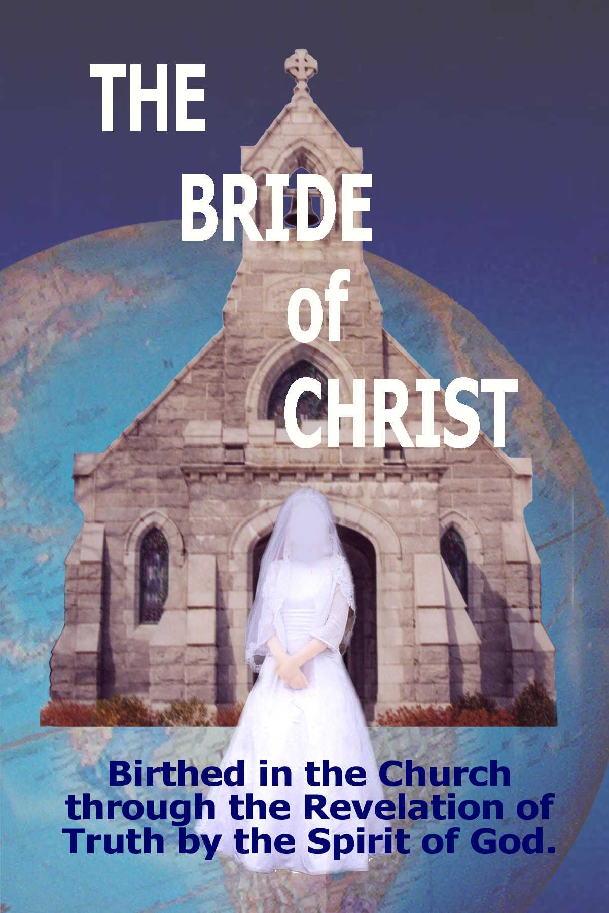

Copyright © 2004 by Rev. James Reynolds Sr.
All rights reserved. No part of this publication may be reproduced by any means – stored in a retrieval system, or transmitted in any form, electronic, mechanical, photocopying, recording, or other wise – without the prior written permission of the copyright owner.
Table of Contents i
Dedicated vi
Acknowledgments vii
Introduction viii
Section One Revelation of The Bride 1
The Bride of Christ 2
The Body of Christ 26
The Born Again 36
The Difference Between the Church and the Bride 48
The Rapture 59
The Seventieth Week 75
Section Two Types of The Bride 87
Eve Is A Type of the Bride 88
Rebekah Is A Type of the Bride 92
Asenath is a Type of the Bride 108
Zipporah a Type of the Bride 113
Ruth is a Type of The Bride 120
The Child in the Temple 129
Esther is a Type of the Bride 137
In Gold of Ophir 146
Section Three Prophetic Aspect of The Bride 152
The Sun Clothed Woman 153
The Great Red Dragon 174
The Man-Child 190
The War in Heaven 220
The Woman in the Wilderness 235
The Dragon Attacks the “Woman” 257
The Seed of the Woman 264
Preface
I have read that it has been said, “The book to write is the one that you would like to read and cannot find anywhere.” One of the reasons for the writing of this book is the fact that I could not find one that presented these truths in a manner in which truth was not distorted. Many express men’s opinions, but it is my intent to express the truth itself. The primary reason for this book is that I believe God spoke to my spirit by His Spirit to “write in a book the things, which you have seen and heard.”
In this book I present to you the Truth as the Spirit of God revealed it to me through visions, revelation, study and information given to me by spirit-filled, God-fearing people. The truth presented in this book is not the popular consensus of fundamental groups, but is the only view that presents the truth in a consistent, logical, honest, intelligent and comprehensible manner.
Beginning with the Reformation, God began restoring “the faith which was once delivered unto the saints.” That is, the Faith which had been lost through tradition, opinions and human ideas. Remember, the Bible says, “The natural man receiveth not the things of the Spirit of God: for they are foolishness unto him: neither can he know them, because they are spiritually discerned.” (I Cor. 2: 14)
Again, the Bible says, “As it is written, Eye hath not seen, nor ear heard, neither have entered into the heart of man, the things which God hath prepared for them that love him. But God hath revealed them unto us by His Spirit: for the Spirit searcheth all things, yea, the deep things of God.” (I Cor. 2: 9, 10) This tenth verse in the Amplified NT reads, “Yet to us God has unveiled and revealed them by and through His Spirit, for the (Holy) Spirit searches diligently, exploring and examining everything, even soundings the profound and bottomless things of God – the divine counsels and things hidden and beyond man’s scrutiny.”
Remember what Jesus said, “If any man will do His will, he shall know of the doctrine.” (Jn. 7: 17) There has to be obedience to the truth already revealed to receive more truth.
Prov. 4: 18 “The path of the just is as the shining light, that shineth more and more unto the perfect day.”
Several years ago, while I was praying God gave me a vision. In the vision I saw a train moving rapidly through the night. While I was watching this vision, I was trying to understand what God was saying to me. There was a night scene, a fast moving train and a light shining out into the night. The Spirit spoke to me and said, “Watch the light.” I was so taken up with trying to understand what God was saying to me by the vision of the train, that I really did not grasp what the Spirit was saying. I watched the train as it raced through the night and came into a turn. As it began to make the turn, the trees and grass were lit up along the tracks. The Spirit said again, “Watch the light.” The train made the turn and headed down the track. I could see out into the night. The track was lit up by the light. Again, the Spirit said, “Watch the light.” Suddenly, I saw the train slowing down and coming to a stop. When it stopped, the Spirit said again, “Watch the light.” Still I did not understand what God was trying to tell me. After a moment, the train began to move again. As the big wheels on the engine began to move and the train began to move down the track, the Spirit said again, “Watch the light.” This time I was made to understand what the Spirit was saying. As the train moved, the light moved. When the train stopped, the light stopped.
We must move in the light that we have, for God to give us more. If we stop moving on in the direction of the light (truth), the light will stop.
Heb. 6: 1 “Therefore leaving the principles of the doctrine of Christ, let us go on unto perfection; not laying again the foundation of repentance from dead works, and of faith toward God.”
Eph. 4: 11–14 “And he gave some, apostles; and some, prophets; and some, evangelists; and some, pastors and teachers; For the PERFECTING of the SAINTS, for the work of the ministry, for the edifying of the body of Christ: Till we all come in the unity of the faith, and of the knowledge of the Son of God, UNTO A PERFECT MAN, unto the measure of the stature of the fulness of Christ: That we henceforth be no more children, tossed to and fro, and carried about with every wind of doctrine, by the sleight of men, and cunning craftiness, whereby they lie in wait to deceive;”
As we now approach this book, I would admonish you to join your prayers with mine, that God would grant you divine revelation and understanding. Without the inspiration and help of the Holy Spirit, I question that you will understand the real meaning that is being presented in this book. There is much prejudice against the study and understanding of this Revelation. I now endeavor to present the truths as God has given them to me, earnestly praying God’s blessing upon what is written and upon all those who read and desire to understand.
Rev. James R. Reynolds Sr.
First of all, I dedicate this book to the Lord Jesus Christ who gave the vision and inspiration for the writing of the book. Also, I would dedicate this to all that will read and reap from the truths that are presented in this book, and to those whose lives will be changed and made ready for the marriage of the Lamb.
As the author of this book, I would like to express my appreciation to all those that had a part in preparing this book for printing; to all those that had a part in its typing: Christine Wing, Elaine Walsh, Ryan Barbour, my son John, and my wife. I want to express my sincere appreciation to my wife and to my son for the hours that they spent in proof-reading the manuscript, getting it ready for the printing; also, to my son for the work that he did in getting together the arrangement of the picture for the cover.
It is the duty and responsibility of the preacher to declare the whole counsel of God. In Acts 20: 27 the Apostle Paul said:
“...I have not shunned to declare unto you all the counsel of God.”
Whether or not it is accepted or rejected is not the responsibility of the preacher. His duty is to declare the truth as it is recorded in the Word of God. It is imperative that believers know the truth, not someone’s ideas about the truth. In Jn. 8: 32 Jesus said:
“...Ye shall know the truth, and the truth shall make you free.”
In writing this book I have endeavored to let the Word of God speak for itself. However, there is a lot of mystery in the Word of God and where that is evident I have depended on the Holy Spirit to reveal the mystery.
Paul said:
I Cor. 2: 9, 10 “...Eye hath not seen, nor ear heard, neither have entered into the heart of man, the things which God hath prepared for them that love Him. But God hath revealed them unto us by His Spirit: for the Spirit searcheth all things, yea, the deep things of God.”
There is mystery in the Word of God concerning the Church, the true Church (the Body of Christ), which Christ said He would build and the gates of hell would not prevail against it.
There is mystery in the Word of God concerning the Bride of Christ. Throughout this book I have endeavored to explain the mysteries as God revealed them to me by dreams, visions, revelations, and His speaking by His Spirit.
My first experience was many years ago while reading and studying the diagrams of a well-known writer, the Spirit of the Lord spoke to me and said, “What you are reading is wrong.” Immediately, He led me through the Scripture and unfolded the truth to me, scripture after scripture. This is what I will be doing throughout this book, revealing the truth as the Holy Spirit revealed it to me.
Before you judge the book, please read it thoroughly.
Prov. 18: 13 “He that answereth a matter before he heareth it, it is folly and shame unto him.”
Rev. James R. Reynolds Sr.
Section One: Revelation of The Bride
The Bride of Christ | 3 |
The Body of Christ | 19 |
The Born Again | 27 |
The Difference Between the Body and the Bride of Christ | 37 |
The Rapture | 45 |
The Seventieth Week | 57 |
Section Two: Types of The Bride
Eve is a Type of the Bride | 69 |
Rebekah is a Type of the Bride | 73 |
Asenath is a Type of the Bride | 85 |
Zipporah is a Type of the Bride | 89 |
Ruth is a Type of the Bride | 95 |
The Child in the Temple | 103 |
Esther is a Type of the Bride | 109 |
In Gold of Ophir | 117 |
Section Three: Prophetic Aspect of the Bride
The Sun-Clothed Woman | 123 |
The Great Red Dragon | 139 |
The Man-Child | 151 |
The War in Heaven | 173 |
The Woman in the Wilderness | 185 |
The Dragon Attacks the Woman | 201 |
The Seed of the Woman | 207 |
There is little knowledge among believers in this hour, about the required scriptural qualifications to be a part of the overcoming company of believers that make up the Bride of Christ.
Rev. 19: 7, 8 “Let us be glad and rejoice, and give honour to Him: for the marriage of the Lamb is come, and His wife hath made herself ready. And to her was granted that she should be arrayed in fine linen, clean and white: for the fine linen is the righteousness of saints.”
- A Select Company of Believers
- The Saved Are A Select Company
The Saved are a company of people selected out of the world. Jesus said:
Jn. 15: 16, 19 “Ye have not chosen Me, but I have chosen you, and ordained you, that ye should go and bring forth fruit, and that your fruit should remain: that whatsoever ye shall ask of the Father in My name, He may give it you. If ye were of the world, the world would love his own: but because ye are not of the world, but I have chosen you out of the world, therefore the world hateth you.”
Eph. 1: 4 “According as He hath chosen us in Him before the foundation of the world, that we should be holy and without blame before Him in love:”
- The Church Is A Select Company
The Church (the Body of Christ) is a company selected out of the Saved (the Born Again; the Family of God). The Church is not only the Born Again, but rather the Born Again believers who have been filled with the Holy Ghost.
I Cor. 12: 13 “For by one Spirit are we all baptized into one body…”
The Church is not only born of the Spirit but also baptized with the Spirit. As on the Day of Pentecost, the Church is filled with the Spirit proven by the sign evidence of speaking in tongues. Proof of this is in the fact that four of the five places where believers were filled with the Holy Spirit in Scripture states they spoke with tongues.
Acts 2: 4 “And they were all filled with the Holy Ghost, and began to speak with other tongues, as the Spirit gave them utterance.”
Acts 10: 45, 46 “And they of the circumcision which believed were astonished, as many as came with Peter, because that on the Gentiles also was poured out the gift of the Holy Ghost. For they heard them speak with tongues, and magnify God…”
Acts 19: 6 “And when Paul had laid his hands upon them, the Holy Ghost came on them; and they spake with tongues, and prophesied.”
I Cor. 14: 18 “I thank my God, I speak with tongues more than ye all:”
The one place it does not say they spoke with tongues is in Acts 8: 17. However, Simon the sorcerer was willing to give money to have the power to give the Holy Ghost to whomsoever he laid his hands on. Simon had to have seen something very supernatural to be willing to give his money for what he saw happen when the Apostles laid their hands on the people. (Acts 8: 18, 19) Without question, Simon saw them speak in tongues and glorify God as in the other places that speak of receiving the Holy Spirit.
- The Bride Is A Select Company
The Bride of Christ is a company selected out of the Church, the Body of Christ. Nowhere in the Bible is the Church called the Bride. Nowhere in the Scripture is Christ called the Husband of the Church. Instead, the reference is to the fact that He is the Head of the Church. The Church is His Body. The Bride will be a select company chosen out of the Church (the Body of Christ).
Jesus said in Matt. 20: 23, “…To sit on My right hand, and on My left, is not Mine to give, but it shall be given to them for whom it is prepared of My Father.” The Father makes the choice of those that will sit with Him (the Son).
- A Prepared Company of Believers
Rev. 19: 7 “Let us be glad and rejoice, and give honour to Him: for the marriage of the Lamb is come, and His wife hath made herself ready.”
“Hetoimazo” – “Made” – to prepare – make ready
- Prepared by the Revelation of the Word
The Bride will make herself ready by the revelation of God’s Word (revealed by the Spirit). She will apprehend every redemptive right the Lord has made available to every believer that hath an ear to hear what the Spirit has to say to the churches. The sad thing is that not everyone will listen.
Rev. 3: 20 “Behold, I stand at the door, and knock…”
This letter is to a Church that has become lukewarm. The Lord is outside knocking. “…If any man hear My voice, (the revealed Word) and open the door…” He is no longer addressing the whole Church, but now He calls to individuals. “…If any man…” that is in the Church will hear His voice, answer the call, open the door and let Him in, Jesus said, “…I will come in to him…” The idea is that He not only comes in, but “…in to him, and will sup with him, and he with Me.” The evening meal is the principal meal, the chief meal of the day, and the time when they eat meat and hearty foods. The Lord is saying that He wants to come in and share meat (Revelation of the Word) to develop the overcoming life in you, that is required to sit with Him on His Throne.
Rev. 3: 21 “To him that overcometh will I grant to sit with Me in My Throne…”
Matt. 24: 45 “…To give them meat in due season.”
This meat is revelation out of the Word by the Spirit, not apart from the Word, but out of the Word.
Matt. 24: 28 “For wheresoever the carcase is, there will the eagles be gathered together.”
Eagles do not eat carrion, they eat fresh slain meat. Eagle saints eat fresh revelation of truth. The Bride of Christ will make herself ready by eating the fresh revelation that God has, and is revealing to her. In Rev. 2: 17 the Lord said, “…To him that overcometh will I give to eat of the hidden (krupto – kept secret) manna…”
Paul said:
I Cor. 2: 9, 10 “But as it is written, Eye hath not seen, nor ear heard, neither have entered into the heart of man, the things which God hath prepared for them that love Him. But God hath revealed them unto us by His Spirit: for the Spirit searcheth all things, yea, the deep (hidden, secret) things of God.”
II Pet. 1: 3, 4 “According as His divine power hath given unto us all things that pertain unto life and godliness, through the knowledge of Him that hath called us to glory and virtue: Whereby are given unto us exceeding great and precious promises: that by these ye might be partakers of the Divine Nature…”
- Prepared by the Manifestation of God’s Power
Eph. 1: 19, 20 “And what is the exceeding greatness of His power to us-ward who believe, according to the working of His mighty power, Which He wrought in Christ, when He raised Him from the dead, and set Him at His Own right hand in the heavenly places,”
Eph. 3: 20 “Now unto Him that is able to do exceeding abundantly above all that we ask or think, according to the power that worketh in us,”
Phil. 2: 13 “For it is God which worketh in you both to will and to do of His good pleasure.”
Heb. 13: 20, 21 “Now the God of peace… Make you perfect in every good work to do His will, working in you that which is wellpleasing in His sight, through Jesus Christ; to Whom be glory for ever and ever. Amen.”
I Pet. 5: 10 “But the God of all grace, Who hath called us unto His eternal glory by Christ Jesus, after that ye have suffered a while, make you perfect, stablish, strengthen, settle you.”
II Pet. 1: 3 “According as His divine power hath given unto us all things that pertain unto life and godliness, through the knowledge of Him that hath called us to glory and virtue:”
- A Position of Attainment by Faith
Rev. 19: 8 “And to her was granted that she should be arrayed in fine linen, clean and white: for the fine linen is the righteousness of saints.”
This is not just imputed righteousness, this is ‘acts of righteousness’ (acquired righteousness). This is righteousness acquired through appropriation by faith, and through application of the truth by grace.
Eph. 4: 13 “Till we all come in the unity of the faith, and of the knowledge of the Son of God, unto a perfect man, unto the measure of the stature of the fulness of Christ:”
- The Bride will Run to Gain the Prize
Not everyone will run, for most have been taught that they have been given everything by grace and there is no need to exercise energy to gain the prize. Salvation is a gift that can not be earned. This is a prize that is only earned by running, and not by running only, but running according to the rules to win the prize. Therefore, there are conditions that have to be met in order to win.
I Cor. 9: 24 “Know ye not that they which run in a race run all, but one receiveth the prize? So run, that ye may obtain.”
Phil. 3: 14 “I press toward the mark for the prize of the high calling of God in Christ Jesus.
II Tim. 2: 5 “And if a man also strive for masteries, yet is he not crowned, except he strive lawfully.”
“Nomimos” – “Lawfully” – agreeable to the rules
This word “nomimos“ is used in contending in the games and achieving according to the rules.
Heb. 12: 1 “Wherefore seeing we also are compassed about with so great a cloud of witnesses, let us lay aside every weight, and the sin which doth so easily beset us, and let us run with patience the race that is set before us,”
- The Bride will Fight the Good Fight of Faith
The Bride of Christ is an overcomer. To be an overcomer something has to be overcome. There are forces that will fight against the believer, and for the believer to be an overcomer they must fight to keep what has been given to them by grace. This is a fight of faith.
II Cor. 10: 4 “(For the weapons of our warfare are not carnal, but mighty through God to the pulling down of strong holds;)”
Eph. 6: 12, 13 “For we wrestle not against flesh and blood, but against principalities, against powers, against the rulers of the darkness of this world, against spiritual wickedness in high places. Wherefore take unto you the whole armour of God, that ye may be able to withstand in the evil day, and having done all, to stand.”
I Tim. 6: 12 “Fight the good fight of faith, lay hold on eternal life, whereunto thou art also called, and hast professed a good profession before many witnesses.”
- The Bride will Live the Life
The Bride will not only profess a good profession, but will live a life conformed to the Word of God, and to the image of Christ. There has to be a connection between the character of those who profess Christ as Lord, and those who adorn themselves in a suitable life-style that pleases the Lord. Like Enoch of old “...before his translation he had this testimony, that he pleased God.”
Matt. 7: 21 “Not every one that saith unto Me, Lord, Lord, shall enter into the kingdom of heaven; but he that doeth the will of My Father which is in heaven.”
Titus 1: 16 “They profess that they know God; but in works they deny Him, being abominable, and disobedient, and unto every good work reprobate.”
Jas. 1: 22 “But be ye doers of the Word, and not hearers only, deceiving your own selves.”
- The Bride will Make no Provision for the Flesh
Flesh struggles desperately hard to survive in the best of men, but with the help of the Holy Spirit the flesh can, and will be overcome. The more of Christ that the believer has in his life, the less the flesh will rule.
Rom. 13: 14 “But put ye on the Lord Jesus Christ, and make not provision for the flesh, to fulfil the lusts thereof.”
- The Bride will Perfect Holiness
The Bride of Christ will perfect holiness both in the flesh and in the spirit.
II Cor. 7: 1 “Having therefore these promises, dearly beloved, let us cleanse ourselves from all filthiness of the flesh and spirit, perfecting holiness in the fear of God.”
This is not perfecting holiness in order to be saved; but because the believer has been saved. Therefore, cleanse yourself “...from all filthiness of the flesh and spirit, perfecting holiness in the fear of God.”
This is not something that we do in ourselves only, as Paul said in Phillipians, “Work out your own salvation with fear and trembling. For it is God which worketh in you both to will and to do of His good pleasure.” (Phil. 2: 12, 13)
God has made great promises and provisions for the believer to achieve all that God requires, but only if these promises are accepted and acted upon by faith.
II Pet. 1: 4 “Whereby are given unto us exceeding great and precious promises: that by these ye might be partakers of the Divine Nature...”
- The Bride will have Crucified the Flesh
The Bride of Christ will have crucified the flesh with the affections and lusts. The flesh has to be crucified, flesh cannot reign in the life of the overcomer.
Gal. 5: 24 “And they that are Christ's have crucified the flesh with the affections and lusts.”
The Bible makes it very plain that the believer is commanded not to let sin reign. If the believer is commanded not to let sin reign, then the believer is capable of not letting sin reign. God does not require that which is impossible to do.
Rom. 6: 12 “Let not sin therefore reign in your mortal body, that ye should obey it in the lusts thereof.”
Remember, ye are servants to (owned by) whoever ye yeild yourselves to obey.
Rom. 6: 16–18 “Know ye not, that to whom ye yield yourselves servants to obey, his servants ye are to whom ye obey; whether of sin unto death, or of obedience unto righteousness? But God be thanked, that ye were the servants of sin, but ye have obeyed from the heart that form of doctrine which was delivered you. Being then made free from sin, ye became the servants of righteousness.”
Also, the flesh must be crucified if the life of Jesus is to be made manifest in us.
II Cor. 4: 10, 11 “Always bearing about in the body the dying of the Lord Jesus, that the life also of Jesus might be made manifest in our body. For we which live are alway delivered unto death for Jesus' sake, that the life also of Jesus might be made manifest in our mortal flesh.”
- The Bride will Follow the Leading of the Spirit
The Bride of Christ, having attained to full maturity (huios), positioned as sons, will know the voice of the Lord and will follow His leading.
Rom. 8: 14 “For as many as are led by the Spirit of God, they are the sons (huios) of God.”
Jesus said in Jn. 10: 27 “My sheep (“Probaton” – advanced in years – distinct from “Arnia” lambs) hear My voice, and I know them, and they (the mature sheep) follow Me.”
Only mature saints hear the voice of the Lord and follow His leading. Babes, like lambs, often confuse the voice of other shepherds with the voice of their Master.
Matt. 24: 5 “For many shall come in My name, saying, I am Christ; and shall deceive many.”
Only the immature babes (lambs) will be deceived. The mature sons (sheep) will not be deceived and led astray.
Jn. 10: 4, 5 “And when He putteth forth His own sheep, He goeth before them, and the sheep follow Him: for they know His voice. And a stranger will they not follow, but will flee from him: for they know not the voice of strangers.”
Rev. 14: 4 “...These are they which follow the Lamb whithersoever he goeth...”
- The Bride will Love the Lord Without Reserve
Jesus said:
Mk. 12: 30 “…Thou shalt love the Lord thy God with all thy heart, and with all thy soul, and with all thy mind, and with all thy strength:”
To do this requires perfection, full growth in the Spirit, and perfect obedience. This is a command, “Thou shalt,” but it is also a promise, “Thou shalt.” The Lord is promising the ability to do it. The Lord will never require what we cannot do without giving the ability to do it.
Phil. 2: 13 “For it is God which worketh in you…”
Jn. 14: 21 “He that hath My commandments, and keepeth them, he it is that loveth Me: and he that loveth Me shall be loved of My Father, and I will love him, and will manifest (reveal) Myself to him.”
I Jn. 2: 3–5 “…Hereby we do know that we know Him, if we keep His commandments. He that saith, I know Him, and keepeth not His commandments, is a liar, and the truth is not in him. But whoso keepeth His Word, in him verily is the love of God perfected…”
- The Bride will be Crowned with Crowns of Gold
The Bride of Christ, having run the race, fought the fight of faith, and gained the prize, is now crowned with crowns of gold. Crowns are not gifts, they are awarded for achievement.
Rev. 4: 4 “…And they had on their heads crowns of gold.”
Salvation is not a prize to be gained or earned; it is a gift that must be received by faith. However, there is promised to the believer that will run, that will fight the good fight of faith, and that will walk obediently in the truth, a crown.
I Cor. 9: 24, 25 “Know ye not that they which run in a race run all, but one receiveth the prize? So run, that ye may obtain. And every man that striveth for the mastery is temperate in all things. Now they do it to obtain a corruptible crown; but we an incorruptible.”
- The Bride will be Seated on Thrones
Also, in this fourth chapter of Revelation the Bride of Christ is seated on thrones with the Lord as He promised in Rev. 3: 21. The promise of throne rights is only given to the overcomer, not to the whole Church. He was addressing the whole Church, but the whole Church will not listen. The promise to sit with Him on His throne is to the overcomer.
Rev. 4: 4 “And round about the throne were four and twenty seats (thrones): and upon the seats I saw four and twenty elders sitting, clothed in white raiment…”
They are “…clothed in white raiment…” as promised in Rev. 19: 8.
- Composed Entirely of Overcomers
Rev. 3: 21 “To him that overcometh will I grant to sit with Me in My Throne, even as I also overcame, and am set down with My Father in His Throne.”
The Bride is composed of Overcomers out of the Church (the Body of Christ). The context makes it quite plain what the Church has to overcome in order to be the Bride.
- The First Thing to Overcome is ‘Lukewarmness’
Rev. 3: 16 “So then because thou art lukewarm…”
The Lord says in Rev. 3: 19, “…Be zealous… and repent.” Repent and be fervent, hot, and on fire.
Rom. 12: 11 “…Fervent in spirit; serving the Lord…”
- The Second Thing to Overcome is a Self-satisfied Attitude of Pride
Rev. 3: 17 “Because thou sayest, I am rich, and increased with goods, and have need of nothing…”
The Lord says they know not they are “…poor…” The Lord counsels them in Rev. 3: 18, “…Buy of Me gold tried in the fire, that thou mayest be rich…” Faith is the buying power. They were all wrapped-up in material goods; rich in earthly things, but poor in spiritual things. His counsel was to buy of Him spiritual wealth, defined as “…Gold tried in the fire…” which is the very nature of God.
II Pet. 1: 4 “Whereby are given unto us exceeding great and precious promises: that by these ye might be partakers of the Divine Nature…”
- The Third Thing to Overcome is the Ignorance of Their Condition
Rev. 3: 17 “…And knowest not that thou art wretched, and miserable…”
The Lord says they are “blind” to their condition. Therefore, this requires a truthful and strict examination of ourselves. Paul said:
II Cor. 13: 5 “Examine yourselves, whether ye be in the faith; prove your own selves.”
Jesus said:
Jn. 8: 32 “…Ye shall know the truth, and the truth shall make you free.”
The Lord’s counsel was to “…anoint thine eyes with eyesalve, that thou mayest see…” (Rev. 3: 18) The eyes must be anointed by the Holy Spirit with spiritual insight and revelations to not only see the “blind” condition, but to see the provisions made for this condition. You can not overcome spiritual blindness in yourself. It takes the anointing of God by His Spirit to remove the scales of blindness. It will cost you something to get this “eyesalve” that will remove the blindness.
The Lord says, “…Buy of Me…”
- Through Repentance
- Through Believing His Promise
- Through Obedience to His Word
II Cor. 10: 5, 6 “Casting down imaginations, and every high thing that exalteth itself against the knowledge of God, and bringing into captivity every thought to the obedience of Christ; And having in a readiness to revenge all disobedience, when your obedience is fulfilled.”
Rev. 3: 18 “…And white raiment, that thou mayest be clothed, and that the shame of thy nakedness do not appear…”
Adam and Eve had a spiritual covering that they lost when they sinned in the garden, and they then knew they were naked.
Gen. 3: 7 “And the eyes of them both were opened, and they knew that they were naked; and they sewed fig leaves together, and made themselves aprons.”
Here the Lord was speaking to the Church and telling them that they were “naked.” They had lost their spiritual covering.
“Raiment” is used in Scripture to typify character. “…Clothed with Majesty…” (Psa. 93: 1) “…Clothed with Honour…” (Psa. 104: 1)
“Raiment” also typifies Salvation, Righteousness and Purity.
Job 29: 14 “I put on righteousness, and it clothed me: my judgment was as a robe and a diadem.”
Psa. 132: 16 “I will also clothe her priests with salvation: and her saints shall shout aloud for joy.”
Isa. 61: 10 “I will greatly rejoice in the LORD, my soul shall be joyful in my God; for He hath clothed me with the garments of salvation, He hath covered me with the robe of righteousness, as a bridegroom decketh himself with ornaments, and as a bride adorneth herself with her jewels.”
Zech. 3: 4 “And He answered and spake unto those that stood before Him, saying, Take away the filthy garments from him. And unto him He said, Behold, I have caused thine iniquity to pass from thee, and I will clothe thee with change of raiment.”
The believers that are in the Church need to overcome this condition of “nakedness” to be in the Bride.
- A State of Complete Deliverance
Lk. 21: 28 “And when these things begin to come to pass, then look up, and lift up your heads; for your redemption draweth nigh.”
- The Time of Complete Deliverance
The first thing to notice is the time of complete deliverance.
“And when these things begin to come to pass…”
Deception is the first thing that Jesus talked about in this list of events that will take place in the end-time.
Lk. 21: 8 “And He said, Take heed that ye be not deceived: for many shall come in My name, saying, I am Christ; and the time draweth near: go ye not therefore after them.”
Matt. 24: 11 “…Many false prophets shall rise, and shall deceive many.”
Matt. 24: 24 “For there shall arise false christs, and false prophets, and shall show great signs and wonders; insomuch that, if it were possible, they shall deceive the very elect.”
I Tim. 4: 1 “Now the Spirit speaketh expressly, that in the latter times some shall depart from the faith, giving heed to seducing spirits, and doctrines of devils;”
II Tim. 3: 13 “…Evil men and seducers shall wax worse and worse, deceiving, and being deceived.”
II Pet. 2: 19 “…They promise… liberty, they themselves are the servants of corruption…”
I Jn. 3: 7 “Little children, let no man deceive you…”
We are living in the time of great deception, which indicates that we are living in the time of complete deliverance.
- The Preparation for Deliverance
The next thing to notice is the preparation for deliverance.
Lk. 21: 28 “…Look up, and lift up your heads…”
“Anakupto” – “look up” – actually this is a compound word in the sense of reversal; to unbend; straighten up. There is a lot of spiritual bending and bowing today in this age of deception and compromise. God is calling His people to straighten up, and line up with His Word. “Ana” – repetition – Straighten up and keep straightening up.
Not everyone will take heed to the Lord’s warning ‘to straighten up,’ but the Bride will take heed to the warning and prepare herself for the promised deliverance.
- The State of Release or Complete Deliverance
Lk. 21: 28 “…For your redemption draweth nigh.”
To comprehend the truth stated in this text you need to understand the meaning of the word “Redemption.” In the Greek scripture there are several different words used to describe “Redemption,” “Redeem,” “Redeemed,” “Redeemedst,” “Redeemeth” and “Redeeming.” Therefore, it is necessary to understand from the Greek the true meaning of the word “Redemption” in this text.
We will now look at the other Greek words translated in the King James version by one of these words of Redemption, or Redeeming.
There is the word “Agorazo” in Rev. 5: 9. This word has the meaning “to buy” – “a price paid.” “…For Thou wast slain, and hast redeemed (Agorazo) us to God by Thy blood…” Christ is spoken of as having bought His people at the price of His blood.
“Exagorazo” – is a strengthened form of “agorazo” – “to buy.” The prefix “ex–” gives the meaning of purchasing or buying with a view to release.
Gal. 3: 13 “Christ hath redeemed us from the curse of the law…”
Christ bought us with His blood to release us from the curse.
“Lutroo” – which is a verb, speaks of a process of release.
Titus 2: 14 “Who gave Himself for us, that He might redeem (Lutroo) us from all iniquity, and purify unto Himself a peculiar people, zealous of good works.”
Christ paid the full purchase price for us, but there is a process of releasing “…us from all iniquity, and purify unto Himself a peculiar people…”
“Lutrosis” – is a noun revealing the fact that Christ has purchased for us a state of release.
Heb. 9: 12 “…By His own blood He entered in once into the holy place, having obtained eternal redemption (“Lutrosis” – a state of release) for us.”
Although Christ purchased the state of release for us, it is our responsibility to enter into that state. Because Christ purchased it for us, some say it is an automatic thing for us to be in that state, no matter what we do or how we live. God’s part is eternal, done, completed. God made the provision, but we must, by Grace and Faith, enter into this state.
“Apolutrosis” “Apo” – complete “Lutrosis” – state of release
Lk. 21: 28 “…When these things begin to come to pass, then look up (straighten up and keep straightening up), and lift up your heads; for your redemption (“Apolutrosis” – complete state of release) draweth nigh.”
In Ephesians we have the promise of this “complete state of release” and the promise of our full inheritance, which is the fullness of the Spirit. We have only had the earnest of our inheritance until now.
Eph. 1: 13, 14 “In whom ye also trusted, after that ye heard the Word of truth, the gospel of your salvation: in Whom also after that ye believed, ye were sealed with that Holy Spirit of promise, Which is the earnest (“Arrhabon” – a pledge as security for the rest; a down payment; assurance of something more to come) of our inheritance until the redemption (“Apolutrosis” – the complete state of release) of the purchased possession…”
The believer, “…the purchased possession…” is given the earnest of the Spirit (the Baptism of the Spirit) “which is the earnest of our inheritance…” until the believer is completely released. We are now in the process of being released. However, we are moving into the time of complete release and the fullness of the Spirit.
I Pet. 1: 3–5 “Blessed be the God and Father of our Lord Jesus Christ, which according to His abundant mercy hath begotten us again unto a lively (living) hope by the resurrection of Jesus Christ from the dead, To an inheritance incorruptible, and undefiled, and that fadeth not away, reserved in heaven for you (remember, we do not have it as of yet), Who are kept by the power of God through faith unto salvation ready to be revealed in the last time.”
“Soteria” – “Salvation” – a deliverance or complete state of release
This state of release is “…ready to be revealed in the last time.” We are in the last time (or last days) and are looking forward for this “Soteria,” this End Time Deliverance (the complete state of release of the purchased possession that Christ purchased with His Blood). Not everyone will be a part of this deliverance; it is exclusively for the Overcomer (the Bride).
Lk. 21: 36 “Watch ye therefore, and pray always, that ye may be accounted worthy…”
Eph. 1: 22, 23 “And hath put all things under His feet, and gave Him to be the head over all things to the church, which is His body, the fullness of Him that filleth all in all.”
All those that teach that the Bride of Christ is composed of the whole church fail to take into consideration one fact. That fact is that the highest position of honor is a reward for spiritual attainment and a Christ-like character.
Eph. 4: 13 “Till we all come in the unity of the faith, and of the knowledge of the Son of God, unto a perfect man, unto the measure of the stature of the fullness of Christ:”
Rev. 3: 10 “Because thou hast kept the Word of My patience, I also will keep thee from the hour of temptation, which shall come upon all the world, to try them that dwell upon the earth.”
Rev. 3: 21 “To him that overcometh will I grant to sit with Me in My Throne, even as I also overcame…”
Rev. 19: 7, 8 “Let us be glad and rejoice, and give honour to Him: for the marriage of the Lamb is come, and His wife hath made herself ready. And to her was granted (given) that she should be arrayed in fine linen, clean, and white: for the fine linen is the righteousness (righteous acts) of saints.”
- The Body of Christ is The Church
Nowhere in the Word of God is the Church ever called the Bride of Christ. This is simply assumed by men to be the meaning, but there is no Scripture to support this theory. However, repeatedly throughout the Scripture the Church is called the Body of Christ. In this text, Eph. 1: 22, 23, Christ’s position is shown as the Head of the Church (which is His body). The fifth chapter is the chapter, the one chapter, that they love to use in trying to prove the Church to be the Bride of Christ. However, if you will read it carefully and honestly, there is no reference to the Church as His Bride.
Eph. 5: 23 “For the husband is the head of the wife, even as Christ is the Head of the Church: and He is the Savior of the Body.”
Eph. 5: 30 “For we are members of His Body, of His flesh, and of His bones.”
Scofield said, “Eve, taken from Adam’s body was truly bone of his bones, and flesh of his flesh, but she was also his wife.” He says this is “…a clear type of the Church as the Bride of Christ.”
However, when studying the Scripture and analyzing it, by putting its parts into proper perspective, the flaws are seen in this theory of making the Body to be the Bride.
First, Eve was taken out the body of Adam, but not until after his body had been completed. Therefore, in fulfillment of this type the Bride will not be taken out of the Church until the latter part of the Church age, which we are now in.
Secondly, Eve was formed from a very small part of Adam’s body, only a “rib,” not the whole body. From that “rib” out of Adam’s body, God formed a bride for Adam.
Thirdly, Eve then existed apart from the rest of the body as a separate entity.
Lastly, Eve was “bone of his bone.” However, she was not all of his bones as Scofield’s theory requires. After God took the “rib” and made Eve, Adam awoke out of sleep and retained all his bones except one rib. It is very difficult, in fact totally impossible, to make Eve, a “rib,” to be the whole body of Adam. This is what you would have to do to make Eve (the type of the Bride of Christ) the type of the whole Church.
- The Church as a Whole is Lukewarm
The Lord Jesus Himself stated that the Church is not fervent, nor on fire, nor overcoming but is in a state of lukewarmness.
Rev. 3: 15, 16 “I know thy works, that thou art neither cold nor hot: I would thou wert cold or hot. So then because thou art lukewarm, and neither cold nor hot, (in a state of satisfaction and also a state of comfort) I will spue thee out of My mouth.”
The Church as a whole, in this state of “lukewarmness,” is not a fit example of an Overcomer ready to sit with Christ on His Throne. Jesus said:
Rev. 3: 17, 18 “Because thou sayest, I am rich, and increased with goods, and have need of nothing; and knowest not that thou art wretched, and miserable, and poor, and blind, and naked: I counsel thee to buy of Me gold tried in the fire (there is a price for the gold, it will cost you something), that thou mayest be rich; and white raiment, that thou mayest be clothed, and that the shame of thy nakedness (spiritual nakedness before God) do not appear, and anoint thine eyes with eye salve that thou mayest see.”
The Church needs the “eye salve” of the Holy Spirit applied to its eyes to see its own condition. This “eye salve” of the Holy Spirit is also needed to see the revelations that God is making known to those who love Him.
I Cor. 2: 9, 10 “…Eye hath not seen, nor ear heard, neither have entered into the heart of man, the things which God hath prepared for them that love Him. But God hath revealed them unto us by His Spirit: for the Spirit searcheth all things, yea, the deep (hidden-mysteries) things of God.”
Rev. 2: 17 “…To him that overcometh will I give to eat of the hidden manna…” (covered – concealed – kept secret)
God has promised to reveal His truths to the Overcomer that cannot be understood by the natural mind. These truths must be, and can only be, revealed by His Spirit.
- The Church Has Been Deceived
Jesus said:
Matt. 24: 11, 12 “And many false prophets shall rise, and shall deceive many. And because iniquity shall abound, the love of many shall wax cold.”
II Thes. 2: 3 “Let no man deceive you by any means: for that day shall not come, except there come a falling away first…”
“Apostasia”– “falling away” – defection from truth – to forsake the truth – revolt
This is not a falling away in numbers, but a falling away in principles. They are defecting from the truth once delivered to them.
I Tim. 4: 1 “Now the Spirit speaketh expressly, that in the latter times some shall depart from the faith, giving heed to seducing spirits, and doctrines of devils;”
II Tim. 4: 3, 4 “For the time will come when they will not endure sound doctrine; but after their own lusts shall they heap to themselves teachers, having itching ears; And they shall turn away their ears from the truth, and shall be turned unto fables.”
“Muthos” – “fable” – fiction – in which there is falsification of facts.
Christ is knocking at the Church’s door. (Rev. 3: 20) The whole Church will not respond. He now speaks to the individual that will hear His knocking (responds to His Word) and open the door (the door to his inner life – to his heart). He said, “I will come in to him and will sup with him, and he with Me.” Christ will share truth.
- The Church has Many Undeveloped Believers
Some believers accepted Christ as their Savior and were born into the Family of God, but they have never developed. They are still babes. They have never grown in their experience.
I Cor. 3: 1–3 “And I, brethren, could not speak unto you as unto spiritual, but as unto carnal, even as unto babes in Christ. I have fed you with milk, and not with meat: for hitherto ye were not able to bear it, neither yet now are ye able. For ye are yet carnal: for whereas there is among you envying, and strife, and divisions, are ye not carnal, and walk as men.”
Gal. 4: 1–3 “Now I say, that the heir, as long as he is a child, differeth nothing from a servant, though he be lord of all. But is under tutors and governors until the time appointed of the father. Even so we, when we were children, were in bondage under the elements of the world:”
Eph. 4: 14 “ That we henceforth be no more children, tossed to and fro, and carried about with every wind of doctrine, by the sleight of men, and cunning craftiness, whereby they lie in wait to deceive;”
Heb. 5: 11– 6: 1 “Of whom we have many things to say, and hard to be uttered, seeing ye are dull of hearing. For when for the time ye ought to be teachers, ye have need that one teach you again which be the first principles of the oracles of God; and are become such as have need of milk, and not of strong meat. For every one that useth milk is unskillful in the Word of righteousness: for he is a babe. But strong meat belongeth to them that are of full age, even those who by reason of use have their senses exercised to discern both good and evil. Therefore leaving the principles of the doctrine of Christ, let us go on unto perfection; not laying again the foundation of repentance from dead works, and of faith toward God.”
- Some in The Church will be Saved as By Fire
Not everyone that is in the Church is willing to do what is required to have an abundant entrance into the kingdom of God.
II Peter 1: 10, 11 “Wherefore the rather, brethren, give diligence to make your calling and election sure: for if ye do these things, ye shall never fall: For so an entrance shall be ministered unto you abundantly into the everlasting kingdom of our Lord and Savior Jesus Christ.”
As Paul said in I Cor. 3: 12, there are many that are building on the foundation that has been laid, “wood, hay, stubble.” He goes on to say:
I Cor. 3: 13–15 “Every man’s work shall be made manifest: for the day shall declare it, because it shall be revealed by fire: and the fire shall try every man’s work of what sort it is. If any man’s work abide which he hath built thereupon, he shall receive a reward. If any man’s work shall be burned, he shall suffer loss: but he himself shall be saved; yet so as by fire.”
- Some in The Church have Committed Spiritual Adultery
The believer is admonished by the Word of God to “…come out from among them, and be ye separate… and touch not the unclean thing; and I will receive you… saith the Lord…” (II Cor. 6: 17, 18)
James says:
Jas. 4: 4 “Ye adulterers and adulteresses, know ye not that the friendship of the world is enmity with God? Whosoever therefore will be a friend of the world is the enemy of God?”
I Jn. 2: 15, 16 “Love not the world, neither the things that are in the world. If any man love the world, the love of the Father is not in him. For all that is in the world, the lust of the flesh, and the lust of the eyes, and the pride of life, is not of the Father, but is of the world.”
- The Church will be Invited To the Marriage Supper
The Lord will return at the midnight hour (the middle of the Tribulation hour) to Rapture the Church and welcome them to the Marriage Feast. The five wise “virgins” represent the Church that will awake out of sleep, through the persecution of the first three-and-a-half years of the Tribulation, and will be invited to the Marriage Feast. Luke 12: 36-38 says the Lord will return after the wedding; the Church will be made to sit down and the Lord Himself will come forth and serve them. Again in Rev. 19: 9, “And he saith unto me, Write, Blessed are they which are called unto the Marriage Supper of the Lamb…”
There is nothing in this world worth the loss of the soul and missing out on salvation. Neither the fleshly entertainment, nor earthly pleasure could be worth spending an eternity without God in an eternal hell of suffering.
There is nothing worth missing the Rapture of the Church, by which the Church will escape the last three-and-a-half years of the Tribulation. This is known in the Scripture as the Great Tribulation, which is the time of the releasing of God’s judgments on the earth. This includes the opening of the Seals, the sounding of the Trumpets, the releasing of the Vials, and even the Thunders that John was told not to record. Most believe these judgments cover the whole seven years. They are very wrong, for the Seals are not opened until after the Church has been Raptured in the middle of the Tribulation and is seen around the Throne.
Rev. 5: 6 “And I beheld, and, lo, in the midst of the Throne and of the four beasts, and in the midst of the elders, stood a Lamb as it had been slain, having seven horns and seven eyes, which are the seven Spirits of God sent forth into all the earth.”
Furthermore, there is nothing in this whole world worth missing the Translation of the Bride of Christ. She will not only escape the seven years of Tribulation, but will be honored in the Marriage of the Lamb as His wife, and will be seated with Him on His Throne. (Rev. 3: 21)
Remember, Peter said:
I Pet. 4: 17 “…Judgment must begin at the house of God: and if it first begins at us, what shall the end be of them that obey not the gospel of God?”
I Cor. 11: 31 “For if we would judge ourselves, we should not be judged.”
Only the Bride (the Overcomer) will judge herself by the Word, and make herself ready. (Rev. 19: 7, 8)
The Church will be judged by persecution in the first three-and-a-half years of the Tribulation. The Saved (the Born Again; the Family of God) has allowed their garments to become spotted by the world and the flesh, and failed to repent under the persecution the Church endured. The Saved will be judged in The Great Tribulation (the last three-and-a-half years). The Scripture states they will make their robes white by washing them in the Blood of the Lamb.
Rev. 7: 9, 13, 14 “After this I beheld, and, lo, a great multitude, which no man could number, of all nations, and kindreds, and people, and tongues, stood before the Throne, and before the Lamb, clothed with white robes, and palms in their hands… And one of the elders answered, saying unto me, What are these which are arrayed in white robes? and whence came they? And I said unto him, Sir, thou knowest. And he said to me, These are they which came out of great tribulation, and have washed their robes, and made them white in the Blood of the Lamb.”
Jn. 3: 1-7 “There was a man of the Pharisees, named Nicodemus, a ruler of the Jews: The same came to Jesus by night, and said unto Him, Rabbi, we know that Thou art a teacher come from God: for no man can do these miracles that Thou doest, except God be with him. Jesus answered and said unto him, Verily, verily, I say unto thee, Except a man be born again, he cannot see the kingdom of God. Nicodemus saith unto Him, How can a man be born when he is old? can he enter the second time into his mother's womb, and be born? Jesus answered, Verily, verily, I say unto thee, Except a man be born of water and of the Spirit, he cannot enter into the kingdom of God. That which is born of the flesh is flesh; and that which is born of the Spirit is spirit. Marvel not that I said unto thee, Ye must be born again.”
- The Necessity of the New Birth
- It is Essential to Spiritual Life
- Man is born a sinner
Ps. 51: 5 “Behold, I was shapen in iniquity; and in sin did my mother conceive me.”
- Man is dead spiritually in his sins
Eph. 2: 1 “And you hath He quickened, who were dead in trespasses and sins.”
- Man must be born again
Jn. 3: 7 “Marvel not that I said unto thee, ye must be born again.”
- It is Essential to Spiritual Vision
- Man is blinded by sin to spiritual things
II Cor. 4: 4 “In whom the god of this world hath blinded the minds of them which believe not…”
- Man must have a spiritual birth to see spiritual things
Jn. 3: 3 “…Except a man be born again, he cannot see the kingdom of God.”
- It is Essential to Spiritual Knowledge
- Man in his natural state cannot understand spiritual things
I Cor. 2: 14 “…The natural man receiveth not the things of the Spirit of God: for they are foolishness unto him: neither can he know them, because they are spiritually discerned.”
- Man must be born of the Spirit to discern spiritual things
Jn. 3: 6 “That which is born of the flesh is flesh; and that which is born of the Spirit is spirit.”
I Cor. 2: 15 “…He that is spiritual judgeth (discerneth) all things…”
- It is Essential to Worship God
- Man being dead spiritually in his sins cannot worship God
Col. 2: 13 “And you, being dead in your sins…”
- Man must be born of the Spirit to worship God in spirit
Jn. 4: 24 “God is a Spirit: and they that worship Him must worship Him in spirit and in truth.”
- The Nature of the New Birth
- It is a Spiritual Birth
Jn. 3: 6 “That which is born of the flesh is flesh; and that which is born of the Spirit is spirit.”
- It is of Divine Origin
Jn. 1: 13 “Which were born, not of blood, nor of the will of the flesh, nor of the will of man, but of God.”
- It is by the Word of God
I Pet. 1: 23 “Being born again, not of corruptible seed, but of incorruptible, by the Word of God, which liveth and abideth forever.”
- It is a New Creation
II Cor. 5: 17 “Therefore if any man be in Christ, he is a new creature (creation)…”
- It is a Mystery
Jn. 3: 8 “The wind bloweth where it listeth, and thou hearest the sound thereof, but canst not tell whence it cometh, and whither it goeth: so is every one that is born of the Spirit.”
Jn. 3: 5 “…Verily, verily, I say unto thee, Except a man be born of water and of the Spirit, he cannot enter into the kingdom of God.”
This Scripture is often misinterpreted to mean water baptism, but you must remember that baptism has to do with death, not life.
Rom. 6: 4 “Therefore we are buried with Him by baptism into death.”
This has to do with birth – having life imparted to the believer.
Jn. 6: 63 “It is the Spirit that quickeneth; the flesh profiteth nothing: the words that I speak unto you, they are spirit, and they are life.”
The Water is a type of the Word which gives life.
Eph. 5: 26 “That He might sanctify and cleanse it with the washing of Water by the Word.”
Jn. 15: 3 “Now ye are clean through the Word which I have spoken unto you.”
I Pet. 1: 22 “Seeing ye have purified your souls in obeying the Truth (the Word) through the Spirit.”
- The Requirements for Receiving the New Birth
- The New Birth is Obtained by Faith
Jn. 1: 12 “…As many as received Him, to them gave He power to become the sons of God, even to them that believe on His name.”
Jn. 3: 36 “He that believeth on the Son hath everlasting life: and he that believeth not the Son shall not see life; but the wrath of God abideth on him.”
I Jn. 5: 1 “Whosoever believeth that Jesus is the Christ is born of God.”
- The New Birth Requires Repentance
Lk. 13: 3 “…Except ye repent, ye shall all likewise perish.”
Acts 3: 19 “Repent ye therefore, and be converted, that your sins may be blotted out.”
II Pet. 3: 9 “The Lord is not slack concerning His promise, as some men count slackness; but is longsuffering to usward, not willing that any should perish, but that all should come to repentance.”
- The New Birth Requires Confession
- Confession of sins
I Jn. 1: 9 “If we confess our sins, He is faithful and just to forgive us our sins, and to cleanse us from all unrighteousness.”
- Confession of Christ
Rom. 10: 9, 10 “That if thou shalt confess with thy mouth the Lord Jesus, and shalt believe in thine heart that God hath raised Him from the dead, thou shalt be saved. For with the heart man believeth unto righteousness; and with the mouth confession is made unto salvation.”
- The Evidence of the New Birth
- Will Live Righteously
I Jn. 2: 29 “If ye know that He is righteous, ye know that every one that doeth righteousness is born of Him.”
- Will Keep His Commandments
I Jn. 2: 3-6 “…Hereby we do know that we know Him, if we keep His commandments. He that saith, I know Him, and keepeth not His commandments, is a liar, and the truth is not in him. But whoso keepth His Word, in Him verily is the love of God perfected: hereby know we that we are in Him. He that saith he abideth in Him ought himself also so to walk, even as He walked.”
- Will Not Practice Sin
Gal. 2: 17 “But if, while we seek to be justified by Christ, we ourselves also are found sinners, is therefore Christ the minister of sin? God forbid.”
I Jn. 3: 9 “Whosoever is born of God doth not commit sin; for His seed remaineth in him: and he cannot sin, because he is born of God.”
I Jn. 3: 8 “He that committeth sin is of the devil;”
- Will Have Love
I Jn. 4: 7 “Every one that loveth is born of God, and knoweth God.”
I Jn. 4: 8 “He that loveth not knoweth not God; for God is love.”
- Will Overcome the World
I Jn. 5: 4, 5 “For whatsoever is born of God overcometh the world: and this is the victory that overcometh the world, even our faith. Who is he that overcometh the world, but he that believeth that Jesus is the Son of God?”
- Works, not Words, are Evidence of New Birth
Matt. 7: 21 “Not every one that saith unto Me, Lord, Lord, shall enter into the kingdom of heaven; but he that doeth the will of My Father which is in heaven.”
Eph. 2: 10 “For we are His workmanship, created in Christ Jesus unto good works, which God hath before ordained that we should walk in them.”
Titus 1: 16 “They profess that they know God; but in works they deny Him, being abominable, and disobedient, and unto every good work reprobate.”
Titus 2: 14 “Who gave Himself for us, that He might redeem us from all iniquity, and purify unto Himself a peculiar people, zealous of good works.”
Jas. 2: 17 “Even so faith, if it hath not works, is dead, being alone.”
- Will Bear Fruit
Jn. 15: 5 “I am the vine, ye are the branches: He that abideth in Me, and I in him, the same bringeth forth much fruit: for without Me ye can do nothing.”
Jn. 15: 2 “Every branch in Me that beareth not fruit, He taketh away: and every branch that beareth fruit, He purgeth it, that it may bring forth more fruit.”
Jn. 15: 6 “If a man abide not in Me, he is cast forth as a branch, and is withered; and men gather them, and cast them into the fire, and they are burned.”
- The Results of the New Birth
- They are the Family of God
They are born into the family of God as babes; and they must grow.
I Pet. 2: 2 “As newborn babes, desire the sincere milk of the Word, that ye may grow thereby:”
- They are Heirs of God
Rom. 8: 17 “If children, then heirs; heirs of God, and joint-heirs with Christ…”
However, as long as they are children, they differ nothing from servants. There has to be growth and a maturing to enjoy the fullness of the inheritance.
Gal. 4: 1, 2 “Now I say, that the heir, as long as he is a child, differeth nothing from a servant, though he be lord of all; but is under tutors and governors until the time appointed of the father.”
- Who the Born Again Are Not
- They are NOT the Body of Christ
To be in the Body of Christ (the Church) you have to be baptized in the Holy Spirit with the scriptural evidence of speaking in tongues.
I Cor. 12: 13 “For by one Spirit are we all baptized into one body…”
The Body of Christ (the Church) is the living organism through which Christ, by His Spirit, manifests Himself.
- They are NOT the Bride of Christ
The Bride of Christ is an overcoming company of believers that come out of the Church (the Body of Christ), that have attained unto full growth.
Eph. 4: 13, 14 “Till we all come in the unity of the faith, and of the knowledge of the Son of God, unto a perfect man, unto the measure of the stature of the fullness of Christ: That we henceforth be no more children, tossed to and fro, and carried about with every wind of doctrine, by the sleight of men, and cunning craftiness, whereby they lie in wait to deceive.”
Heb. 6: 1 “Therefore leaving the principles of the doctrine of Christ, let us go on unto perfection (maturity); not laying again the foundation of repentance from dead works, and of faith toward God.”
Rev. 3: 21 “To him that overcometh will I grant to sit with Me in My Throne, even as I also overcame, and am set down with My Father in His Throne.”
The Bride of Christ will have made herself ready for the marriage of the Lamb. She will do this while all others sleep.
Rev. 19: 7 “Let us be glad and rejoice, and give honour to Him for the Marriage of the Lamb is come, and His wife hath made herself ready.”
Matt. 25: 5 “While the Bridegroom tarried, they all slumbered and slept.”
The five wise virgins (the Body of Christ) and the five foolish virgins (the Born Again) that took no oil, slumbered and slept.
Paul said:
I Thes. 5: 6 “…Let us not sleep as do others; but let us watch and be sober.”
Let us always remember what Jesus said about the Seed – the Word of God. The same Seed (the Word) produces different results, not because of the Seed, but because of the soil (the lives) in which it is sowed. He says that some will produce 30-fold, some will produce 60-fold and some will produce 100-fold. This 100-fold is completeness, perfection, maturity and full growth.
The Apostle Paul said that there is a difference in believers, even though all build on the foundation, which is Christ. Some will build on this foundation precious stone, some silver and some gold. These are not the same, nor do they attain unto the same level of reward; yet, they all build on the same foundation, which is Christ Jesus the Saviour. For there is no salvation in any other than Christ Jesus, and this salvation is provided by grace through the mercy of God.
We do have to build on the foundation to attain the different levels of reward. Some will be saved as by fire (just get in) while others will have an abundant entrance into the kingdom.
Matt. 16: 27 “For the Son of Man shall come in the glory of His Father with His angels; and then He shall reward every man according to his works.”
The highest level of reward attainable is the Marriage of the Lamb. Some will be a friend of the Bridegroom, like John the Baptist. Some will be invited to the Marriage Feast, as were the five virgins that had oil (the Church; the Body of Christ).
Matt. 25: 10–12 “And while they went to buy, the Bridegroom came; and they that were ready went in with Him to the Marriage (Marriage Feast) and the door was shut. Afterward came also the other virgins, saying, Lord, Lord, open to us. But He answered and said, Verily I say unto you, I know you not.”
He did not say He never knew them. They were virgins. He is saying that He does not know them in this experience of being invited to the Marriage Feast.
Some will come out of Great Tribulation like the five foolish virgins that go into it (the last three-and-a-half years of the Tribulation) and during which, washed their robes and made them white in the Blood of the Lamb. The only reason for them to be washing their robes in the Great Tribulation is because they have allowed their garments to become defiled, and were not allowed to go into the Marriage Feast.
Lk. 12: 35–38 “Let your loins be girded about, and your lights burning; and ye yourselves like unto men that wait for their Lord, when He will return from the wedding; that when He cometh and knocketh, they may open unto Him immediately. Blessed are those servants, whom the Lord when He cometh shall find watching; verily I say unto you, that He shall gird Himself, and make them to sit down to meat, and will come forth and serve them. And if He shall come in the second watch, or come in the third watch and find them so, blessed are those servants.”
This Scripture indicates the Midnight hour – between the second and the third watch.
Matt. 25: 6 “And at midnight there was a cry made, Behold, the Bridegroom cometh; go ye out to meet Him.”
- The Church is the Body
The Body of Christ (the Church) and the Bride of Christ are not the same. The Body of Christ (the Church) are those that have been Born Again (Saved) and been baptized by the Spirit into the Body of Christ (the Church).
I Cor. 12: 13 “For by one Spirit are we all baptized into one body.”
Eph. 1: 22, 23 “And hath put all things under His feet, and gave Him to be the head over all things to the Church. Which is His body, the fullness of Him that filleth all in all.”
Scripture is plain that the Bride of Christ is only a part of the Body of Christ. That is, the Bride of Christ will be taken out of the Body of Christ (the Church). These are Overcomers as was Christ Himself.
Rev. 3: 21 “To him that overcometh will I grant to sit with Me in My Throne, even as I also overcame…”
As Eve was taken out of the body of Adam, so the Bride will be taken out of the body of Christ (the Church).
Nowhere in the Bible, God’s Holy Word, is the Church called the Bride of Christ. The Church is called the Body of Christ, of which Christ is always referred to as being the Head of the Church, which is His body. (Eph. 1: 22, 23)
Overcoming does not gain salvation, for salvation is a gift of God.
Eph. 2: 8, 9 “For by grace are ye saved through faith; and that not of yourselves: it is the gift of God: Not of works, lest any man should boast.”
Salvation is not earned. It cannot be earned. It is given and received as a gift of grace, through faith. However, the Bride earns her holy position by attainment and overcoming. This is accomplished by appropriation of every redemptive right by faith.
Rev. 19: 8 “And to her was granted that she should be arrayed in fine linen, clean and white: for the fine linen is the righteousness (acquired righteousness, righteous acts) of saints.”
- The Overcomer is the Bride
- The Bride of Christ is Called to an “High Calling”
This is gained by pressing “…toward the mark for the prize of the high calling of God in Christ Jesus.”
Phil. 3: 11–14 “If by any means I might attain unto the resurrection of the dead. Not as though I had already attained, either were already perfect: but I follow after, if that I may apprehend that for which also I am apprehended of Christ Jesus. Brethren, I count not myself to have apprehended: but this one thing I do, forgetting those things which are behind, and reaching forth unto those things which are before, I press toward the mark for the prize of the high calling of God in Christ Jesus.”
This Scripture expresses plainly that there is something Paul is striving for, that he had not yet attained. “If by any means… not as though I had already attained… I press toward the mark for the prize.”
I Cor. 9: 24–27 “Know ye not that they which run in a race run all, but one receiveth the prize? So run, that ye may obtain. And every man that striveth for the mastery is temperate in all things. Now they do it to obtain a corruptible crown; but we an incorruptible. I therefore so run, not as uncertainly; so fight I, not as one that beateth the air: But I keep under my body, and bring it into subjection: lest that by any means, when I have preached to others, I myself should be a castaway.”
Paul is speaking about running a race to win a prize: I strive - I run - I fight to win a prize. This is a crown, an incorruptible crown.
The ‘Elders’ in Rev. 4 are crowned with golden crowns.
Rev. 4: 4 “And round about the Throne were four and twenty seats: and upon the seats I saw four and twenty elders sitting, clothed in white raiment: and they had on their heads crowns of gold.”
Crowns are earned, not presented as gifts.
- The Bride of Christ is called to an “Holy Calling”
II Tim. 1: 9 “Who have saved us, and called us with an Holy Calling.”
“Hagios” – “Holy” – Pure – Blameless – Consecrated
Believers are called to sanctify themselves from all defilement, forsaking sin and living a holy life.
I Pet. 1: 15 “But as He which hath called you is holy, so be ye holy in all manner of conversation;”
“Anastrophe” – “Conversation” – Behaviour
This clarifies the meaning of the word conversation, thus the Scripture is easily understood to be saying, “Be ye holy in all manner of living.”
- The Bride of Christ is called to an “Heavenly Calling”
Heb. 3: 1 “Wherefore, holy brethren, partakers of the heavenly calling, consider the Apostle and High Priest of our profession, Christ Jesus;
- The Bride of Christ will be a “Chaste Virgin”
II Cor. 11: 2 “For I am jealous over you with godly jealousy: for I have espoused you to one husband, that I may present you as a chaste virgin to Christ.”
II Tim. 2: 21 “…A vessel unto honour, sanctified… prepared unto every good work.”
“Hagnos” – “Chaste” – clean – pure – perfect – free from a mixture of evil – pure from every fault – pure from carnality
However, there are many in the “Body of Christ” (the Church) that are still “babes.” They are “yet carnal.”
I Cor. 3: 1–4 “And I, brethren, could not speak unto you as unto spiritual, but as unto carnal, even as unto babes in Christ. I have fed you with milk, and not with meat: for hitherto ye were not able to bear it, neither yet now are ye able. For ye are yet carnal: for whereas there is among you envying, and strife, and divisions, are ye not carnal, and walk as men? For while one saith, I am of Paul; and another, I am of Apollos; are ye not carnal?”
Heb. 4: 11–14 “Let us labor therefore to enter into that rest, lest any man fall after the same example of unbelief. For the Word of God is quick, and powerful, and sharper than any two-edged sword, piercing even to the dividing asunder of soul and spirit, and of the joints and marrow, and is a discerner of the thoughts and intents of the heart. Neither is there any creature that is not manifest in His sight: but all things are naked and open unto the eyes of Him with Whom we have to do. Seeing then that we have a great High Priest, that is passed into the heavens, Jesus the Son of God, let us hold fast our profession.”
- The Bride of Christ is Referred to as “Elders”
These are not babes sitting on thrones with the Lord. These are elders that are mature, fully grown. They gained this position by overcoming as He overcame.
Rev. 3: 21 “To him that overcometh will I grant to sit with Me in My Throne, even as I also overcame, and am set down with My Father in His Throne.”
Rev. 4: 4 “And round about the Throne were four and twenty seats: and upon the seats I saw four and twenty elders sitting, clothed in white raiment; and they had on their heads crowns of gold.”
There are many unprofitable builders in the Body of Christ (the Church). They build on the foundation, “…wood, hay, stubble…” and these “…shall suffer loss…”
I Cor. 3: 12–15 “Now if any man build upon this foundation gold, silver, precious stones, wood, hay, stubble; Every man's work shall be made manifest: for the day shall declare it, because it shall be revealed by fire; and the fire shall try every man's work of what sort it is. If any man's work abide which he hath built thereupon, he shall receive a reward. If any man's work shall be burned, he shall suffer loss: but he himself shall be saved; yet so as by fire.
There are also profitable builders.
I Cor. 3: 12, 14 “…Gold, silver, precious stone… He shall receive a reward.”
Rewards are given for achievements. Many in the Church will be saved, “as by fire.” (I Cor. 3: 15)
The Bride, however, will have an abundant entrance. Therefore, all that are in the Church are not equal and shall not receive the same reward.
II Pet. 1: 11 “For so an entrance shall be ministered unto you abundantly into the everlasting kingdom of our Lord and Savior Jesus Christ.”
Many in the Church have become friends with the world, and have committed spiritual adultery.
Jas. 4: 4 “Ye adulterers and adulteresses, know ye not that the friendship of the world is enmity with God? Whosoever therefore will be a friend of the world is the enemy of God.”
The Bride will be a “Chaste Virgin” having but one love, and that for the Lord.
Mk. 12: 30 “And thou shall love the Lord thy God with all thy heart, and with all thy soul, and with all thy mind, and with all thy strength: this is the first commandment.”
“All” means there is nothing left for anything else. The Lord Himself considers many in the Church to be “...wretched, and miserable, and poor, and blind, and naked:”
Rev. 3: 17 “Because thou sayest, I am rich and increased with goods, and have need of nothing; and knowest not that thou art wretched and miserable, and poor, and blind and naked:”
- The Bride of Christ is the “Fairest Among Women”
The Bride is considered by the Lord to be the fairest among women.
S. of S. 1: 8 “…O thou fairest among women…”
She will “…be arrayed in fine linen, clean and white: for the fine linen is the righteousness of saints.”
Rev. 19: 8 “And to her was granted that she should be arrayed in fine linen, clean and white: for the fine linen is the righteousness of saints.”
“Ekklesia”– “Church” – A Glorious – Called Out
Some in the Church will be called out to be the Bride. The Bride will be called out from the called out (the Church).
Eph. 5: 27 “…Not having spot, or wrinkle, or any such thing; but that it should be holy and without blemish.”
This is not the condition of the Church as a whole. This is the condition of the Bride that is “called out” of the Church. There is a great difference between the condition of the whole Church that Jesus spoke about in Rev. 3: 17 and the Bride that will come out of the Church and be holy as He is holy.
I Pet. 1: 16 “Because it is written, Be ye holy; for I am holy.”
The unholy characteristics described in the Bible are in the Church as a whole. These make the Church totally unfit to be the Bride of Christ. All the elements of looseness and worldliness are found in the Church. The majority of Bible interpreters claim this Church to be the Bride of Christ. However, the Lord Himself requires the Bride to be holy, without blemish, pure, clean and arrayed in white raiment. Therefore, it is necessary to select some out of the Church that is fit to be the Bride of Christ in this end-time. The Bride will prepare herself for the wedding.
Rev. 19: 7–8 “Let us be glad and rejoice, and give honour to Him: for the marriage of the Lamb is come, and His wife hath made herself ready. And to her was granted that she should be arrayed in fine linen, clean and white: for the fine linen is the righteousness of saints.”
- The Bride of Christ will “Prepare Herself”
The Bridegroom does not prepare the Bride. The Bridegroom makes provision for the Bride, but she herself must by faith, take advantage of that which has been prepared for her. Believers are called to sanctify themselves consistent with their high, holy and heavenly calling, cleansing themselves from all defilement, forsaking sin and living a holy life.
II Cor. 7: 1 “Having therefore these promises, dearly beloved, let us cleanse ourselves from all filthiness of the flesh and spirit, perfecting holiness in the fear of God.”
II Cor. 13: 5 “Examine yourselves, whether ye be in the faith; prove your own selves. Know ye not your own selves, how that Jesus Christ is in you, except ye be reprobates?”
The Bride will have to prepare herself. The Bible challenges us to examine ourselves.
Gal. 2: 17 “If, while we seek to be justified by Christ, we ourselves also are found sinners, is therefore Christ the minister of sin? God forbid.”
II Tim. 2: 19 “The Lord knoweth them that are His. And, Let every one that nameth the name of Christ depart from iniquity.”
Titus 1: 16 “They profess that they know God; but in works they deny Him, being abominable, and disobedient, and unto every good work reprobate.”
“Adokimos” – “reprobate” – unapproved – rejected – castaway – not standing the test
The Bride, “…His wife hath made herself ready.” The Church (the Body of Christ) will be forced by persecution, during the first three-and-a-half years of the Tribulation, to be made ready. The Bible says the Seed (the Word of God) that is sewn in good ground would produce different degrees of fruit.
- The Born Again will produce 30 fold.
- The Church, the Body of Christ will produce 60 fold.
- The Overcomer, the Bride of Christ will produce 100 fold.
- The Bride of Christ will “Return With The Lord”
The Bride will accompany the Lord when He returns after the wedding.
Lk. 12: 36 “And ye yourselves like unto men that wait for their Lord, when He will return from the wedding; that when He cometh and knocketh, they may open unto Him immediately.”
Matt. 25: 1 “Then shall the kingdom of heaven be likened unto ten virgins, which took their lamps, and went forth to meet the Bridegroom.”
Older translations read, “went forth to meet the Bridegroom and Bride.” The Body of Christ (the Church) will be invited to the Marriage Feast.
Matt. 25: 10 “And while they went to buy, the Bridegroom came; and they that were ready went in with Him to the marriage (marriage feast): and the door was shut. Afterward, came also the other virgins, saying, Lord, Lord, open to us.”
Lk. 12: 37, 38 “Blessed are those servants, whom the Lord when He cometh shall find watching: verily I say unto you that He shall grid Himself and make them sit down to meat, and will come forth and serve them. And if He shall come in the second watch or come in the third watch and find them so, blessed are those servants.”
Rev. 19: 9 “And he saith unto me, Write, Blessed are they which are called unto the marriage supper of the Lamb. And he saith unto me, These are the true sayings of God.”
I Thes. 4: 16, 17 “For the Lord Himself shall descend from heaven with a shout, with the voice of the archangel, and with the trump of God: and the dead in Christ shall rise first: Then we which are alive and remain shall be caught up together with them in the clouds, to meet the Lord in the air: and so shall we ever be with the Lord.”
- The Meaning of Rapture
The word ‘rapture’ is not in the King James Version of the Bible, but is a translation of a Greek word.
“Harpazo” – “Caught Up” – to snatch – or caught away
The Latin word “Rapere” – meaning rapid – is also a translation of “caught up.”
The rapture is defined as a sudden, blissful change; the state of being transported from one place to another.
“Harpazo” is found in the Scripture in the following places.
Acts 8: 39 “...The Spirit of the Lord caught away Philip...”
II Cor. 12: 4 Paul “...was caught up into paradise...”
I Thes. 4: 17 “…Shall be caught up together… to meet the Lord in the air...”
Rev. 12: 5 The man “...child was caught up unto God, and to His Throne.”
- The Timing of Rapture
When will the rapture of the Church take place?
- There are Three Schools of Teaching Concerning the Rapture
- Pre-Tribulation Rapture
These believe the whole Church will be raptured before Tribulation.
- Mid-Tribulation Rapture
These believe the whole Church will go through the first three-and-a-half years of the Tribulation and then be raptured in the middle of the Tribulation.
- Post-Tribulation Rapture
These believe the whole Church will go through the seven years of Tribulation and then be raptured at the end of the Tribulation, at the “epiphaneia” – “appearing.” This is the literal return of Christ.
- There are Reasons Why They are Wrong
Each of these schools of teaching believe they are the only one that has the truth, and all the others are wrong. Each of these different schools of teaching have a certain amount of truth concerning the rapture. However, they go wrong when they take the part that is truth and make that part to be the whole truth. Therefore, when they make the part to be the whole, they distort the truth and end up in error and false doctrine.
They also believe there is only one catching away. This is another point where they go wrong. Many of these teachers are very sincere in what they believe. I believe that they unintentionally misinterpret the Scriptures. However, they need to recognize that they not only support “their part” with Scripture, but the others also support “their part” with Scripture.
- The Support of Scripture
- Something will Take Place Before the Tribulation
Scriptures support the fact that something will take place before the Tribulation.
Lk. 21: 36 “Watch ye therefore, and pray always, that ye may be accounted worthy to escape all these things that shall come to pass, and to stand before the Son of Man.”
There will be some that will be counted “worthy to escape all these things.”
Acts 15: 14–16 “Simeon hath declared how God at the first did visit the Gentiles, to take out of them a people for His name. And to this agree the words of the prophets; as it is written, After this I will return, and will build again the tabernacle of David, which is fallen down; and I will build again the ruins thereof, and I will set it up:”
Rev. 3: 10 “Because thou hast kept the Word of My patience, I also will keep thee from the hour of temptation, which shall come upon all the world, to try them that dwell upon the earth.”
Rev. 3: 20, 21 “Behold, I stand at the door, and knock: if any man hear My voice, and open the door, I will come in to him, and will sup with him, and he with Me. To him that overcometh will I grant to sit with Me in My Throne, even as I also overcame, and am set down with My Father in His Throne.”
- Something will Take Place in the Middle of the Tribulation
Scripture supports the fact that something takes place in the middle of the Tribulation.
Lk. 12: 36 “And ye yourselves like unto men that wait for their Lord, when He will return from the wedding: that when He cometh and knocketh, they may open unto Him immediately.”
The wedding has already taken place and He is inviting some to the Marriage Feast in the second or third watch. The first watch has already taken place.
Matt. 25: 6 “And at midnight there was a cry, Behold, the Bridegroom cometh; go ye out to meet Him.”
“At midnight” means the middle of the Tribulation. The Church goes into the first three-and-a-half years of the Tribulation for “...all (virgins; both wise and foolish) slumbered and slept.” (Matt. 25: 5)
Matt. 24: 22 “Except those days should be shortened, there should no flesh be saved: but for the elect’s sake those days shall be shortened.”
I Thes. 4: 16, 17 “For the Lord Himself shall descend from heaven with a shout, with the voice of the archangel, and with the trump of God: and the dead in Christ shall rise first: Then we which are alive and remain (left) shall be caught up together with them in the clouds, to meet the Lord in the air: and so shall we ever be with the Lord.”
I Thes. 5: 2 “For yourselves know perfectly that the day of the Lord so cometh as a thief in the night.”
“At midnight” – There is no judgment involved at this time. This is His secret coming in the air for the Church.
- Something will Take Place After the Tribulation
Scripture supports the fact that something will take place after the Tribulation.
Matt. 24: 29–31 “Immediately after the tribulation of those days shall the sun be darkened, and the moon shall not give her light, and the stars shall fall from heaven, and the powers of the heavens shall be shaken: And then shall appear the sign of the Son of Man in heaven: and then shall all the tribes of the earth mourn, and they shall see the Son of Man coming in the clouds of heaven with power and great glory. And He shall send His angels with a great sound of a trumpet, and they shall gather together His elect from the four winds, from one end of heaven to the other.”
Notice the words, “Immediately after the tribulation of those days...” He has been talking about the events of the Tribulation and now moves on to something that takes place after – “And they shall see the Son of Man coming in the clouds of heaven with power and great glory. And He shall send His angels with a great sound of a trumpet, and they shall gather together His elect from the four winds, from one end of heaven to the other.”
II Thes. 1: 7–10 “And to you who are troubled rest with us, when the Lord Jesus shall be revealed from heaven with His mighty angels, In flaming fire taking vengeance on them that know not God, and that obey not the gospel of our Lord Jesus Christ: Who shall be punished with everlasting destruction from the presence of the Lord, and from the glory of His power; When He shall come to be glorified in His saints, and to be admired in all them that believe (because our testimony among you was believed) in that day.”
Rev. 7: 9, 13, 14 “After this I beheld, and, lo, a great multitude, which no man could number, of all nations, and kindreds, and people, and tongues, stood before the Throne, and before the Lamb, clothed with white robes, and palms in their hands; And one of the elders answered, saying unto me, What are these which are arrayed in white robes? and whence came they? And I said unto him, Sir, thou knowest. And he said to me, These are they which came out of Great Tribulation, and have washed their robes, and made them white in the Blood of the Lamb.”
This is the time when the Lord comes in judgment with His holy angels.
Rev. 19: 11–16 “And I saw heaven opened, and behold a white horse; and He that sat upon him was called Faithful and True, and in righteousness He doth judge and make war. His eyes were as a flame of fire, and on His head were many crowns; and He had a name written, that no man knew, but He Himself. And He was clothed with a vesture dipped in blood: and His name is called The Word of God. And the armies which were in heaven followed Him upon white horses, clothed in fine linen, white and clean. And out of His mouth goeth a sharp sword, that with it He should smite the nations: and He shall rule them with a rod of iron: and He treadeth the winepress of the fierceness and wrath of Almighty God. And He hath on His vesture and on His thigh a name written, KING OF KINGS, AND LORD OF LORDS.”
- The Truth of the Rapture
There is considerable evidence in the Scripture that reveals that there is more than one catching away.
- The Translation of the Bride of Christ
Most of the controversy and argument over the Rapture is caused by the fact that some see Scripture indicating Pre-Tribulation Rapture and that is all they see. Others see only Scripture dealing with the Mid-Tribulation Rapture. Still others see only the Post-Tribulation scriptures. Each different school of thought supports themselves with Scripture. Therefore, because they see only one of these positions, they try to force all the other scriptures into their one Rapture theory. Attempting to make the one part of truth to be the whole, they end up with a distortion of the truth. However, if they would consider the whole truth in their examination of Scripture, they would have to come to the conclusion that there is not just one event but three. One event has to do with the Bride (the Overcomer), which is translated out of the Church before the beginning of Tribulation. Jesus said:
Lk. 21: 36 “Watch ye therefore, and pray always, that ye may be accounted worthy to escape (Ekpheugo – vanish from) all these things that shall come to pass, and to stand before the Son of Man.”
The Bride, like Enoch, will be translated before the judgment.
Heb. 11: 5 “By faith Enoch was translated that he should not see death; and was not found, because God had translated him: for before his translation he had this testimony, that he pleased God.”
Before the Tribulation, the Bride of Christ (the Overcomer) made herself ready for the marriage.
Rev. 19: 8 “And to her was granted that she should be arrayed in fine linen, clean and white: for the fine linen is the righteousness of saints.”
The Bride was found worthy to escape all the things that were to come upon the earth.
- The Rapture of the Church
After the translation of the Bride, the Church goes into the first three-and-a-half years of the Tribulation. Under great persecution the Church will be awakened out of sleep and prepared (“trim their lamps”) for the Rapture in the Middle of the Tribulation hour.
The Church will then be invited to the marriage feast.
Matt. 25: 7–10 “Then all those virgins arose, and trimmed their lamps….And they that were ready went in with Him to the marriage (Marriage feast):”
Lk. 12: 35–38 “Let your loins be girded about, (with Truth) and your lights burning; (you can have a lamp without oil, but to have a lighted lamp burning you have to have oil, symbolic of the Holy Spirit). And ye yourselves like unto men that wait for their Lord, when He will return from the wedding; that when He cometh and knocketh, they may open unto Him immediately. Blessed are those servants, whom the Lord when He cometh shall find watching: verily I say unto you, that He shall gird Himself, and make them to sit down to meat, and will come forth and serve them. And if He shall come in the second watch, or come in the third watch...”
The First Watch has already taken place with the Translation of the Bride. Now He comes, as obviously indicated, between the Second and Third Watch. This agrees with what the Lord said in Matt. 25: 6, “And at Midnight...” which is between the two watches.
Matt. 25: 1–10 “Then shall the kingdom of heaven be likened unto ten virgins, which took their lamps, and went forth to meet the Bridegroom (and the Bride). And five of them were wise, and five were foolish. They that were foolish took their lamps, and took no oil with them: But the wise took oil in their vessels with their lamps. While the Bridegroom tarried, they all slumbered and slept. And at midnight there was a cry made, Behold, the Bridegroom cometh; go ye out to meet Him. Then all those virgins arose, and trimmed their lamps. And the foolish said unto the wise, Give us of your oil; for our lamps are gone out. But the wise answered, saying, Not so; lest there be not enough for us and you: but go ye rather to them that sell, and buy for yourselves. And while they went to buy, the Bridegroom came; and they that were ready went in with Him to the marriage (feast): and the door was shut.”
The Church has been made ready for Rapture by persecution during the first three-and-a-half years of the Tribulation, and is called to the “Wedding Feast.”
I Thes. 4: 16, 17 “For the Lord himself shall descend from heaven with a shout, with the voice of the archangel, and with the trump of God: and the dead in Christ shall rise first: Then we which are alive and remain shall be caught up together with them in the clouds, to meet the Lord in the air: and so shall we ever be with the Lord.”
Rev. 19: 9 “And he saith unto me, Write, Blessed are they which are called unto the marriage supper of the Lamb. And he saith unto me, These are the true sayings of God.”
This event of the Rapture of the Church is followed by the saved (the Born-Again), who have lived loosely and their garments have become spotted by the flesh, going into the last three-and-a-half years of the Tribulation Hour. They are represented by the “five foolish virgins” that could not go into the Marriage Feast. (Matt. 25: 11, 12) These will be refined and made ready for the Lord when He returns literally to the earth to set up His Kingdom at the end of the Tribulation Hour. The Apostle John says in:
Rev. 7: 9 “I beheld, and, lo, a great multitude, which no man could number, of all nations, and kindreds, and people, and tongues, stood before the Throne and before the Lamb, clothed with white robes, and palms in their hands.”
Rev. 7: 13, 14 “One of the elders answered, saying unto me, what are these which are arrayed in white robes? And whence came they? And I said unto him, Sir thou knowest. And he said unto me, These are they which came out of Great Tribulation, and have washed their robes, and made them white in the blood of the Lamb.”
Their garments had become spotted and they had need of being washed.
One of the arguments against Pre-Tribulation Rapture or Translation is the fact that the early church fathers did not speak or write much about it. But remember, Jesus did speak about a Pre-Tribulation Translation in Lk. 21: 36 “Escape All.” Again Jesus said:
Rev. 3: 10 “Because thou hast kept the Word of My patience, I also will keep thee from the hour of temptation (trial-Tribulation), which shall come upon all the world, to try them that dwell upon the earth.”
You must also remember there are some things that have been concealed until the time of the end. The Angel of God told Daniel the Prophet:
Dan. 12: 4 “Shut up the words, and seal the Book, even to the time of the end.”
We are now living in the time of the end, and God is revealing truth that has been hidden.
Zechariah said:
Zech. 14: 7 “It shall come to pass, that at evening time it shall be light.”
This is not a paradox, this is a Divine Revelation that in “the time of the end,” “evening time,” there “shall be light” (Revelation of Truth). This is not light that dispels the darkness altogether. This is “flashing light” like “lightning.” This “light” will not be seen by everyone, it will only be seen by those that are looking in the right direction (with an open heart); God reveals truth unto them by His Spirit.
- The Literal Return of Christ
At this time, Christ shall set up His earthly kingdom and reign and rule on the earth.
Matt. 24: 29–31 “Immediately after the tribulation of those days shall the sun be darkened, and the moon shall not give her light, and the stars shall fall from heaven, and the powers of the heavens shall be shaken: And then shall appear the sign of the Son of Man in heaven: and then shall all the tribes of the earth mourn, and they shall see the Son of Man coming in the clouds of heaven with power and great glory. And He shall send His angels with a great sound of a trumpet, and they shall gather together His elect from the four winds, from one end of heaven to the other.”
- There are Three Events – Not One
- The Translation of the Overcomers out of the (Laodicean) Church that have Made Themselves Ready for the Wedding
Out of those that have been Born-Again, and from those that have been Baptized into the Body (the Church) will come those that live the Overcoming life, and are Overcomers (the Bride of Christ). Throughout Scripture, this fact is repeated over and over again. When the seed of the Word of God was sown:
Matt. 13: 23 “He that received Seed into the good ground is he that heareth the Word, and understandeth it; which also beareth fruit, and bringeth forth, some an hundred fold, some sixty, some thirty.”
Matt. 25: 15 “Unto one He gave five talents, to another two, and to another one; to every man according to his several ability...”
Mk. 4: 28 “For the earth bringeth forth fruit of herself; first the blade, then the ear, after that the full corn in the ear.”
The seed, if it is cultivated and cared for, will return to its original state. The Word of God planted in our hearts, if it is cultivated and cared for, will produce the nature of Christ in us.
Jn. 15: 2, 8 “...Every branch that beareth fruit, He purgeth it, that it may bring forth more fruit... Herein is My Father glorified, that ye bear much fruit,”
The Word of God speaks of believers as being born into the family of God as “Babes.”
I Pet. 2: 2 “As newborn babes, desire the sincere milk of the Word, that ye may grow thereby:”
“Brephos” – “Babes” – newborn – infants
- The Secret Coming of the Lord in the Air to Rapture the Church in the Middle of Tribulation
Many in the Church are spoken of as “babes” that need to grow.
I Cor. 3: 1 “And I, brethren, could not speak unto you as unto spiritual, but as unto carnal, even as unto babes in Christ.”
The Word also speaks of believers as “children” that need to grow up.
Eph. 4: 14 “That we henceforth be no more children, tossed to and fro, and carried about with every wind of doctrine, by the sleight of men, and cunning craftiness, whereby they lie in wait to deceive;”
“Nepios” – “Children” – an immature Christian
The Word also speaks of believers as “sons” that are matured.
Rom. 8: 14 “For as many as are led by the Spirit of God, they are the sons of God.”
“Huios” – “Sons” – mature Christian
There are “babes” (I Pet. 2: 2), there are “little children” (I Jn. 2: 13) and there are “fathers.” (I Jn. 2: 14)
I Cor. 3: 12 speaks of some building on the foundation, “Gold, Silver, Precious Stones.” These speak of different categories of Christian attainment.
The Scripture speaks of “Justification.” (Rom. 5: 1) It also speaks of “Sanctification.” (I Thes. 4: 3) Furthermore, it also speaks of “Glorification.” (Rom. 8: 30) Scripture also speaks of “Unity of the Faith” “and of the knowledge (“Epignosis” – exact or full knowledge) of the Son of God,” – “Unto a perfect (“Teleios” – of full age – complete – perfect) man.”
Heb. 12: 23 speaks of a “...General assembly (the Born Again)... Church of the Firstborn (the Body of Christ)... and... Spirits of just men made perfect (the Bride of Christ).”
- The Return of Christ After the Tribulation
The reason you have three schools of teaching is because none of these teachings agree with the others, which is evidence that they fail to see the whole picture.
Rev. 11: 15 “And the seventh angel sounded; and there were great voices in heaven, saying, The kingdoms of this world are become the kingdoms of our Lord, and of His Christ; and He shall reign for ever and ever.”
The Seven Years of Tribulation
Dan. 9: 24 “Seventy weeks are determined upon thy people and upon thy holy city, to finish the transgression, and to make an end of sins, and to make reconciliation for iniquity, and to bring in everlasting righteousness, and to seal up the vision and prophecy, and to anoint the most Holy.
Seventy Weeks of years were determined (given by decree) to the Jewish nation. Sixty-nine of those weeks of years have already been fulfilled. There is yet one week of years that must be fulfilled; seven years that God will again deal with the nation of Israel. Between the sixty-ninth and seventieth week there is a period of grace in which God deals with all the world. We are now living in that period of grace.
According to what I understand from prophetic truth, there will be another World War in which God will fight for the nation of Israel, as He did in the Old Testament. This will be the ushering in of the Seventieth Week of years, which is often referred to as the Seven Years of Tribulation. Before this World War the Bride of Christ (the Overcomer) will be translated, as is plainly revealed in the Scripture.
Lk. 21: 36 "Watch ye therefore, and pray always, that ye may be accounted worthy to Escape all these things that shall come to pass, and to stand before the Son of Man."
The Bride of Christ will be translated in the First Watch of the night which is followed by the dark night of Tribulation. It is during this dark night that the sleeping Church will be awakened by persecution during this first three-and-a-half years.
Matt. 25: 5, 6 "While the bridegroom tarried, they all slumbered and slept. And at midnight there was a cry made. Behold the Bridegroom cometh; go ye out to meet Him."
Lk. 12: 35–38 "Let your loins be girded about, and your lights burning; And ye yourselves like unto men that wait for their Lord, when He will return from the wedding; that when He cometh and knocketh, they may open unto Him immediately. Blessed are those servants, whom the Lord when He cometh shall find watching: verily I say unto you, that He shall gird Himself, and make them to sit down to meat, and will come forth and serve them. And if He shall come in the second watch, or come in the third watch, and find them so, blessed are those servants.”
- The Bible Teaches that Several Things Will Take Place
The Bible teaches that within this Seven Years of Tribulation several things will take place.
- The Anti-christ will Arise
II Thes. 2: 3 “Let no man deceive you by any means: for that day shall not come, except there come a falling away first, and that man of sin be revealed, the son of perdition;”
- The Persecution of the Church
Matt. 24: 9 “Then shall they deliver you up to be afflicted, and shall kill you: and ye shall be hated of all nations for My name's sake.”
- The Revival of Joel's Prophecy
Joel 2: 28, 29 “And it shall come to pass afterward, that I will pour out My spirit upon all flesh; and your sons and your daughters shall prophesy, your old men shall dream dreams, your young men shall see visions: And also upon the servants and upon the handmaids in those days will I pour out My spirit.”
- The Rapture of the Church
I Thes. 4: 16, 17 “For the Lord Himself shall descend from heaven with a shout, with the voice of the archangel, and with the trump of God: and the dead in Christ shall rise first: Then we which are alive and remain shall be caught up together with them in the clouds, to meet the Lord in the air: and so shall we ever be with the Lord.”
- The Great Tribulation
Matt. 24: 21 “For then shall be great tribulation, such as was not since the beginning of the world to this time, no, nor ever shall be.”
Rev. 7: 14 “And I said unto him, Sir, thou knowest. And He said to me, These are they which came out of Great Tribulation, and have washed their robes, and made them white in the Blood of the Lamb.”
- The Releasing of God's Judgments
- Seals Rev. 6: 1 – 8: 1
- Trumpets Rev. 8: 2 – 11: 15
- Vials Rev. 16: 1–17
- The Wrath of God
II Thes. 1: 7, 8 “And to you who are troubled rest with us, when the Lord Jesus shall be revealed from heaven with His mighty angels, In flaming fire taking vengeance on them that know not God, and that obey not the gospel of our Lord Jesus Christ:”
Rev. 6: 17 “For the great day of His wrath is come; and who shall be able to stand?”
- The Kingdoms of this World Becoming the Kingdoms of Our Lord
Rev. 11: 15 “And the seventh angel sounded; and there were great voices in heaven, saying, The kingdoms of this world are become the kingdoms of our Lord, and of His Christ; and He shall reign for ever and ever.”
- The Bible Teaches there are Three Major Sections
The Bible teaches that there are three major sections to the Seventieth Week (the Tribulation).
- The Beginning of Sorrows
Matt. 24: 8 “All these are the beginning of sorrows.”
- The Great Tribulation
Matt. 24: 21 “For then shall be great tribulation, such as was not since the beginning of the world to this time, no, nor ever shall be.”
Rev. 7: 14 “And I said unto him, Sir, thou knowest. And he said to me, These are they which came out of great tribulation, and have washed their robes, and made them white in the Blood of the Lamb.”
- The Day of the Lord
Matt. 24: 29-31 “Immediately after the tribulation of those days shall the sun be darkened, and the moon shall not give her light, and the stars shall fall from heaven, and the powers of the heavens shall be shaken: And then shall appear the sign of the Son of man in heaven: and then shall all the tribes of the earth mourn, and they shall see the Son of man coming in the clouds of heaven with power and great glory. And He shall send His angels with a great sound of a trumpet, and they shall gather together His elect from the four winds, from one end of heaven to the other.”
Mk. 13: 24-26 “But in those days, after that tribulation, the sun shall be darkened, and the moon shall not give her light, And the stars of heaven shall fall, and the powers that are in heaven shall be shaken. And then shall they see the Son of man coming in the clouds with great power and glory.”
Rev. 6: 17 “For the great day of His wrath is come; and who shall be able to stand?”
Rev. 16: 14 “For they are the spirits of devils, working miracles, which go forth unto the kings of the earth and of the whole world, to gather them to the battle of that great day of God Almighty.”
- The Bible Teaches that Two Events Must Take Place
The Bible teaches that two events must take place before the Day of the Lord.
- The Apostasy of the Church
II Thes. 2: 3 “Let no man deceive you by any means: for that day shall not come, except there come a falling away first…”
Rev. 3: 14–16 “And unto the angel of the church of the Laodiceans write; These things saith the Amen, the faithful and true Witness, the beginning of the creation of God; I know thy works, that thou art neither cold nor hot: I would thou wert cold or hot. So then because thou art lukewarm, and neither cold nor hot, I will spue thee out of My mouth.”
- The Revealing of the Man of Sin
II Thes. 2: 3, 4 “…And that man of sin be revealed, the son of perdition; Who opposeth and exalteth himself above all that is called God, or that is worshipped;”
- The Bible Teaches Concerning the Great Tribulation
The Bible teaches that the Great Tribulation begins in the middle of the Seven Year period. The Great Tribulation covers only the last three-and-a-half years of the Tribulation.
Matt. 24: 21 “For then shall be great tribulation, such as was not since the beginning of the world to this time, no, nor ever shall be.”
Rev. 7: 14 “And I said unto him, Sir, thou knowest. And he said to me, These are they which came out of great tribulation, and have washed their robes, and made them white in the Blood of the Lamb.”
- The Bible Teaches Concerning the Day of the Lord
The Bible teaches when the Day of the Lord will come.
- The Sounding of the Seventh Trumpet
Rev. 11: 15 "And the seventh angel sounded; and there were great voices in heaven, saying, The kingdoms of this world are become the kingdoms of our Lord, and of His Christ; and He shall reign for ever and ever.”
- The Great Day of His Wrath
The day of the Lord will come when the day of His wrath is revealed.
Rev. 6: 17 "For the great day of His wrath is come; and who shall be able to stand?"
- The Time of Unprecedented Judgment
The Bible teaches that the Day of the Lord is a time of unprecedented judgment upon the whole world.
- Declared by Daniel the Prophet
Daniel the prophet declared that there is going to be a time of judgment such as there has never been.
Dan. 12: 1 “And at that time shall Michael stand up, the great prince which standeth for the children of Thy people: and there shall be a time of trouble, such as never was since there was a nation even to that same time: and at that time Thy people shall be delivered, every one that shall be found written in the book.”
- Declared by Matthew the Disciple
Matthew declared that there is going to be a time of trouble such as the world has never known.
Matt. 24: 21 “For then shall be great tribulation, such as was not since the beginning of the world to this time, no, nor ever shall be.”
- Declared by Paul the Apostle
Paul declared that the Lord Himself will come in flaming fire.
II Thes. 1: 7, 8 “And to you who are troubled rest with us, when the Lord Jesus shall be revealed from heaven with his mighty angels, In flaming fire taking vengeance on them that know not God, and that obey not the gospel of our Lord Jesus Christ:”
- The Bible Teaches Concerning His Second Coming
The Bible teaches there are two phases to His Second Coming.
- The Secret Coming – “In the Air” – “Like a Thief in the Night”
I Thes. 4: 16, 17 “For the Lord Himself shall descend from heaven with a shout, with the voice of the archangel, and with the trump of God: and the dead in Christ shall rise first: Then we which are alive and remain (left) shall be caught up together with them in the clouds, to meet the Lord in the air: and so shall we ever be with the Lord.”
“Harpazo” – “Rapture” – to snatch or catch away
Latin “Rapere” – “Raptum” – to seize and carry away
This is where our English word rapture comes from.
I Thes. 5: 1, 2 “But of the times and the seasons, brethren, ye have no need that I write unto you. For yourselves know perfectly that the day of the Lord so cometh as a thief in the night.”
- The Revelation – “The Literal Return”
The "Epipheneia" - Eng. "Epiphany" - The appearing
Lk. 21: 25-27 “And there shall be signs in the sun, and in the moon, and in the stars; and upon the earth distress of nations, with perplexity; the sea and the waves roaring; Men's hearts failing them for fear, and for looking after those things which are coming on the earth: for the powers of heaven shall be shaken. And then shall they see the Son of man coming in a cloud with power and great glory.”
II Thes. 1: 7 “And to you who are troubled rest with us, when the Lord Jesus shall be revealed from heaven with His mighty angels,”
I Tim. 6: 14 “That thou keep this commandment without spot, unrebukeable, until the appearing of our Lord Jesus Christ:”
II Tim 4: 1 “I charge thee therefore before God, and the Lord Jesus Christ, who shall judge the quick and the dead at His appearing and His kingdom;”
Titus 2: 13 “Looking for that blessed hope, and the glorious appearing of the great God and our Saviour Jesus Christ;”
Rev. 1: 7 “Behold, He cometh with clouds; and every eye shall see Him, and they also which pierced Him: and all kindreds of the earth shall wail because of Him. Even so, Amen.”
- The Bible Teaches Some Will Escape All
- The Bride (The Overcomer)
Lk. 21: 36 “Watch ye therefore, and pray always, that ye may be accounted worthy to escape all these things that shall come to pass, and to stand before the Son of man.”
Rev. 3: 10 “Because thou hast kept the Word of My patience, I also will keep thee from the hour of temptation, which shall come upon all the world, to try them that dwell upon the earth.”
Rev. 3: 21 “To him that overcometh will I grant to sit with Me in My Throne, even as I also overcame, and am set down with My Father in His Throne.”
- The Bride will Return with the Bridegroom
The Bride will return with the Bridegroom to catch away the church for the Marriage Supper.
Matt. 25: 1–6 “Then shall the kingdom of heaven be likened unto ten virgins, which took their lamps, and went forth to meet the Bridegroom. And five of them were wise, and five were foolish. They that were foolish took their lamps, and took no oil with them: But the wise took oil in their vessels with their lamps. While the Bridegroom tarried, they all slumbered and slept. And at midnight there was a cry made, Behold, the Bridegroom cometh; go ye out to meet Him.”
The Vulgate (Latin), Syrian and Moffatt versions all include both the “Bridegroom and Bride” in their translation of Matt. 25: 6. It is stated that the King James translators left out the “Bride,” because they did not feel the Bride had equal rights with the Bridegroom. (Lk. 12: 35-38; Rev. 19: 9)
Adam and Eve
Gen. 2: 21–23 “And the LORD God caused a deep sleep to fall upon Adam, and he slept: and He took one of his ribs, and closed up the flesh instead thereof; And the rib, which the LORD God had taken from man, made He a woman, and brought her unto the man. And Adam said, This is now bone of my bones, and flesh of my flesh: she shall be called Woman, because she was taken out of man.”
Adam is a type of the Mystical Body of Christ, which is the Church. Eve, taken from Adam’s body is a clear type of the Bride of Christ. There are several points that prove the whole Church is not the Bride of Christ. It was only a rib that was taken out of the body, which was used to form the Bride.
- Eve Was Taken out of Adam’s Body While He Slept
Gen. 2: 21, 22 “And the LORD God caused a deep sleep to fall upon Adam, and he slept: and He took one of his ribs, and closed up the flesh instead thereof; And the rib, which the LORD God had taken from man, made He a woman, and brought her unto the man.”
While the Church (the Mystical Body of Christ) sleeps, God is performing an operation, taking out, as it were, a “Rib” company and forming a Bride. Jesus said:
Matt. 25: 5 “While the bridegroom tarried, they all slumbered and slept.”
Rom. 13: 11 “And that, knowing the time, that now it is high time to awake out of sleep: for now is our salvation (“soteria” – deliverance) nearer than when we believed.”
When one sleeps, they are unaware of their condition.
Rev. 3: 17 “Because thou sayest, I am rich, and increased with goods, and have need of nothing; and knowest not that thou art wretched, and miserable, and poor, and blind, and naked:”
However, God will awaken the Church, after the Bride has been taken out, during the first three-and-a-half years of the Tribulation.
- Eve Was Taken out of Adam’s Body only After He Had Been Completely Formed
The rib was not taken out of Adam’s body during the process of being formed. Adam, a type of the Body of Christ (the Church), was completely formed before the “rib” was taken and “Eve” was formed. In the fulfillment of this type, the “Bride” will not be taken out of the “Body” (the Church) until the end of the Church Age. We are now living in the last Church Age, the Laodicean Age.
- Eve Was Formed from a Very Small Part of Adam’s Body
“A rib” – not the whole body
Only a small part of the Body (the Church) will make up “the Bride of Christ.” Only those that overcome, as He overcame will be the Bride.
Rev. 3: 21 “To Him that overcometh will I grant to sit with Me in My Throne, even as I also overcame, and am set down with My Father in His Throne.”
The Overcomers are those that respond to His call in Rev. 3: 20 and invite Him to be Lord. They receive revelations from Him.
Rev. 3: 20 “Behold, I stand at the door, and knock: if any man hear My voice, and open the door, I will come in to him, and will sup with him, and he with Me.”
We are living in the evening time. God is revealing truth that had been sealed.
Rev. 2: 17 “…To him that overcometh will I give to eat of the hidden manna…”
God has secrets and revelations that He will share with the “Overcomer.”
I Cor. 2: 9, 10 “But as it is written, Eye hath not seen, nor ear heard, neither have entered into the heart of man, the things which God hath prepared for them that love Him. But God hath revealed them unto us by His Spirit: for the Spirit searcheth all things, yea, the deep things of God.”
- Eve then Existed as an Individual – Totally Apart from the Rest of Adam’s body
She was no longer a part of the body. She had been taken out of the body and now became a separate entity. She functioned and performed totally apart from the rest of the body. She then was “brought” to the man, Adam, and was presented to him as his bride. After the “Bride of Christ” has been taken out of the Body of Christ (the Church) and formed into the “Bride,” she will then be “brought” to Christ.
- Eve was “Bone of His Bone” but She was not All of His Bones
All but one of Adam’s bones was still in his body. Only a small number, in comparison to the rest of the “Church,” will make up the “Bride.”
- Adam was not Awakened until Eve was Complete
Adam slept while the rib was taken and made into a complete body by itself, then Adam was awakened. The Church (the Body of Christ) is now sleeping, while the Bride is being formed and made ready for the Marriage of the Lamb.
Matt 25: 5 “…They all slumbered and slept…”
Both, the wise virgins that had oil (a type of the Holy Spirit), which are symbolic of the Church, and the foolish virgins that had no oil, which are symbolic of the Born Again, all slumbered and slept. The Bride is taken before Tribulation. Afterward, God will awaken the Church during the first three-and-a-half years of Tribulation through persecution.
Isaac and Rebekah is a type of Christ and His Bride
Gen. 24
Abraham (a type of God the Father) sent Eliezer (a type of the Holy Spirit) from Canaan (at the time, a type of heaven) to Mesopotamia (a type of the world) to select a bride for his son Isaac (a type of Christ). The entire family of Bethuel received Eliezer, and he bestowed gifts upon each of them: to the brother (a type of the Family of God, the Saved), and to the mother (a type of the Body of Christ, the Church).
This is a beautiful example of God the Father sending the Holy Spirit in search of a Bride for His Son, the Lord Jesus Christ.
- Isaac is One of the Clearest Types of Christ
- He was a Child of Promise
Gen. 15: 2–4 “And Abram said, Lord GOD, what wilt thou give me, seeing I go childless, and the steward of my house is this Eliezer of Damascus? And Abram said, Behold, to me thou hast given no seed: and, lo, one born in my house is mine heir. And, behold, the Word of the LORD came unto him, saying, This shall not be thine heir; but he that shall come forth out of thine own bowels shall be thine heir.”
Gal. 4: 28 “Now we, brethren, as Isaac was, are the children of promise.”
As was Christ Jesus, a Child of Promise –
Isa. 7: 14 “Therefore the Lord Himself shall give you a sign; Behold, a virgin shall conceive, and bear a Son, and shall call His name Immanuel.”
- He was of Miraculous Birth
Gen. 21: 1–8 “And the LORD visited Sarah as He had said, and the LORD did unto Sarah as He had spoken. For Sarah conceived, and bare Abraham a son in his old age, at the set time of which God had spoken to him. And Abraham called the name of his son that was born unto him, whom Sarah bare to him, Isaac. And Abraham circumcised his son Isaac being eight days old, as God had commanded him. And Abraham was an hundred years old, when his son Isaac was born unto him. And Sarah said, God hath made me to laugh, so that all that hear will laugh with me. And she said, Who would have said unto Abraham, that Sarah should have given children suck? for I have born him a son in his old age. And the child grew, and was weaned: and Abraham made a great feast the same day that Isaac was weaned.”
As was the Lord Jesus Himself –
Lk. 1: 27–35 “To a virgin espoused to a man whose name was Joseph, of the house of David; and the virgin's name was Mary. And the angel came in unto her, and said, Hail, thou that art highly favoured, the Lord is with thee: blessed art thou among women. And when she saw him, she was troubled at his saying, and cast in her mind what manner of salutation this should be. And the angel said unto her, Fear not, Mary: for thou hast found favour with God. And, behold, thou shalt conceive in thy womb, and bring forth a Son, and shalt call His name JESUS. He shall be great, and shall be called the Son of the Highest: and the Lord God shall give unto Him the throne of His father David: And He shall reign over the house of Jacob for ever; and of His kingdom there shall be no end. Then said Mary unto the angel, How shall this be, seeing I know not a man? And the angel answered and said unto her, The Holy Ghost shall come upon thee, and the power of the Highest shall overshadow thee: therefore also that holy thing which shall be born of thee shall be called the Son of God.”
- He was Hated and Persecuted by His Half-Brother
Gen. 21: 8, 9 “And the child grew, and was weaned: and Abraham made a great feast the same day that Isaac was weaned. And Sarah saw the son of Hagar the Egyptian, which she had born unto Abraham, mocking.”
Gal. 4: 29 “But as then he that was born after the flesh persecuted him that was born after the Spirit, even so it is now.”
As Christ was hated and persecuted by his half-brothers, the Jews –
Jn. 8: 41–59 “Ye do the deeds of your father. Then said they to Him, We be not born of fornication; we have one Father, even God. Jesus said unto them, If God were your Father, ye would love Me: for I proceeded forth and came from God; neither came I of Myself, but He sent Me. Why do ye not understand My speech? even because ye cannot hear My Word. Ye are of your father the devil, and the lusts of your father ye will do. He was a murderer from the beginning, and abode not in the truth, because there is no truth in him. When he speaketh a lie, he speaketh of his own: for he is a liar, and the father of it. And because I tell you the truth, ye believe Me not. Which of you convinceth Me of sin? And if I say the truth, why do ye not believe Me? He that is of God heareth God's words: ye therefore hear them not, because ye are not of God. Then answered the Jews, and said unto Him, Say we not well that Thou art a Samaritan, and hast a devil? Jesus answered, I have not a devil; but I honour My Father, and ye do dishonour Me. And I seek not Mine Own glory: there is One that seeketh and judgeth. Verily, verily, I say unto you, If a man keep My saying, he shall never see death. Then said the Jews unto Him, Now we know that Thou hast a devil. Abraham is dead, and the prophets; and Thou sayest, If a man keep My saying, he shall never taste of death. Art Thou greater than our father Abraham, which is dead? and the prophets are dead: whom makest Thou Thyself? Jesus answered, If I honour Myself, My honour is nothing: it is My Father that honoureth Me; of whom ye say, that He is your God: Yet ye have not known Him; but I know Him: and if I should say, I know Him not, I shall be a liar like unto you: but I know Him, and keep His saying. Your father Abraham rejoiced to see My day: and he saw it, and was glad. Then said the Jews unto Him, Thou art not yet fifty years old, and hast Thou seen Abraham? Jesus said unto them, Verily, verily, I say unto you, Before Abraham was, I Am. Then took they up stones to cast at Him: but Jesus hid Himself, and went out of the temple, going through the midst of them, and so passed by.”
- He Left Home to be Offered as a Sacrifice
He left his home in Mamre (a type of heaven) to go to Moriah, a hill in Palestine, (a type of the world and Calvary) to be offered as a sacrifice, and then returned home.
Gen. 22: 1–19 “And it came to pass after these things, that God did tempt Abraham, and said unto him, Abraham: and he said, Behold, here I am. And He said, Take now thy son, thine only son Isaac, whom thou lovest, and get thee into the land of Moriah; and offer him there for a burnt offering upon one of the mountains which I will tell thee of. And Abraham rose up early in the morning, and saddled his ass, and took two of his young men with him, and Isaac his son, and clave the wood for the burnt offering, and rose up, and went unto the place of which God had told him. Then on the third day Abraham lifted up his eyes, and saw the place afar off. And Abraham said unto his young men, Abide ye here with the ass; and I and the lad will go yonder and worship, and come again to you. And Abraham took the wood of the burnt offering, and laid it upon Isaac his son; and he took the fire in his hand, and a knife; and they went both of them together. And Isaac spake unto Abraham his father, and said, My father: and he said, Here am I, my son. And he said, Behold the fire and the wood: but where is the lamb for a burnt offering? And Abraham said, My son, God will provide Himself a Lamb for a burnt offering: so they went both of them together. And they came to the place which God had told him of; and Abraham built an altar there, and laid the wood in order, and bound Isaac his son, and laid him on the altar upon the wood. And Abraham stretched forth his hand, and took the knife to slay his son. And the Angel of the LORD called unto him out of heaven, and said, Abraham, Abraham: and he said, Here am I. And He said, Lay not thine hand upon the lad, neither do thou any thing unto him: for now I know that thou fearest God, seeing thou hast not withheld thy son, thine only son from Me. And Abraham lifted up his eyes, and looked, and behold behind him a ram caught in a thicket by his horns: and Abraham went and took the ram, and offered him up for a burnt offering in the stead of his son. And Abraham called the name of that place Jehovahjireh: as it is said to this day, In the mount of the LORD it shall be seen. And the Angel of the LORD called unto Abraham out of heaven the second time, And said, By Myself have I sworn, saith the LORD, for because thou hast done this thing, and hast not withheld thy son, thine only son: That in blessing I will bless thee, and in multiplying I will multiply thy seed as the stars of the heaven, and as the sand which is upon the sea shore; and thy seed shall possess the gate of his enemies; And in thy seed shall all the nations of the earth be blessed; because thou hast obeyed My voice. So Abraham returned unto his young men, and they rose up and went together to Beersheba; and Abraham dwelt at Beersheba.”
As Christ left heaven and went to the Cross on Calvary –
Jn. 3: 13, 17 “And no man hath ascended up to heaven, but He that came down from heaven, even the Son of man which is in heaven. For God sent not His Son into the world to condemn the world; but that the world through Him might be saved.”
Lk. 23: 33 “And when they were come to the place, which is called Calvary, there they crucified Him, and the malefactors, one on the right hand, and the other on the left.”
- He was under Sacrificial Death for Three Days
Gen. 22: 4 “Then on the third day Abraham lifted up his eyes, and saw the place afar off.”
As Christ was under sacrificial death for three days –
Matt. 16: 21 “From that time forth began Jesus to show unto His disciples, how that He must go unto Jerusalem, and suffer many things of the elders and chief priests and scribes, and be killed, and be raised again the third day.”
- He was Given a Bride that was Chosen after His Sacrificial Death (in figure) on Mount Moriah (a type of Calvary)
Gen. 24: 1–4 “And Abraham was old, and well stricken in age: and the LORD had blessed Abraham in all things. And Abraham said unto his eldest servant of his house, that ruled over all that he had, Put, I pray thee, thy hand under my thigh: And I will make thee swear by the LORD, the God of heaven, and the God of the earth, that thou shalt not take a wife unto my son of the daughters of the Canaanites, among whom I dwell: But thou shalt go unto my country, and to my kindred, and take a wife unto my son Isaac.”
Abraham, (a type of God the Father) was concerned about a wife for his son, Isaac. He did not want him to marry one of the Canaanites, among whom they lived, because they were evil and unbelievers. God had said they were not to intermarry. This is a type of the Bride of Christ being taken from spirit filled believers (the Church, the Body of Christ).
Abraham called his servant, Eliezer (a type of the Holy Spirit), and sent him back to his own people to find a bride for his son, Isaac. This is a type of God the Father sending the Holy Spirit to take out of the Body of Christ (the Church) a Bride for His Son, the Lord Jesus Christ. Remember, it is not all that are in the Family of God (the Saved; the Born Again) nor is it all that are in the Church (the Body of Christ), that will be in the Bride. It is only the Overcomer, out of the Church that will be the Bride.
As the Church is taken out of the Family (the Body of Believers), so will the Bride be taken out of the Church (the Body of Christ).
The Son Will Not Return To Get His Bride.
The servant, Eliezer, was aware that the one he chose for Isaac might be too involved in the affairs of her own country and kindred, and might refuse to follow him back to his land. There is little or almost no desire in the Church today to “…follow the Lamb whithersoever He goeth.” (Rev. 14: 4)
Gen. 24: 5, 6 “And the servant said unto him, Peradventure the woman will not be willing to follow me unto this land: must I needs bring thy son again unto the land from whence thou camest? And Abraham said unto him, Beware thou that thou bring not my son thither again.”
So likewise God the Father is saying, “My Son will not return to earth again before He gets His Bride.”
Lk. 12: 36 “And ye yourselves like unto men that wait for their Lord, when He will return from the wedding;”
After the marriage of the Lamb has taken place, then, and only then, will the Lord return in the air to Rapture the Church. Then the Church will be invited to the Marriage Feast.
Lk. 12: 37 “Blessed are those servants, whom the Lord when He cometh shall find watching: verily I say unto you, that He shall gird Himself, and make them to sit down to meat, and will come forth and serve them.”
When the Lord came the first time, they rejected Him.
Isa. 53: 3 “He is despised and rejected of men; a Man of sorrows, and acquainted with grief: and we hid as it were our faces from Him; He was despised, and we esteemed Him not.”
They refused His message.
Jn. 8: 45 “And because I tell you the truth, ye believe Me not.”
They mocked Him, plaited a crown of thorns, and put it on His head. Then they nailed Him to a Cross and crucified Him.
Lk. 23: 33 “And when they were come to the place, which is called Calvary, there they crucified Him, and the malefactors, one on the right hand, and the other on the left.”
In fulfillment of the type of Eliezer searching for a bride for Isaac, the Holy Spirit is in the land today searching for a Bride for the Son of God.
- Requirements for the Bride
The Bride will meet the requirements of the Servant. Eliezer took with him servants and camels laden with gifts and went back to the land from which Abraham came. When he arrived at to the well, he prayed a prayer.
Gen. 24: 14 “And let it come to pass, that the damsel to whom I shall say, Let down thy pitcher, I pray Thee, that I may drink; and she shall say, Drink, and I will give thy camels drink also: let the same be she that Thou hast appointed for Thy servant Isaac; and thereby shall I know that Thou hast showed kindness unto my master.”
- The Bride Will Be Beautiful and A Virgin
Gen. 24: 15, 16 “And it came to pass, before he had done speaking, that, behold, Rebekah came out, who was born to Bethuel, son of Milcah, the wife of Nahor, Abraham's brother, with her pitcher upon her shoulder. And the damsel was very fair to look upon, a virgin, neither had any man known her: and she went down to the well, and filled her pitcher, and came up.”
Before he had finished praying Rebekah came and she “…was very fair to look upon, a virgin…” The Bride of Christ is going to be fair to look upon; not adorned with coverings of the world. In the eyes of the Holy Spirit, she is going to be very fair to look upon; pure, holy, righteous. The Lord’s Bride is going to look holy, dress holy and be holy.
Rev. 19: 7, 8 “Let us be glad and rejoice, and give honour to Him: for the marriage of the Lamb is come, and His wife hath made herself ready. And to her was granted that she should be arrayed in fine linen, clean and white: for the fine linen is the righteousness (righteous acts) of saints.”
This is acquired righteousness. It is the righteousness of “good works,” for which we were “…created in Christ Jesus unto good works, which God hath before ordained that we should walk in them.” (Eph. 2: 10) This is not imputed righteousness that we received when we accepted Christ as our Saviour; this is acquired righteousness that is gained by obedience to the Word of God.
- The Bride Will Be Willing to Fulfill All Righteousness
Rebekah met the requirements of the servant for the Bride. The servant’s request was that the Bride give him drink and give the camels drink. These ten camels had traveled a long way through a desert land, and would have been very thirsty. Camels are able to drink enough to last them seven days. The ten camels are a type of the Law of God. The law requires much and cannot be easily satisfied.
- The Bride Will be Willing to Forsake All
She had to be willing to leave her father’s house.
Gen. 24: 58 “…They called Rebekah, and said unto her, Wilt thou go with this man? And she said, I will go.”
As Rebekah met all the requirements of the servant, so likewise the Bride of Christ will meet all the requirements of the Holy Spirit.
Being baptized in the Holy Spirit and speaking in other tongues does not necessarily qualify one to be the Bride. However, it does give one access to become a part of the Bride. To be a part of the Bride there must be a willingness and a dedication to the Lord to obey all that He requires. One must also submit to the Holy Spirit, allowing Him to sanctify and bring them into perfection (maturity). God has given the Holy Spirit the responsibility of perfecting the Bride, and He is performing the work in the hearts of those who will yield to Him.
“Wilt thou go with this man?”
- The Bride Will Thirst for Fullness
It is very interesting that Eliezer went to the well to search for a bride. Jesus said:
Jn. 7: 37 “If any man thirst, let him come unto Me, and drink.”
Those who will make up the Bride will always be thirsting for more. Like Paul, after years of ministry and being part of great miracles said, “That I may know Him…” (Phil. 3: 10)
“Ginosko” – “Know” – experiential knowledge
Paul’s desire was to know Christ in a greater way than he had ever known Him. This will be the compelling thirst of the Bride, to know Him in all His fullness.
- Gifts for the Bride
Gen. 24: 53 “And the servant brought forth jewels of silver, and jewels of gold, and raiment, and gave them to Rebekah…”
- Jewels of Silver
Silver is a type of the Redemptive work of Christ which provides salvation in its completeness. The Bride will apprehend every redemptive right by the Word of Truth, through faith.
- Jewels of Gold
Gold is a type of the Divine Nature of God.
Rom. 13: 14 “… Put ye on the Lord Jesus Christ, and make not provision for the flesh, to fulfil the lusts thereof.”
I Cor. 15: 49 “…As we have borne the image of the earthy, we shall also bear the image of the heavenly.”
II Cor. 7: 1 “…Let us cleanse ourselves from all filthiness of the flesh and spirit, perfecting holiness in the fear of God.”
II Pet. 1: 4 “Whereby are given unto us exceeding great and precious promises: that by these ye might be partakers of the Divine Nature…”
- Raiment
Raiment is a type of the fullness of the Holy Spirit.
Lk. 24: 49 “And, behold, I send the promise of My Father upon you: but tarry ye in the city of Jerusalem, until ye be endued with power from on high.”
“Enduo” – “Endued”– be clothed with, to put on
The Scripture is easily understood to be saying, “...Until ye be clothed and empowered with the Holy Ghost.”
The Church has received the earnest of their inheritance but the Bride will receive the fullness of their inheritance.
Eph. 1: 13, 14 “In whom ye also trusted, after that ye heard the Word of truth, the gospel of your salvation: in whom also after that ye believed, ye were sealed with that holy Spirit of promise, Which is the earnest of our inheritance until the redemption of the purchased possession, unto the praise of His glory.”
The baptism of the Holy Spirit, proven by the sign evidence of speaking in other tongues, is the earnest of our inheritance until the redemption (“Apolutrosis” – the complete state of release of the purchased possession). We are in the process of being released or delivered. When complete deliverance has been reached, we will receive the fullness of our inheritance.
I Pet. 1: 4, 5 “To an inheritance incorruptible, and undefiled, and that fadeth not away, reserved in heaven for you, Who are kept by the power of God through faith unto salvation (deliverance) ready to be revealed in the last time.”
This is not salvation in its first principles, which Peter covered in:
I Pet. 1: 3 “Blessed be the God and Father of our Lord Jesus Christ, which according to His abundant mercy hath begotten us again unto a lively hope by the resurrection of Jesus Christ from the dead.”
This fullness of inheritance has not yet been given. “To an inheritance incorruptible, and undefiled, and that fadeth not away, reserved in heaven for you.” Who is it reserved for? Peter says for those “Who are kept by the power of God through faith unto salvation (deliverance) ready to be revealed (disclosed) in the last time.”
It was in the evening time that Rebekah was brought to Isaac. We are now in the evening time. The Bride will soon be brought to her Bridegroom in the fullness of the Spirit, the “fullness of our inheritance.”
- Rebekah Rode the Camel
Gen. 24: 61 “And Rebekah arose, and her damsels, and they rode upon the camels, and followed the man…”
There were two things Rebekah had to do – ride the camels, and follow the man. She reached her destination by riding on the camels. Notice, she did not drive, she did not control – “she rode” “and followed the man;” This is a type of following the Spirit’s leading.
Rom. 8: 14 “… As many as are led by the Spirit of God, they are the sons of God.”
“Huios” – “Sons” – fully mature – grown up – no longer babes or children
Gal. 4: 1, 2 “…The heir, as long as he is a child, differeth nothing from a servant, though he be lord of all; But is under tutors and governors until the time appointed of the father.”
We have the earnest of our inheritance until fully grown, fully mature, unto a state of perfection.
II Cor. 7: 1 “Having therefore these promises, dearly beloved, let us cleanse ourselves from all filthiness of the flesh and spirit, perfecting holiness in the fear of God.”
Eph. 4: 11, 12 “And He gave some, apostles; and some, prophets; and some, evangelists; and some, pastors and teachers; For the perfecting of the saints, for the work of the ministry, for the edifying of the body of Christ:”
Heb. 6: 1 “…Let us go on unto perfection…”
Jn. 16: 13 “Howbeit when He, the Spirit of Truth, is come, He will guide you into all truth…”
“Hodegeo” – “Guide” – lead – to show the way
Those that are full grown and mature will be obedient and follow the leading of the Spirit.
In fulfillment of the type of Rebekah, the Bride will follow through the desert, through the wilderness, through the rivers, through the heat of the day, through the coldness of the night, through the thickets, through valleys and over mountains until she sees the Bridegroom.
- The Bride Will Watch For The Bridegroom
Gen. 24: 64, 65 “And Rebekah lifted up her eyes, and when she saw Isaac, she lighted off the camel. For she had said unto the servant, What man is this that walketh in the field to meet us? And the servant had said, It is my master: therefore she took a veil, and covered herself.”
Gen. 24: 67 “…Isaac… took Rebekah, and she became his wife; and he loved her…”
Joseph and Asenath – a type of Christ and His Bride
Gen. 41: 45 “And Pharaoh called Joseph's name Zaphnathpaaneah; and he gave him to wife Asenath the daughter of Potipherah priest of On. And Joseph went out over all the land of Egypt.”
Joseph being the outstanding character that he was, is a perfect type of Christ. Joseph exemplifies the life of Christ in many ways. Even when hated and rejected by his own brothers, he showed kindness and love to them. He showed compassion to those that abused him and made great provision for them.
Joseph portrays Christ in yet another way, in that during the time of his rejection by his own family, he receives a bride. His bride, Asenath (beauty), portrays the Bride of Christ in that she was beautiful in character as well as in countenance. She was a Gentile that was raised in the home of a priest. So will the Bride of Christ be raised in the Church by a priest-like ministry.
- Born by a Miracle of God
Joseph, being a type of Christ, was born by a miracle of God. Rachel, his mother, had been barren and could not have children.
Gen. 29: 31 “…Rachel was barren.”
Gen. 30: 1, 2 “And when Rachel saw that she bare Jacob no children, Rachel envied her sister; and said unto Jacob, Give me children, or else I die. And Jacob’s anger was kindled against Rachel: and he said, Am I in God’s stead, who hath withheld from thee the fruit of the womb?”
Gen. 30: 22 “And God remembered Rachel, and God hearkened to her, and opened her womb.”
Gen. 30: 24 “And she called his name Joseph…”
So likewise, Christ was born by a miracle of God.
Lk. 1: 35 “And the angel answered and said unto her (Mary), The Holy Ghost shall come upon thee, and the power of the Highest shall overshadow thee: therefore also that holy thing which shall be born of thee shall be called the Son of God.”
- The Father’s Favorite Son
Like Christ, Joseph was the favorite son of his father.
Gen. 37: 3 “Now Israel loved Joseph more than all his children…”
God the Father spoke from heaven and said:
Matt. 3: 17 “This is My beloved Son, in whom I am well pleased.”
- Sold for Pieces of Silver
Like Christ, Joseph was sold by his brethren for silver.
Gen. 37: 26–28 “And Judah said unto his brethren, What profit is it if we slay our brother, and conceal his blood? Come, and let us sell him to the Ishmeelites, and let not our hand be upon him; for he is our brother and our flesh. And his brethren were content. Then there passed by Midianites merchantmen; and they drew and lifted up Joseph out of the pit, and sold Joseph to the Ishmeelites for twenty pieces of silver: and they brought Joseph into Egypt.”
Matt. 26: 15 “And said unto them, What will ye give me, and I will deliver him unto you? And they covenanted with him for thirty pieces of silver.”
- Resisted the devil’s Temptation
Like Christ, Joseph resisted the devil’s temptation.
Gen. 39: 7–9 “And it came to pass after these things, that his master's wife cast her eyes upon Joseph; and she said, Lie with me. But he refused, and said unto his master's wife, Behold, my master wotteth not what is with me in the house, and he hath committed all that he hath to my hand; There is none greater in this house than I; neither hath he kept back any thing from me but thee, because thou art his wife: how then can I do this great wickedness, and sin against God?”
Matt. 4: 10 “Then saith Jesus unto him, Get thee hence, satan: for it is written, Thou shalt worship the Lord thy God, and Him only shalt thou serve.”
- A Revealer of Secrets
Like Christ, Joseph was a revealer of secrets.
Joseph was called “Zaphnathpaaneah” – revealer of secrets
Gen. 41: 45 “And Pharaoh called Joseph's name Zaphnathpaaneah…”
Amos 3: 7 “…He revealeth His secret unto His servants the prophets.”
- Exalted to the Throne after His Rejection
Like Christ, Joseph went to the throne after his rejection by his brethren.
Gen. 41: 41–44 “And Pharaoh said unto Joseph, See, I have set thee over all the land of Egypt. And Pharaoh took off his ring from his hand, and put it upon Joseph's hand, and arrayed him in vestures of fine linen, and put a gold chain about his neck; And he made him to ride in the second chariot which he had; and they cried before him, Bow the knee: and he made him ruler over all the land of Egypt. And Pharaoh said unto Joseph, I am Pharaoh, and without thee shall no man lift up his hand or foot in all the land of Egypt.”
Acts 2: 22, 23, 33 “Ye men of Israel, hear these words; Jesus of Nazareth…Ye have taken, and by wicked hands have crucified and slain: Whom God hath raised up… being by the right hand of God exalted…”
- Forgave Those who Abused Him
Like Christ, Joseph forgave those that abused him.
Gen. 50: 21 “Now therefore fear ye not: I will nourish you, and your little ones. And He comforted them, and spake kindly unto them.”
Lk. 23: 34 “Then said Jesus, Father, forgive them; for they know not what they do…”
- Receives a Bride During the Time of His Rejection
Joseph was given a bride, Asenath, during the time of his rejection by his brethren.
Gen. 41: 45 “…And he gave him to wife Asenath the daughter of Potipherah priest of On...”
Asenath (a type of the Bride) means “beauty.” The Bride will be spiritually beautiful.
S. of S. 6: 4 “Thou art beautiful, O My love.”
Joseph was given a wife before the Seven Years of Famine (judgment). Thus, Christ will be given a wife before the Seven Years of Tribulation (judgment).
Rev. 3: 10 “Because thou hast kept the Word of My patience, I also will keep thee from the hour of temptation…”
Rev. 19: 7 “…For the marriage of the Lamb is come, and His wife hath made herself ready.”
Joseph marries a Gentile bride during his rejection. Thus, Christ will marry a Gentile bride during His rejection. The Jews are still looking for their Messiah, because they refused to believe that Jesus was the Messiah.
Acts 15: 14–16 “Simeon hath declared how God at the first did visit the Gentiles, to take out of them a people for His name. And to this agree the words of the prophets; as it is written, After this I will return, and will build again the tabernacle of David, which is fallen down; and I will build again the ruins thereof, and I will set it up:”
Moses and Zipporah – a Type of Christ and His Bride
Ex. 2:11-21 “And it came to pass in those days, when Moses was grown, that he went out unto his brethren, and looked on their burdens: and he spied an Egyptian smiting an Hebrew, one of his brethren. And he looked this way and that way, and when he saw that there was no man, he slew the Egyptian, and hid him in the sand. And when he went out the second day, behold, two men of the Hebrews strove together: and he said to him that did the wrong, Wherefore smitest thou thy fellow? And he said, Who made thee a prince and a judge over us? intendest thou to kill me, as thou killedst the Egyptian? And Moses feared, and said, Surely this thing is known. Now when Pharaoh heard this thing, he sought to slay Moses. But Moses fled from the face of Pharaoh, and dwelt in the land of Midian: and he sat down by a well. Now the priest of Midian had seven daughters: and they came and drew water, and filled the troughs to water their father's flock. And the shepherds came and drove them away: but Moses stood up and helped them, and watered their flock. And when they came to Reuel their father, he said, How is it that ye are come so soon to day? And they said, An Egyptian delivered us out of the hand of the shepherds, and also drew water enough for us, and watered the flock. And he said unto his daughters, And where is he? why is it that ye have left the man? call him, that he may eat bread. And Moses was content to dwell with the man: and he gave Moses Zipporah his daughter. And she bare him a son, and he called his name Gershom: for he said, I have been a stranger in a strange land.”
Moses, a prominent and outstanding Bible character, is a type of Christ. He was birthed under the sentence and penalty of death. The king’s command was that all male babies were to be killed. However, God protected Moses as He did the Christ–child . At his birth he was seen to be a “goodly child.” (Ex. 2: 2) He was “exceeding fair.” (Acts 7: 20)
Moses was hid for three months in his father’s house, from the king’s command of death. Likewise, Christ was hid from the king’s command that “…all the children that were in Bethlehem, …from two years old and under…” were to be slain. (Matt. 2: 16)
Like Christ, Moses chose to suffer affliction.
Heb. 11: 25 “Choosing rather to suffer affliction with the people of God…”
They did not have to suffer, but it was their choice to suffer.
Like Christ, Moses refused the riches of this world, “…for he had respect unto the recompense of the reward.” (Heb. 11: 26)
Like Christ, Moses, when rejected by his own people went to the Gentiles. There in the land of Midian, Moses was received and accepted. In the Gospel of John, the first chapter, it is said of Christ that “He came unto His own, and His own received Him not. But as many as received Him, to them gave He power to become the sons of God…” (Jn. 1: 11, 12)
There in the land of Midian, Moses was given a bride. Her name was Zipporah, which means “a little bird – that soars high.” Zipporah was birthed, raised and instructed under the priestly ministry of Reuel, her father. In fulfillment of this type the Bride of Christ will be birthed, raised and instructed under the priestly ministry of the Church.
- Went to His Own
Moses went to his own.
Ex. 2: 11 “And it came to pass in those days, when Moses was grown, that he went out unto his brethren…”
Acts 7: 23 “…It came into his heart to visit his brethren the children of Israel.”
- Christ went to His own.
Jn. 1: 11 “He came unto His own, and His own received Him not.”
Bore Burdens
Moses saw the burdens of his people.
Ex. 2: 11 “…And looked on their burdens…”
Christ saw the burdens of His people.
Matt. 8: 17 “That it might be fulfilled which was spoken by Esaias the prophet, saying, Himself took our infirmities, and bare our sicknesses.”
- Slew the Egyptian (the devil)
Moses slew the Egyptian which was the enemy of the Hebrews, God’s people.
Ex. 2: 11, 12 “…And he spied an Egyptian smiting an Hebrew, one of his brethren. And he looked this way and that way, and when he saw that there was no man, he slew the Egyptian, and hid him in the sand.”
Christ slew our Egyptian, the devil.
Heb. 2: 14 “Forasmuch then as the children are partakers of flesh and blood, He also Himself likewise took part of the same; that through death He might destroy him that had the power of death, that is, the devil;”
- Rejected by His Own Nation
Moses was rejected by his own brethren.
Ex. 2: 14 “…Who made thee a prince and a judge over us?…”
Christ was rejected by His own brethren.
Jn. 1: 11 “He came unto His own, and His own received Him not.”
- Rejected as Deliverer
- Rejected in Word
- Rejected in Person
Both Moses and Christ were rejected as a deliverer. They rejected both Moses’ and Christ’s word. They rejected both Moses’ and Christ’s person.
- Turns to the Gentiles
Moses rejected by his own turns to the Gentiles.
Ex. 2: 15 “…Moses… dwelt in the land of Midian…”
Christ rejected by His own turns to the Gentiles.
Jn. 1: 11, 12 “He came unto His own, and His own received Him not. But as many as received Him, to them gave He power to become the sons of God, even to them that believe on His name:”
- Supplied Water in His Rejection
Moses supplied water to the Gentiles in his rejection.
Ex. 2: 15 “…And he sat down by a well.”
Ex. 2: 17 “…Moses… watered their flock.”
Christ supplied water for the Gentiles in His rejection.
Jn. 7: 37 “In the last day, that great day of the feast, Jesus stood and cried, saying, If any man thirst, let him come unto Me, and drink.”
- Delivered from False and Evil Shepherds
Moses delivered them from false and evil shepherds.
Ex. 2: 17 “And the shepherds came and drove them away: but Moses stood up and helped them…”
Christ delivered them from false and evil shepherds.
Matt. 7: 15, 16 “Beware of false prophets, which come to you in sheep's clothing, but inwardly they are ravening wolves. Ye shall know them by their fruits. Do men gather grapes of thorns, or figs of thistles?”
Lk. 9: 1 “…Gave them power and authority over all devils…”
- Receives a Gentile Bride in His Rejection
Moses gets a Gentile Bride in his rejection by his brethren.
Ex. 2: 21 “And Moses was content to dwell with the man: and he gave Moses Zipporah his daughter.”
Christ gets a Gentile Bride in His rejection by His brethren.
Acts 15: 14 “…God at the first did visit the Gentiles, to take out of them a people for His name.”
Acts 15: 16 “After this I will return, and will build again the tabernacle of David, which is fallen down…”
- A Bride Chosen from Among the Seven
The man had seven daughters, which is a type of the Church.
Ex. 2: 21 “And Moses was content to dwell with the man: and he gave Moses Zipporah his daughter.”
“Zipporah” – a “bird” – one who soars above the crowd
Out of the seven Church ages, like Zipporah, one of the seven, the Bride will be chosen.
Rev. 3: 10 “Because thou hast kept the Word of My patience, I also will keep thee from the hour of temptation, which shall come upon all the world, to try them that dwell upon the earth.”
- All experienced deliverance
- All drank of the water that he gave
- All ate bread with him
- All dwelt in the same house
- Only one was chosen
Ruth 1: 16, 17 “And Ruth said, Entreat me not to leave thee, or to return from following after thee: for whither thou goest, I will go; and where thou lodgest, I will lodge: thy people shall be my people, and thy God my God: Where thou diest, will I die, and there will I be buried: the LORD do so to me, and more also, if ought but death part thee and me.”
Ruth, a Moabite, a Gentile is a type of the Bride of Christ that comes out of the Church before the end of the Gentile age. Christ will have a Gentile bride in fulfillment of this type.
Like the Bride of Christ, Ruth had an obedient heart ready to follow wherever she was led, and to do whatever was required of her. Like the Bride of Christ, Ruth had a heart that was willing to give up all that was in Moab, to be a part of the kingdom of God. Ruth said to Naomi, “Thy God shall be my God.”
Like the Bride of Christ, Ruth had a servant’s heart willing to take the place of a servant gleaning corn in the field. She was willing to serve wherever she could.
Like the Bride of Christ, Ruth had a humble heart. In response to Boaz recognition of her, she fell on her face and bowed herself to the ground. (Ruth 2:10)
Ruth, like the Bride of Christ, was not proud, arrogant, or flirtatious as are so many in the Church today.
Ruth, like the Bride of Christ, will love no part of the world. Ruth had but one love and that was for her kinsman redeemer, Boaz. The Bride of Christ will have but one love and that will be for her kinsman redeemer, Christ. The Word of God says, “Love not the world, neither the things that are in the world. If any man love the world the love of the Father is not in him.” (I Jn. 2:15)
- Called During Famine and Death
Ruth 1: 1 “…There was a famine in the land…”
Typical of today, there is a famine in the land, “…Not a famine of bread… but of hearing the words of the LORD.” Amos 8: 11
Naomi, a type of the Church (the Body of Christ), because of the famine, went to soujourn in the country of Moab (a type of the world).
- Full of pride - Isa. 16: 6
- Abundance of ease - Jer. 48: 11
- Lovers of wickedness - Zeph. 2: 9
Naomi and her husband, Elimelech, no sooner arrived in the land of Moab when he died. “Elimelech” means “God is King.” You cannot live in Moab (the world) and have God as King. Naomi’s seed (her offspring), Mahlon and Chilion, “…took them wives of the women of Moab…”
“Mahlon” – “morbus gravis” – diseased – sickness
“Chilion” – “exspectatio anxia” – anxious expectation – pining – to grow thin or weak – to grieve
This reveals the condition of the Church, while it is in Moab (the world), which produces sickness and death. Mahlon and Chilion died, a type of the backsliding. The Church is producing more backsliders today than ever before in its history.
Naomi was left with her two daughters-in-law – Orpah and Ruth.
- Called To Separate from Moab
Naomi heard that the Lord had visited His people in giving them bread, then she and her daughters-in-law left Moab to go back to the land of Bethlehem-Judah (the House of Bread).
Orpah kissed her mother-in-law, Naomi, and went back to her people and her gods in Moab. “Orpah” is a good name for those that go back. It means “stiffnecked.”
Acts 7: 51 “Ye stiffnecked and uncircumcised in heart and ears, ye do always resist the Holy Ghost: as your fathers did, so do ye.”
Orpah, being stiffnecked, resisted the call of the Holy Spirit to separate from Moab and went back. However, Ruth (a type of the Bride) said unto Naomi:
Ruth 1: 16 “Intreat me not to leave thee, or to return from following after thee: for whither thou goest, I will go, and where thou lodgest, I will lodge: thy people shall be my people, and thy God my God:”
“Ruth” – “Aspecions cum voluptate” – a delight – a beauty
- The Arrival in Bethlehem
- The Difference in Attitudes
- Naomi’s Attitude
Although Naomi did come back from Moab, she still had a lot of Moab in her, which is revealed in her attitude and pride. The people of Bethlehem said, “Is this (not) Naomi?” She said:
Ruth 1: 20, 21 “…Call me not Naomi (pleasantness), call me Mara (bitterness): for the Almighty hath dealt very bitterly with me. I went out full, and the Lord hath brought me home again empty…”
She is blaming God for her losses in Moab. It was her choice to go to Moab. By her own testimony God had been good to her while she was in Bethlehem. She said, “I went out full.” While in Moab she suffered the loss of everything and came “...home again empty.”
- Ruth’s Attitude
Ruth had a different attitude. She was happy to be in Bethlehem (the House of Bread). They came “…to Bethlehem in the beginning of Barley Harvest.” Barley Harvest came early in March and April before the wheat harvest. It was during Barley Harvest, the first harvest, that a bride was chosen.
- The Kinsman Redeemer
- Naomi had a Kinsman
Boaz (a type of Christ) had the ability to redeem and was a mighty man of wealth.
“Boaz” – In illo robur est – in him is strength
Naomi could have been the chosen bride but her attitude, her pride, and her bitterness kept her from it. Like many in the Church, the condition of their heart will keep them from being the Bride. The Bride has to overcome “as (He) overcame.” (Rev. 3:21)
- Ruth was Redeemed by the Kinsman
Ruth had a delightful attitude and a beautiful spirit. She was willing to go into the fields to labor and glean. It was not long after Ruth gleaned in the fields of Boaz, that Boaz recognized the beauty of Ruth. In Ruth 2: 8 Boaz said unto Ruth:
“…Go not to glean in another field, neither go from hence, but abide here fast by my maidens.”
In Ruth 2: 14 Boaz said to Ruth:
“At meal time come thou hither, and eat of the bread, (His Bread – Revelation) and dip thy morsel in the vinegar…”
This vinegar could be wine, a type of the “New Wine” (the Holy Spirit). It takes the anointing of the Holy Spirit to make the Word come alive.
II Cor. 3: 6 “…The letter killeth, but the Spirit giveth life.”
In Ruth 2: 16 Boaz commanded his young men:
“…Let fall also... handfuls of purpose…”
The Lord sends gifts of Grace. He said to Paul:
II Cor. 12: 9 “My grace is sufficient for thee,”
Ruth 2: 17 “So she gleaned in the field unto even…”
We are now in the even time of this age.
Zechariah said:
Zech. 14: 7 “…At evening time it shall be light.”
This is not a paradox, this is a Divine Truth: in the evening time, when it is dark, there shall be light. This light does not dispel the darkness completely, but only flashes of light, like lightening. In the midst of darkness, in the evening time, God is giving Revelation to those that have eyes to see.
I Cor. 2: 9, 10 “But as it is written, Eye hath not seen, nor ear heard, neither have entered into the heart of man, the things which God hath prepared for them that love Him. But God hath revealed them unto us by His Spirit: for The Spirit searcheth all things, yea, the deep things of God.”
“The deep” speaks of the mysteries of God revealed by His Spirit to the Overcomer (the Bride).
- The Preparation of The Bride
- The Bride will be Washed
Ruth 3: 3 “Wash thyself therefore, and anoint thee, and put thy raiment upon thee, and get thee down to the floor…”
The Bride will be washed, without “…spot or wrinkle, or any such thing…” (Eph. 5:27)
- The Bride will be Arrayed
The Bride will also be arrayed in fine linen, clean and white.
Rev. 19: 7, 8 “Let us be glad and rejoice, and give honour to Him: for the marriage of the Lamb is come, and His wife hath made herself ready. And to her was granted that she should be arrayed in fine linen, clean and white: for the fine linen is the righteousness (righteous acts – acquired righteousness) of saints.”
There is a difference between imputed righteousness, imparted righteousness and acquired righteousness.
- Righteousness is Imputed in Justification
Rom. 4: 5, 6 “To him that worketh not, but believeth on Him that justifieth the ungodly, his faith is counted for righteousness…Unto whom God imputeth righteousness…”
This is something that is set down to ones account. It is a gift that God gives.
- Righteousness is Imparted in Regeneration
II Cor. 5: 17 “Therefore if any man be in Christ, he is a new creature…”
I Jn. 2: 29 “…Ye know that every one that doeth righteousness is born of Him.”
This is Christ’s life being manifested in the life of the believer.
- Righteousness is Acquired in Sanctification.
I Jn. 3: 7 “…He that doeth righteousness is righteous, even as He is righteous.”
Jesus said:
Rev. 3: 18 “…Buy of Me gold tried in the fire, that thou mayest be rich; and white raiment, that thou mayest be clothed; and anoint thine eyes... that thou mayest see.”
The Bride will be spiritually rich, clothed in white raiment (acquired righteousness). This is the ‘entering into’ of the prize that has been earned.
Rev. 19: 8 “And to her was granted that she should be arrayed in fine linen, clean and white: for the fine linen is the (acquired) righteousness of saints.”
The Bride will also be anointed by the Holy Spirit to see the revelations of God (the hidden manna).
Rev. 2: 17 “He that hath an ear, let him hear what the Spirit saith unto the churches; To him that overcometh will I give to eat of the hidden manna, and will give him a white stone, and in the stone a new name written, which no man knoweth saving he that receiveth it.”
- The Complete Redemption of the Bride
Boaz said in Ruth 4: 10 “…Ruth the Moabitess, (the Gentile) ...have I purchased to be my wife…”
The Bride had been part of the world, but now has been redeemed, and will become the Wife of the Lamb.
Jesus said in Lk. 21: 28 “And when these things begin to come to pass, then look up, and lift up your heads; for your redemption (“Apolutrosis” – your complete state of release) draweth nigh.”
“…When these things begin to come to pass…” Jesus is referring back to Lk. 21: 8 “…Take heed that ye be not deceived…”
In the time of deception, in which we are in, we are told to “…then look up, and lift up your heads…”
“Anakupto” – to unbend – to straighten up – and keep straightening up
Thus, the Scripture is easily understood to be saying, “For your complete state of release draws nigh.”
II Kings 11:1-12
The life of Joash is a type of the Man-Child company – The Overcomer (the Bride of Christ). The age-long battle between godly and satanic forces has a thrilling history which began with God’s first promise of a royal seed. The fulfillment of this promise, through the redeeming grace of Christ, makes it possible for the believer to become a partaker of the Divine Nature.
II Pet. 1: 4 “Whereby are given unto us exceeding great and precious promises: that by these ye might be partakers of the Divine Nature…”
Like the devil, Athaliah attacked and tried to, “...destroy all the Seed Royal.”
II Kings 11: 1–3 “And when Athaliah the mother of Ahaziah saw that her son was dead, she arose and destroyed all the seed royal. But Jehosheba, the daughter of king Joram, sister of Ahaziah, took Joash the son of Ahaziah, and stole him from among the king's sons which were slain; and they hid him, even him and his nurse, in the bedchamber from Athaliah, so that he was not slain. And he was with her hid in the house of the LORD six years. And Athaliah did reign over the land.”
- Joash Selected
“…From among the kings sons…”
Only God could have made this selection. He was of the “Seed Royal” like the believer. The believers have the “Royal Seed” within. They have been born of God into the Divine Family.
- The Selection was the Result of a Death
Ahaziah the King died. Ahaziah is a type of Christ the King that died to make it possible for the “Seed Royal” to be chosen. Christ died to make it possible for those born of God to be part of the Overcomers; chosen (selected) to reign and rule with Him on His Throne.
Rev. 3: 21 “To him that overcometh will I grant to sit with Me in My Throne, even as I also overcame, and am set down with My Father in His Throne.”
As long as Christ (as with Ahaziah) was alive there was no opportunity for a selection.
- There was Opposition to the Selection
As soon as Athaliah saw that her son Ahaziah was dead, she arose and destroyed all the seed royal.
It has always been satan’s desire to destroy all the “Seed Royal.” This is a spiritual battle, a spiritual war, that we are in for life.
II Cor. 10: 3–6 “For though we walk in the flesh, we do not war after the flesh: (For the weapons of our warfare are not carnal, but mighty through God to the pulling down of strong holds;) Casting down imaginations, and every high thing that exalteth itself against the knowledge of God, and bringing into captivity every thought to the obedience of Christ; And having in a readiness to revenge all disobedience, when your obedience is fulfilled.”
Eph. 6: 12 “For we wrestle not against flesh and blood, but against principalities, against powers, against the rulers of the darkness of this world, against spiritual wickedness in high places.”
- Joash in Training
Jehosheba, the daughter of King Joram and sister of Ahaziah, took Joash, the son of Ahaziah, and hid him with his nurse in the house of the Lord six years.
- The Time of His Training
The time of his training was during the reign of evil.
II Kings 11: 3 “…Athaliah did reign over the land.”
This was the only woman that ever reigned over Judah. She reigned all six years during the time that Joash was in the temple being trained. Six is the number of man. The Bible calls Athaliah a wicked woman.
II Chron. 24: 7 “For the sons of Athaliah, that wicked woman… (Her sons, her offsprings) had broken up the house of God; and also all the dedicated things of the house of the Lord did they bestow upon Baalim.”
We are living in a time when evil is reigning in the land.
Rev. 2: 20 “Thou sufferest that woman Jezebel, (the spirit of Jezebel) which calleth herself a prophetess to teach, and to seduce My servants to commit fornication and to eat things sacrificed unto idols.”
Inspired by demons, false prophets are seducing His servants by teaching false doctrines.
I Tim. 4:1 “The Spirit speaketh expressly, that in the latter times some shall depart from the faith, giving heed to seducing spirits and doctrines of devils.”
- The Place of His Training
Joash was “…hid in the House of the Lord…” with his nurse for six years. (II Kings 11: 2, 3)
The House of the Lord is a type of the Church where the “Overcomer” (the Man-Child) is being trained.
Rev. 12: 2 “And she (the Woman – the Church) being with child cried, travailing in birth, and pained to be delivered.”
During the days of his training, Joash was hid in the Lord’s House unseen and unknown. So also the “Man-Child” is hid in the Church during the time of his training and development until the time of his revealing.
Rom. 8: 19 “For the earnest expectation of the creature waiteth for the manifestation (revealing) of the sons of God.”
“Huios” – Fully developed sons – mature – grown up – full grown
Believers get into the Royal Family by birth. Believers get into the Church (the Body of Christ) by baptism. Believers get into the Bride of Christ (the Man-Child) by maturity, growing up, Overcoming.
Rev. 3: 21 “To him that overcometh will I grant to sit with Me in My Throne, even as I also overcame, and am set down with My Father in His Throne.”
Rev. 12: 5 “And she brought forth a man child, who was to rule all nations with a rod of iron: and her child was caught up unto God, and to His Throne.”
- The Agent of His Training
Joash was trained by his nurse in the House of the Lord. The nurse is a type of the Holy Ghost who is nursing the child unto full growth.
Gal. 4: 1, 2 “The heir, as long as he is a child, differeth nothing from a servant, though he be lord of all; but is under tutors and governors until the time appointed of the father.”
The Holy Ghost is nursing the “Man-Child” to full maturity by the revelation of the Word of God.
I Cor. 2: 9, 10 “Eye hath not seen, nor ear heard, neither entered into the heart of man the things that God has prepared for them that love Him. But God hath revealed them unto us by His Spirit: for the Spirit searcheth all things, yea, the deep things of God.”
Jesus said:
Jn. 16: 13–15 “…When He the Spirit of truth, is come, He will guide you into all truth: for He shall not speak of Himself; but whatsoever He shall hear, that shall He speak: and He will shew you things to come. He shall glorify Me: for He shall receive of Mine, and shall shew it unto you… therefore said I, that He shall take of Mine, and shew it unto you.”
Rev. 2: 17 “…Eat of the hidden manna…” (concealed – secret)
Jehoash (Joash) received instruction from Johoiada the priest.
II Kings 12: 2 “And Johoash did that which was right in the sight of the Lord all his days wherein Johoiada the priest instructed him.”
Johoiada (a type of the Ministry) is instructing and teaching the believer to be an Overcomer.
The Overcomer is being tutored for the throne. Kings sons act differently than others because of their training. They talk differently – they walk differently – they dress differently – they are different. They are being prepared for the throne.
Eph. 4: 11–16 “And He gave some, apostles; and some, prophets; and some, evangelists; and some, pastors and teachers; For the perfecting of the saints, for the work of the ministry, for the edifying of the body of Christ: Till we all come in the unity of the faith, and of the knowledge of the Son of God, unto a perfect man, unto the measure of the stature of the fulness of Christ: That we henceforth be no more children, tossed to and fro, and carried about with every wind of doctrine, by the sleight of men, and cunning craftiness, whereby they lie in wait to deceive; But speaking the truth in love, may grow up into Him in all things, which is the head, even Christ: From whom the whole body fitly joined together and compacted by that which every joint supplieth, according to the effectual working in the measure of every part, maketh increase of the body unto the edifying of itself in love.”
- Joash On The Throne
Joash was seven years old when he went to the throne. The number seven speaks of completion, perfection.
II Kings 11: 21 “Seven years old was Jehoash when he began to reign.”
- The Training was Complete
Before Joash went to the throne and began to reign, his training was complete. He was seven years old when he began to reign. Seven is a complete number. Joash had six intense years of careful tutoring and training in preparation for the throne. So likewise, the “Man-Child” will have intense training.
Rev. 12: 5 “And she brought forth a man child (Huios – mature), who was to rule all nations with a rod of iron: and her child was caught up unto God, and to His throne.”
- The Throne was Gained Amidst Conflict
The child went from the temple to the throne in the midst of conflict.
II Kings 11: 12–15 “And he brought forth the king's son, and put the crown upon him, and gave him the testimony; and they made him king, and anointed him; and they clapped their hands, and said, God save the king. And when Athaliah heard the noise of the guard and of the people, she came to the people into the temple of the LORD. And when she looked, behold, the king stood by a pillar, as the manner was, and the princes and the trumpeters by the king, and all the people of the land rejoiced, and blew with trumpets: and Athaliah rent her clothes, and cried, Treason, Treason. But Jehoiada the priest commanded the captains of the hundreds, the officers of the host, and said unto them, Have her forth without the ranges: and him that followeth her kill with the sword. For the priest had said, Let her not be slain in the house of the LORD.”
All this took place under armed guard. The guards stood round about the king, each having his weapon in his hand.
When the “Man-Child” goes to the throne, it will also be with conflict.
Rev. 12: 7–9 “And there was war in heaven: Michael and his angels fought against the dragon; and the dragon fought and his angels, And prevailed not; neither was their place found any more in heaven. And the great dragon was cast out, that old serpent, called the devil, and satan, which deceiveth the whole world: he was cast out into the earth, and his angels were cast out with him.”
The dragon will contend with the “Man-Child” to keep the child from going to the throne. Michael and his angels will aid the “Man-Child” in the defeating dragon. The “Man-Child” will be positioned on Christ’s Throne, reigning and ruling with Him.
Est. 2: 17 “And the king loved Esther above all the women, and she obtained grace and favour in his sight more than all the virgins; so that he set the royal crown upon her head, and made her queen instead of Vashti.”
Esther, being of an extraordinary character, is a type of the Bride of Christ. She was a remarkable lady in that she had an obedient spirit and always did what Mordecai commanded. (Est. 2: 20) Mordecai is a type of the law. The Bride of Christ will be willing to obey all that is commanded in the Law of God.
Esther was a very wise, brave, faithful and dedicated individual, as the Bride of Christ will be. Esther was willing to die to be obedient rather than try to escape the judgment that was pronounced upon her and her people.
Est. 4: 16 “If I perish, I perish…”
Like the Bride of Christ, Esther was a virgin that was selected for her beauty from among many other virgins. There was a reason why Esther was chosen over the others. During the time of her purification, she required nothing but what Hegai, the kings chamberlain, appointed. (Est. 2: 15)
Hegai, the king’s chamberlain, is a type of the Holy Spirit. Esther followed the leading and instruction of Hegai. So will the Bride of Christ follow the leading and instruction of the Holy Spirit.
- In Attitude
- Esther was Obedient
Est. 2: 15 “Now when the turn of Esther… was come to go in unto the king, she required nothing but what Hegai the king’s chamberlain, the keeper of the women, appointed.”
Esther obeyed, unlike Vashti (a type of the Jews) who refused to come when she was sent for by the King Ahasuerus.
Est. 1: 12 “The queen Vashti refused to come at the King’s commandment…”
Ahasuerus, the king, is a type of Christ. His name means “Majestic Prince.” Ahasuerus was the greatest king on the earth. Vashti, being self-willed, refused to give up her present enjoyment of her self-made plans to obey the king’s command. Like Vashti, the Jews were bound by the traditions of their fathers and rejected the commands of God.
Vashti’s disobedience led to her being rejected as the queen. Although she was still in his kingdom and under his rule and authority, she lost her position as queen. Without question, she did not think this simple act of disobedience would result in such disastrous consequences.
Est. 1: 19 “That Vashti come no more before King Ahasuerus; and let the king give her royal estate unto another that is better than she.”
Rom. 11: 21, 22 “For if God spared not the natural branches, take heed lest He also spare not thee. Behold therefore the goodness and severity of God: on them which fell, severity; but toward thee, goodness, if thou continue in His goodness: Otherwise thou also shalt be cut off.”
Esther was obedient in everything that was required of her by the king’s chamberlain, Hegai (a type of the Holy Spirit). Esther “required nothing” but what was appointed her. She left herself entirely in the hands of him who had the responsibility of preparing her to go see the king. (Est. 2: 8, 9, 15)
Esther was also obedient in everything Mordecai (a type of the Law) commanded.
Est. 2: 20 “...For Esther did the commandment of Mordecai, like as when she was brought up with him.”
The Bride will be obedient to the leading and guidance of the Holy Spirit, and to the revelation of the Word as taught by the Spirit. He is preparing her for the King of all Kings.
- Esther was Teachable
Esther gave up her own will and desires. She submitted to the leading and teaching of the king’s chamberlain. Vashti, like the Jews, refused to be taught anything.
The Bride will submit herself willingly to the Holy Spirit, requiring nothing but what the Holy Spirit appoints.
Jn. 14: 26 “But the Comforter, which is the Holy Ghost, whom the Father will send in My name, He shall teach you all things, and bring all things to your remembrance, whatsoever I have said unto you.”
I Cor. 2: 13 “Which things also we speak, not in the words which man's wisdom teacheth, but which the Holy Ghost teacheth; comparing spiritual things with spiritual.”
Rev. 3: 22 “He that hath an ear, let him hear what the Spirit saith unto the churches.”
- Esther Was Humble
Est. 4: 16 “…So will I go in unto the king, which is not according to the law: and if I perish, I perish.”
Humility is a strength, not a weakness. Pride and haughtiness are forms of weakness. One meaning of the name Vashti is “weak.” Esther was meek and humble. The Bride of Christ will be meek and humble like her Lord.
Matt. 18: 4 “Whosoever therefore shall humble himself as this little child, the same is greatest in the kingdom of heaven.”
Lk. 14: 11 “For whosoever exalteth himself shall be abased; and he that humbleth himself shall be exalted.”
Jas. 4: 10 “Humble yourselves in the sight of the Lord, and He shall lift you up.”
- In Preparation
- A Speedy Preparation
Est. 2: 9 “...And he speedily gave her her things for purification...”
Rom. 9: 28 “For He will finish the work, and cut it short (“Santemno” - speedily, cut, short) in righteousness: because a short work will the Lord make upon the earth.”
The Bible teaches that we need to redeem the time for the days are evil. Surely this is an evil time, as it was then, so it is now. We need to make good use of our time. There is need to make a determined effort to get ready, and get ready quickly.
It is almost time for the Bride to go in before the King. With all the signs that are around, warning of judgments to come, we need to be ready and “…counted worthy to escape all…” that is coming, and to stand before the King.
- A Perfect Preparation
Est. 2: 12 “Now when every maid’s turn was come to go in to King Ahasuerus, after that she had been twelve months, according to the manner… of their purifications accomplished…”
Twelve is a perfect number. Esther’s purification was complete and perfect. The Bride of Christ will be made complete and perfect before her translation to go in to King Jesus.
Eph. 4: 13 “Till we all come in the unity of the faith, and of the knowledge of the Son of God, unto a perfect man, unto the measure of the stature of the fulness of Christ:”
Rev. 19: 8 “…His wife hath made herself ready.”
“Hetoimazo” – “made” – to prepare – to make ready – absolutely
- A Process of the Preparation
- Myrrh
Est. 2: 12 “…Six months with oil of myrrh…”
“Myrrh” is a bitter, purifying and fragrant substance. The Bride of Christ will learn obedience, like her Lord, by the things she suffers.
Heb. 5: 8 “…Yet learned He obedience by the things which He suffered;”
Rom. 8: 17 “…If so be that we suffer with Him, that we may be also glorified together.”
II Tim. 2: 12 “If we suffer, we shall also reign (“Sumbasileuo” to reign with, rule with) with Him…”
II Tim. 3: 12 “…All that will live godly in Christ Jesus shall suffer persecution.”
- Sweet Odours
Est. 2: 12 “…Six months with sweet odours…” (fragrance)
The Bride of Christ will be like her Lord in that she will be a sweet-smelling savour.
Eph. 5: 2 “And walk in love, as Christ also hath loved us, and hath given Himself for us an offering and a sacrifice to God for a sweetsmelling savour.”
II Cor. 2: 15 “For we are unto God a sweet savour of Christ…”
Titus 2: 14 “Who gave Himself for us, that He might redeem us from all iniquity, and purify unto Himself a peculiar (“Periousios” one’s own possession) people, zealous of good works.”
- In Character
- Esther was Beautiful
Est. 2: 7 “…The maid was fair and beautiful…”
Esther’s real beauty was in her purity, simplicity, modesty, and reverence. The character and conduct of Esther reflect higher beauty than just physical.
Est. 2: 15 “…She required nothing but what Hegai the King’s chamberlain, the keeper of the woman, appointed…”
The Bride of Christ will be beautiful.
S. of S. 6: 4 “Thou art beautiful, O My love…”
The Bride’s beauty is not her looks. Her beauty is her character: spiritual character, the inner man, the fruits of the Spirit, the purity of heart, her love and reverence for the Lord. Modesty is a graceful quality that adds to the beauty of a pure heart in reverence to God, which is always beautiful in the eyes of the Lord.
- Esther was Wise, Patient, and Bold
Est. 4: 16 “Go, gather together all the Jews that are present in Shushan, and fast ye for me, and neither eat nor drink three days, night or day: I also and my maidens will fast likewise; and so will I go in unto the king, which is not according to the law: and if I perish, I perish.”
Esther’s conduct, with regard to Haman and King Ahasuerus, was marked by discernment and a very wise plan to expose evil. The Bride of Christ will have these same characteristics. The Bride will be wise, discerning, patient and bold in exposing the evil false doctrine. The Bride will also expose the lies and deceptions of the devil.
- Esther was Faithful
Est. 2: 20 “Esther had not yet showed her kindred nor her people; as Mordecai had charged her: for Esther did the commandment of Mordecai, like as when she was brought up with him.”
One of the most attractive qualities of Esther was her child-like faithfulness to Mordecai (a type of the Law of God). She was obedient to all of his commands.
The Bride of Christ will be faithful to both the Spirit of God’s leading and the commands of God’s moral law.
- Esther was a Virgin
Est. 2: 17 “And the king loved Esther above all the women, and she obtained grace and favour in his sight more than all the virgins…”
Esther kept herself pure. The Bride of Christ will have kept herself pure and unspotted from the world.
Jas. 1: 27 “Pure religion and undefiled before God and the Father is this… to keep himself unspotted from the world.”
I Pet. 1: 22 “Seeing ye have purified your souls in obeying the truth through the Spirit unto unfeigned love of the brethren, see that ye love one another with a pure heart fervently:”
The Bride of Christ will not follow after false teachers or false and erroneous doctrines.
Jn. 10: 4, 5 “And when He putteth forth His own sheep, He goeth before them, and the sheep follow Him: for they know His voice. And a stranger will they not follow, but will flee from him: for they know not the voice of strangers.”
The Bride of Christ will test and prove the spirits of prophets. The Bride will not receive and believe all teachers until she has proved them to be of God.
I Jn. 4: 1 “Beloved, believe not every spirit, but try the spirits whether they are of God: because many false prophets are gone out into the world.”
The Bride will Stand “in Gold of Ophir”
Psa. 45: 9 “Kings’ daughters were among thy honourable women: upon thy right hand did stand the queen in gold of Ophir.”
Gold is a type of the Divine Nature. The Bride of Christ will be arrayed in gold. She will have become a partaker of the Divine Nature through the “exceeding great and precious promises” that God has made available to the believer. Scripture demands that “as we have borne the image of the earthy, we shall also bear the image of the heavenly.”
God takes the ashes of our lives and turns them into Gold.
There are king’s daughters among many honorable women, but the Queen stands alone in Gold of Ophir at the right hand of the King. The Bride of Christ will stand alone in gold (the Divine Nature) at the King’s right hand.
- In Gold
Gold is a pure metal – Gold is an enduring metal – only “Aqua regia,” a special acid, will effect it – Gold is an attractive metal – all men seek for gold.
- Gold Speaks of Success
God wants you to be a success. God made no failures – He is “Author and Finisher.” When God made man, He took dust of the earth and made a masterpiece. The dust became gold; the likeness of the Divine Nature of God. God is still taking dust and making gold.
– From Dust To Gold –
God took Abram from a land of idolatry and wickedness (dust) and made him Abraham, the Father of the Faithful (gold). (Gen. 17: 1, 5)
God took Joseph from prison. His visions and dreams had turned to ashes. God took the ashes and turned them to gold. Joseph became Prime Minister of Egypt.
God took Moses from the backside of the desert, where his dreams had turned to ashes. God took the ashes and made him the deliverer of His people from Egyptian bondage; turned his ashes into gold.
God took David from his father’s sheepfold. God took this dust and turned it into gold and made him King of Israel.
God took Simon, a cussing fisherman, dust, and turned him into gold and made him Peter, a Rock. Peter is one of the greatest Apostles of all time.
God took Saul of Tarsus, a blaspheming rebellious Jew, dust, and turned this dust into gold and made him Paul the Apostle. Paul is one of the greatest preachers and writers of the Church.
- Gold is a Type of the Divine Nature of God
We are instructed in the Word to be like God. “…As we have borne… we shall also bear the image of the heavenly.” “Put ye on the Lord Jesus Christ…” “…Partakers of the Divine Nature…”
- God’s Nature – We are to have God’s Nature. (Pure Gold)
I Pet. 1: 16 “Because it is written, Be ye holy; for I am holy.”
- God’s Power – We are to have God’s Power.
Eph. 1: 19 “…The exceeding greatness of His Power…”
- God’s Wisdom – We are to have God’s Wisdom.
Jas. 1: 5 “If any of you lack wisdom let him ask of God, that giveth to all men liberally…”
- “In Gold of Ophir”
“Ophir” – means “Ashes”
- Reduced to Ashes - Nothing but Ashes
This is the feeling that all hope is gone. The dreams and the visions will never come to pass.
- Eating Ashes
David said his daily food was ashes.
Psa. 102: 9 “…I have eaten ashes like bread…”
David, in getting ready for the throne, experienced the following:
Humiliations – Discouragement – Defeats – Fears – Failures – Unbelief
Isa. 44: 20 “He feedeth on ashes…”
Disappointment – Discouragement – “Ashes”
- Sitting in Ashes
Job 2: 8 “…Sat down among the ashes.”
It was as though Job resigned himself to his problem. He gave up hope.
Job 42: 6 “…I...repent in dust and ashes.”
Job 23: 10 “…When He hath tried me, I shall come forth as gold.”
- Ashes to Gold
Troubles make doubters bitter, but will make believers better. Jesus said, “Except a corn of wheat fall into the ground and die (ashes) it abideth alone…” (Jn. 12: 24)
- Do not Resign to Failure
Do not sit in your ashes. Do not look at the problem (the ashes). Look at the Promises of God (the Gold).
Gen. 18: 27 “…Abraham… said… I have taken upon me to speak unto the Lord, which am but dust and ashes.”
Out of ashes God made gold.
Isaiah said, “God will give unto them beauty for ashes.” Gold is beautiful – Do not quit – Let God turn your ashes to gold.
- Adversity can be an Advantage
A proper attitude toward adversity can make you – not break you. When the darkness comes, don’t curse the darkness, “Turn the lights on!”
Livingstone suffered twenty–four attacks of African Fever before he won more than one–million souls to the Lord. They came out of darkness.
John Bunyan found success in a prison cell. He wrote a most inspiring book, Pilgrim’s Progress, in prison. He did not sit in his ashes – He let God turn them to gold.
Marian Anderson went to Washington D.C. to sing at Constitution Hall. Some decided the hall should not be available to an African–American singer. So instead, she stood on the steps of the Lincoln Memorial and sang to seventy–five thousand people. Constitution Hall only held about three thousand.
– She turned her Ashes to Gold –
Abraham Lincoln, at the age of fifty, was a failure. He failed in the war – he failed in business twice – he failed in politics twice – yet he became President of The United States of America.
– He turned his Ashes to Gold –
- Let God Turn Your Ashes to Gold
Est. 4: 1 “When Mordecai perceived all that was done, Mordecai rent his clothes, and put on sackcloth with ashes, and went out into the midst of the city, and cried with a loud and a bitter cry;”
Mordecai became ruler under the King at the age of thirty–two.
– God turned his Ashes to Gold –
I laid over a casket and wept, I was a failure. Failure can be a stepping stone to victory. Learn to weave your thorns into a crown. This the Queen (the Bride of Christ) will do. “In Gold of Ophir.”
II Tim. 2: 12 “If we suffer, we shall also reign with Him…”
I Pet. 5: 10 “But the God of all grace, who hath called us unto His eternal glory by Christ Jesus, after that ye have suffered a while, make you perfect, stablish, strengthen, settle you.”
– God will turn your Ashes to Gold –
Jesus said - Rev. 3: 18, “…Buy of Me Gold tried in the fire…”
Rev. 12: 1, 2 “And there appeared a great wonder in heaven; a woman clothed with the sun, and the moon under her feet, and upon her head a crown of twelve stars: And she being with child cried, travailing in birth, and pained to be delivered.”
The Book of Revelation is one of the most important writings in the Word of God. It has withstood attacks in every age. There is not another book in sacred Scripture more strongly attested, or more fully authenticated. Its title, its historical declaration, the nature of its contents and the prophetic statements are ample evidence of its genuine and divine origin.
Whenever the Spirit of God reveals truth, you will find that the adversary will attack that truth. If you preach a diluted message of salvation (social gospel), the adversary will not trouble you much. He knows that the Tribulation is imminent and those that are ignorant of the truth and not living in the light of truth will go into the Tribulation.
Hosea 4: 6 “My people are destroyed for lack of knowledge…”
The devil is not fighting the luke-warm Christian. He is positioned and stationed wherever the truth is revealed. He is fighting the truth of the revelation of God for this hour. The Scripture shows exactly where the devil is stationed today.
Rev. 12: 4 “…And the dragon stood before the woman which was ready to be delivered, (for one purpose) for to devour her child as soon as it was born.”
This is the Sun-Clothed Woman John had spoken about, “…being with child… travailing in birth, and pained to be delivered.” The Woman is ready to give birth. The devil is standing before the Woman ready to devour her child as soon as he is brought forth. He devours by destroying the truth.
One must remember, there are definite points of division in the book of Revelation and here, this twelfth chapter, is one of the dividing points. The eleventh chapter ends with the last of the Tribulation and the beginning of the Millennium Reign of Christ.
Rev. 11: 15 “And the seventh angel sounded; and there were great voices in heaven, saying, The kingdoms of this world are become the kingdoms of our Lord, and of His Christ; and He shall reign for ever and ever.”
In the fulfillment of this part of the prophecy, we are going back into the Church Age. In this passage a woman is pictured clothed with the sun, and the moon under her feet, and on her head a crown of twelve stars. She is agonizing in pain and travailing to be delivered of a Man-Child.
- The Importance of This Revelation
- It was a Sign
“Semeion” – “Wonder” – sign – symbol – miracle – mystery
Rev. 12: 1 “…There appeared a great wonder in heaven; a woman…”
In this passage we have a word that John the Apostle used for the first time in the Apocalypse, “Semeion” – “sign,” which carries with it a great prophetic significance. This text reveals a woman being used in a symbolic manner, representing something else that is the true or real subject being considered.
One version of the Bible states that “a great sign was seen in heaven.”
The Amplified New Testament says, “And a great sign (wonder warning of future events of ominous significance) appeared in heaven.”
Dr. J. A. Seiss in his Lectures of the Apocalypse says, “I have repeatedly remarked that when the Scripture uses figures or symbols, or speaks in a way not intended to be taken literally, like all serious writings they always give some intimation of it, in one way or another. The text is a case in point. What is described is said to be a “sign,” a representation or picture of something else – a symbol. And the fact that we are here told that this is a sign, goes far to prove that the Apocalypse in general is to be taken literally, except where indication to the contrary is given.”
Here the Apostle says, “And there appeared a great wonder (sign) in heaven;” Something is very mysteriously happening.
- It was an Important Sign
“A great sign” – indicates something of great importance and remarkable significance.
“Megas” – “Great” – extraordinary – important – miracle
The whole scene is extremely remarkable, marvelous and extraordinary as to demand the idea of something of the greatest importance. It ought to be important enough to attract attention to consider and examine it carefully.
- The Location of This Revelation
“…A great wonder in heaven…”
- It was in the Spirit
Rev. 1: 10 “I was in the Spirit on the Lord's day…”
John testified that he was caught away in the Spirit and transported through time down to the coming of the Lord – “The Lord’s Day.”
Rev. 4: 1, 2 “After this I looked, and, behold, a door was opened in heaven: and the first voice which I heard was as it were of a trumpet talking with me; which said, Come up hither, and I will show thee things which must be hereafter. And immediately I was in the Spirit: and, behold, a throne was set in heaven, and One sat on the throne.”
John was not only transported through time, but also through space.
- It was in Heaven
“And there appeared a great wonder in heaven…”
It appeared, or was revealed to John, in the heavenly realm. Paul also declared that he had such an experience himself.
II Cor. 12: 2–4 “I knew a man in Christ above fourteen years ago, (whether in the body, I cannot tell; or whether out of the body, I cannot tell: God knoweth;) such an one caught up to the third heaven. And I knew such a man, (whether in the body, or out of the body, I cannot tell: God knoweth;) How that he was caught up into paradise, and heard unspeakable words, which it is not lawful for a man to utter.”
- It was Spiritual
“…A great wonder in heaven…”
It was totally and completely apart from the natural realm. It was of a heavenly order not only given in the Spirit, but was of a spiritual significance. If you miss this, you may miss the true interpretation of this verse.
Eph. 1: 3 “Blessed be the God and Father of our Lord Jesus Christ, who hath blessed us with all spiritual blessings in heavenly places in Christ:”
- The Exposition of This Revelation
“…A woman clothed with the sun, and the moon under her feet and upon her head a crown of twelve stars:”
“A Woman” – A mystery woman
Who is this Woman? Before explaining who this Woman is, it is necessary to explain who she is not.
- Who the Woman is Not
- She is Not Mary
Mary was a peasant woman of a very lowly condition who had passed away long before this prophecy – yet this Woman continues into the Tribulation for three-and-a-half years.
Rev. 12: 6 “And the woman fled into the wilderness, (Tribulation) where she hath a place prepared of God, that they should feed her there a thousand two hundred and threescore days (three-and-a-half years).”
Furthermore, Jesus came down from heaven at His birth; the “Man-Child” is caught up to God and to His throne shortly after his birth. When Christ “anabaino”–“ascended” up into heaven, this Revelation had not yet been written. It was said at the time of the writing of this Revelation that this is a book of prophecy and that it refers to things still in the future.
Rev. 1: 1, 3 “…Things which must shortly come to pass… Blessed is he that readeth, and they that hear the words of this prophecy…”
Rev. 4: 1 “…I will show thee things which must be hereafter.”
Rev. 22: 18 “For I testify unto every man that heareth the words of the prophecy of this book…”
Moreover, Jesus “ascended” (anabaino) up into heaven. Whereas it was said of the “Man-Child” that he was “caught up” (harpazo – to snatch or catch away). It was also said of Philip, that he was “caught away” by the Spirit of the Lord in Acts 8: 39. Again, it was said of the Apostle Paul, he was “caught up” to paradise. (II Cor. 12: 2–4)
“Harpazo” – “caught up” – To seize – pull – catch away – take by force – stemming from a root word, to prefer – choose – to take for oneself
This verb “harpazo” conveys the idea of force suddenly exercised, as in Matt. 11: 12 “…take it by force.”
Therefore, if John had wanted us to understand that this was Jesus being caught up, I am sure he would have said that the Lord Jesus was caught up (snatched – seized) to the throne. What advantage would it have been to John not to have said so? Jesus ascended of His own power, while the Man-Child will be caught up by the power of the Holy Spirit.
- She is Not Jerusalem
Some believe that this Woman is the city of Jerusalem. It has been said that there are only two women spoken of in the book of Revelation. The one is Babylon, “that great city which reigneth over the kings of the earth.” (Rev. 17: 18) The other is the city “…which spiritually is called Sodom and Egypt, where also our Lord was crucified.” (Rev. 11: 8)
It is strange that John would refer to Jerusalem in the eleventh chapter as “Sodom and Egypt,” and then in the twelfth chapter say that she is “clothed with the Sun and the Moon under her feet.” It is also contrary to the nature of things for a material city to take wings of an eagle and fly into the wilderness for three-and-a-half years, and then, after the stay in the wilderness, to be caught away.
- She is Not Israel
Another school of thought, and a more prominent teaching today, is the belief that she is literal Israel. Dr. James Gray says, “The Woman represents Israel, it is believed.”
Believed by whom? It is believed by most, if not all Pre-Tribulation rapturists, because their teaching about the time of the rapture requires it. Since their reasoning is that the Church is to be raptured before the Tribulation, she cannot represent the Church, so she must represent Israel.
Dr. Schofield is of the same opinion – “The Woman: Israel.”
Many say she must be Israel because of what the prophet Isaiah said:
Isa. 66: 7 “Before she travailed, she brought forth; before her pain came, she was delivered of a man child.”
Look very carefully at the two prophecies – this one in Isaiah is different from the one that is stated in Rev. 12: 2, which states “…travailing in birth, and pained to be delivered.” The one says a Woman is in pain travailing to bring forth a Man-Child, and the other says that before she travailed she brought forth. Before her pain came, she was delivered. So then, they are not the same experience.
Israel as a nation was unaware of it producing the Christ, the “Man-Child” of Isa. 66: 7. The Woman in Revelation cried, travailing in birth and pained to be delivered of a “Man-Child.”
The first thing to understand concerning the nation of Israel is that Israel was an earthly heritage.
An earthly people – an earthly kingdom – earthly possessions
The only mention of Israel and the heavens is Abraham’s seed being as the stars of the sky, and then only of those that are spiritual – believers.
Rom. 9: 6–8 “Not as though the Word of God hath taken none effect. For they are not all Israel, which are of Israel: Neither, because they are the seed of Abraham, are they all children: but, in Isaac shall thy seed be called. That is, They which are the children of the flesh, these are not the children of God: but the children of the promise are counted for the seed.”
Also, look at the nation of Israel in her spiritual condition as pictured in the Scripture. Israel as a nation is pictured in the book of Hosea as an unfaithful wife and a harlot on the streets. As you look at Israel today, you can see that this is her condition rather than that of a place of honor.
Here in Revelation a Woman is pictured as “clothed with the sun,” producing a “Man–Child” which was caught up to God and to His throne.
- She is Not the World Church
There are others that believe this Woman is the world church, or the church universal. A good look at the condition of the church universal will reveal that she is not arrayed in this fashion; but is worldly, unholy, ungodly and devilish. How can an unholy thing produce such a holy thing that is preferred, chosen, and caught up to God and to His throne?
The only thing that the world church will produce and support is the anti-christ.
- Who the Woman Is
Let us go back into the first chapter of Revelation and see if we can find something to help, not only in the interpretation of this verse of Scripture, but for all of the revelation itself. I believe there are some keys to help us understand who this Woman is.
Rev. 1: 3 “Blessed is he that readeth, and they that hear the words of this prophecy…”
This “prophecy” has to do with prophetic utterance; foretelling something that is yet to come to pass.
Rev. 1: 1 “…Things which must shortly come to pass…”
This means these things have not yet come to pass. This is not a record of history; this is a Book of Prophecy. Again in Rev. 4: 1, “…and I will show thee things which must be hereafter.”
I believe that God gave me a key, and I believe that key can help us understand the mystery of this “Woman.” I have noticed in my studies of the Book of Revelation, that wherever there is a question in John’s mind of anyone not grasping what is to be understood, he goes on and declares to us what should be understood. Take for example the mystery of the seven stars and the seven golden candlesticks.
Rev. 1: 20 “…The seven stars are the angels (messengers) of the seven churches: and the seven candlesticks which thou sawest are the seven churches.”
Again, here in the twelfth chapter John speaks of the “Great Red Dragon” with seven heads and ten horns, and seven crowns upon his heads. He then tells us who the dragon is in verse 9, “satan.”
Rev. 12: 9 “And the great dragon was cast out, that old serpent, called the devil, and satan, which deceiveth the whole world: he was cast out into the earth, and his angels were cast out with him.”
He speaks of the harlot church that is riding upon the Beast in Rev. 17, and then he makes it very plain that this is Mystery Babylon, the harlot religious system that has existed throughout all ages. He speaks of Israel, and every time he speaks concerning these things in a figurative manner, he then goes on and explains to us the meaning. So now, when we come to Rev. 12, if you use the key that I am sure the Holy Spirit put here, it will help you to see the truth.
Rev. 1: 4 says, “John to the Seven Churches…” Who is John writing to? Does he leave us to interpret who he is writing to? Has not the Holy Spirit been very precise in putting these things in the Scripture to help us understand who John is writing to? “John to the Seven Churches…” that is the Seven Church Ages or the whole of the Church Age.
One might ask, what age of the Church are we in today? The Scripture makes it quite plain that we are in the Laodician Age. What is the Laodician Age? It is the last age of the Church. Notice, if John, by the Holy Spirit, has in other places made it plain that we are to understand certain things, then where there is an absence of explanation, we should understand that he is writing to the Church or about the Church. This “Sun-Clothed Woman” referred to in chapter twelve is the Church. You will find that in this Book of Revelation, the Church is one of the most prominent subjects other than Christ, who the Revelation is of.
Now going back into Rev. 12: 1, in the first part of the verse you see this “…great wonder in heaven…” What is the scriptural position of the Church today? In Eph. 2: 6 Paul says, “…Hath raised us up together…” that is, He hath raised us up out of sin, “…and made us sit together in heavenly places in Christ Jesus:” He hath raised us up together, hath quickened us, hath given us life, brought us out of death, and raised us up into heavenly places, in Christ Jesus. He has made us sit together in heavenly places in Christ Jesus. This is where John said he saw this “Woman” in heaven.
This is a Revelation of Christ and the Church. “...A great wonder (mystery) in heaven...”
Eph. 5: 32 “This is a great mystery: but I speak concerning Christ and the Church.”
The Church is the Body of Christ, of which Christ is the Head.
Eph. 1: 22, 23 “And hath put all things under His feet, and gave Him to be the head over all things to the Church. Which is His body, the fullness of Him that filleth all in all.”
Eph. 5: 23 “For the husband is the head of the wife, even as Christ is the Head of the Church…”
- The Woman’s Apparel and Position
- “Clothed with the Sun”
Christ is “The Sun of Righteousness.” (Mal. 4: 2)
Light is the symbol of Christ’s Divine Nature. In Jn. 8: 12 Jesus said, “I am the light of the world:” The Church is clothed with the light and the glory of the Son of God. To be “clothed with the sun” means to be clothed with the imputed righteousness of Christ.
Rom. 13: 12 “The night is far spent, the day is at hand: let us therefore cast off the works of darkness, and let us put on the armour of light.”
Rom. 13: 14 “But put ye on the Lord Jesus Christ, and make not provision for the flesh, to fulfil the lusts thereof.”
Gal. 3: 27 “For as many of you as have been baptized into Christ have put on Christ.”
II Pet. 1: 4 “Whereby are given unto us exceeding great and precious promises: that by these ye might be partakers of the divine nature…”
Pay particular attention that the Scripture does not say that the “woman” embodied the “sun.” It says, “The woman was clothed with the sun.” There is a vast difference in having Christ’s righteousness accredited to your account (imputed to you) and having it imparted in you, which is Christ’s righteousness revealed in you by righteous acts – righteous living. So then, He is not talking about a perfected Church; He is talking only about the possibility of perfection.
John does not see the “Woman” (the Church) in a perfected state. He sees her in a position where she has the potential of entering a perfected state, which she will enter during the first three-and-a-half years of the Tribulation.
- “The Moon Under her Feet”
The first thing we liken the moon to is the Law. The sun is the light that rules the day and the moon is the ruling light of the night. The moon is a reflection of the light of the sun. Likewise, the Law is a reflection of things to come.
Gal. 3: 24 “…The law was our schoolmaster to bring us unto Christ…”
“…Clothed with the Sun, and the Moon under her feet…”
The Church has been elevated by grace in Christ where God is satisfied and the Law is satisfied.
Rom. 8: 2–4 “For the law of the Spirit of life in Christ Jesus hath made me free from the law of sin and death. For what the law could not do, in that it was weak through the flesh, God sending His own Son in the likeness of sinful flesh, and for sin, condemned sin in the flesh: That the righteousness of the law might be fulfilled in us, who walk not after the flesh, but after the Spirit.”
If grace has not elevated you so that the Law is satisfied (i.e. under your feet), then you are still under the Law. Grace does not allow you to live in sin. To believe otherwise is a perversion of grace.
Jude 4 “For there are certain men crept in unawares, who were before of old ordained to this condemnation, ungodly men, turning the grace of our God into lasciviousness (without restraint), and denying the only Lord God, and our Lord Jesus Christ.”
Grace, as an enablement, works in us through Christ to the satisfying of the Law. We are elevated by grace to a position where the Law is under our feet.
The second thing we liken the moon to is “Lucifer.” The guiding light that shines in the day represents Jesus, and there is a light in the night that represents Lucifer. “Lucifer” means brightness – light bearer. The night represents darkness, and darkness represents the powers of evil. “Lucifer” fell, perverting the light that he was given. The Scripture says that satan comes “…as an angel of light…” He is not an angel of light, he comes “… as an angel of light…” The “moon” has no real light of its own.
John said he saw this “woman clothed with the sun” exalted in the heavenlies – into this high spiritual position.
“...Clothed with the Sun and the Moon under her feet...”
Therefore, this is not only a type of the Law, but also indicates the powers of darkness. The devil had the power of death, which came through the broken Law. The devil still holds this power over the unsaved.
Heb. 2: 14, 15 “…Himself likewise took part of the same; that through death He might destroy him that had the power of death, that is, the devil; And deliver them who through fear of death were all their lifetime subject to bondage.”
Christ has put the powers of darkness, and the Law (broken Law) which gives darkness its power, under the feet of the Church. The devil would have no power if the Law had not been broken.
Heb. 2: 8 “Thou hast put all things in subjection under his feet…”
Wherefore, satan cannot rule over the believer. Remember, “…greater is He that is in you, than he that is in the world.” (I Jn. 4: 4) The believer is in a position of authority. The true children of God are the devil’s master and are no longer his servants. They can put him in his rightful place under their feet and can stand in their position over the powers of darkness.
Jesus said, “…I will build My Church…” and this is what He is doing today – building His Church. This real, true Church has been militant, successful and spiritually prosperous. We have seen it all the way from Pentecost right on down through to this very hour.
The Church has been attacked, put through the fire, burned at the stake – yet lives on. Paul was beheaded – but the Church went on. They crucified Peter, possibly upside down – but the Church went on.
Christ built His Church on Revelation, “…and the gates of hell shall not prevail against it.” (Matt. 16: 18)
People want the Lord to do great things in them. People want to see the Lord do great things for them. The Word of God gives the answer. The Lord has already done great things.
Eph. 1: 19–23 “And what is the exceeding greatness of His power to us-ward who believe, according to the working of His mighty power, Which He wrought in Christ, when He raised Him from the dead, and set Him at His own right hand in the heavenly places, Far above all principality, and power, and might, and dominion, and every name that is named, not only in this world, but also in that which is to come: And hath put all things under His feet, and gave Him to be the Head over all things to the Church, Which is His body, the fulness of Him that filleth all in all.”
- “Upon Her Head a Crown of Twelve Stars”
Eph. 5: 23 “…Christ is the Head of the Church…”
This portrays a body composed of Christ, the Head, and the Church, His body. Christ has entered into His reward. He is in the place of authority and has entered into His reward – He has been crowned! The number twelve has to do with governmental perfection – Christ is the Head of this heavenly government.
Some believe the stars in the crown are the twelve apostles. Scripture, however, refers to them as part of the foundation.
Eph. 2: 19, 20 “Now therefore ye are no more strangers and foreigners, but fellowcitizens with the saints, and of the household of God; And are built upon the foundation of the apostles and prophets, Jesus Christ Himself being the Chief corner stone;”
You will find that in the New City, Jerusalem, the stones of the foundations will have the names of the twelve apostles inscribed on them. Foundation stones are much different from stars on a crown. When you think about a crown, you think about royalty. Somebody was crowned. Therefore, there must be a kingdom. When you have a kingdom, you have rule, authority and government. Furthermore, a crown speaks of reward. Christ, being the head of the Church, has both been crowned and has entered into His reward. The “…crown of twelve stars…” then has to do with the office, the function and the reward of the Lord Jesus Christ.
Heb. 5: 8, 9 “Though He were a Son, yet learned He obedience by the things which He suffered; And being made perfect, He became the Author of eternal salvation unto all them that obey Him;”
This refers to Christ’s earthly life. Christ has now entered into His reward and has been crowned “…King of kings and Lord of lords.”
Heb. 2: 9, 10 “…We see Jesus… crowned with glory and honour… For it became Him, for Whom are all things, and by Whom are all things, in bringing many sons unto glory, to make the Captain of their salvation perfect through sufferings.”
- The Woman is With Child
- “She Being with Child”
The Woman is producing something.
Rev. 12: 2 “And she being with child…”
“With Child” – to conceive – unborn
There is a cry and travail in the Church to bring forth a “Man-Child,” a company of Overcomers. They will live according to the truth of God and will come out of the Church before the Tribulation.
As God took a rib out of Adam while he slept, God is taking a rib out of the Church. The Church is asleep and not appropriating all that has been provided. The “Man-Child” (the Overcomer; the “rib” company) will appropriate all that has been provided. An Overcomer is one that appropriates by faith all the redemptive rights that Christ has provided. The “Man-Child” will be Overcomers that come out of the Church, living in all that Christ has provided.
Rev. 3: 10 “Because thou hast kept the Word of My patience, I also will keep thee from the hour of temptation (Tribulation), which shall come upon all the world, to try them that dwell upon the earth.”
There is a people that will be counted worthy to come out of the Church.
Lk. 21: 36 “Watch ye therefore, and pray always, that ye may be accounted worthy to escape all these things that shall come to pass, and to stand before the Son of man.”
The Church is in a state of being clothed. I believe that there are some within the Church that not only are going to be “clothed with,” but are going to be indwelt by the Son.
Rev. 3: 20 “Behold, I stand at the door, and knock: if any man hear My voice, and open the door, I will come in to him, and will sup with him, and he with Me.”
Rev. 19: 7, 8 “Let us be glad and rejoice, and give honour to Him: for the marriage of the Lamb is come, and His wife hath made herself ready. And to her was granted that she should be arrayed in fine linen, clean and white: for the fine linen is the righteousness of saints.”
“Righteousness” – “Righteous Acts” – This is not an imputed righteousness only, set down to your account (“clothed with”), but an imparted righteousness – Jesus Christ living, ruling and reigning within. As Paul said:
Gal. 2: 20 “…Christ liveth in me: and the life which I now live in the flesh I live by the faith of the Son of God, who loved me, and gave Himself for me.”
The whole Church will not listen so He calls to individuals within the Church.
Rev. 3: 20, 21 “Behold, I stand at the door, and knock: if any man hear My voice, and open the door, I will come in to him, and will sup with him, and he with Me. To him that overcometh will I grant to sit with Me in My throne, even as I also overcame, and am set down with My Father in His throne.”
- “Cried, Travailing in Birth, and Pained to be Delivered”
The beginning of birth pains are a sign that birth is near. When the pains become sharp and regular, birth is getting nearer. The Lord wants us to know, that after the first sign of birth pains, we should look for more to come. As they begin coming more regularly and severely, we should know that the time has come. Birth pains are a sign – the Church is in pain.
“Odino” – “travailing in birth”
Jesus told us what signs we are to look for.
Matt. 24: 8 “…All these are the beginning of sorrows.”
“Odin” – “birth-pain” – “travail” – “pain”
The Signs of Birth
- Deceivers – Matt. 24: 4 “…Take heed that no man deceive you.”
- False Christ – Matt. 24: 5 “…Many shall come in My name, saying, I am Christ; and shall deceive many.”
- Wars – Matt. 24: 6 “…Ye shall hear of wars and rumours of wars…”
WW I – WW II – Korean War – Vietnam War – Luosian War – Desert Storm – Operation Freedom
A Civil War in America and WW III are yet to come.
- Famines – Matt. 24: 7 “…And there shall be famines…”
- Pestilences – Matt. 24: 7 “…And pestilences…”
Flues – Viruses: HIV – etc.
- Earthquakes – Matt. 24: 7 “…And earthquakes, in divers places.”
All of these are signs of birth.
Jn. 16: 21 “A woman when she is in travail hath sorrow, because her hour is come…”
- “And the Woman Fled into the Wilderness”
She fled for three-and-a-half years – the first part of the Tribulation.
Just as there are various levels of anointing, there are different depths of commitment and dedication that saints give to God. Having the baptism of the Holy Ghost and speaking in tongues does not necessarily qualify one to be a part of the “Man-Child” (the Bride). However, it does give them access to become a part. In order to be a part of the “Man-Child” (the Bride) there must be a complete dedication to the Lord and sincere submission to the Holy Spirit to sanctify and to cleanse “…from all filthiness of the flesh and spirit, perfecting holiness in the fear of God.” (II Cor. 7: 1)
God has sent the Holy Spirit to get a Bride. He has given the Holy Spirit the responsibility of perfecting the Bride. The Holy Spirit is doing the work of perfection in the hearts of those who will yield to Him. I believe we have this in type in the life of Mary bringing Christ into the world by the Holy Ghost. So likewise God, by the Holy Ghost, is going to overshadow the Church in the end-time, and He is going to bring forth a Holy Child – “The Man-Child.”
Rev. 12: 3, 4 “And there appeared another wonder in heaven; and behold a great red dragon, having seven heads and ten horns, and seven crowns upon his heads. And his tail drew the third part of the stars of heaven, and did cast them to the earth: and the dragon stood before the woman which was ready to be delivered, for to devour her child as soon as it was born.”
The appearance seen is not a literal representation of the devil as he actually is. The wonder (the sign) of the dragon is figurative and descriptive of the devil’s particular characteristics, suggestive of his destructive and murderous character. There is no doubt as to the significance of the dragon symbolizing the devil; invariably a symbol of what is harmful, wicked, evil, tyrannous and murderous. The devil is a hideous bloodthirsty monster, always “seeking whom he may devour.”
This is the history of a fierce, hostile, evil power with which the Church has, and is, and must yet contend. This evil force is set to hinder the progress and destroy the hopes of the Church. It is “another wonder” (sign) that is to be interpreted after the same manner as the preceding “sign.”
- The Dragon
- The Image or “Sign” is that of a “Dragon”
Understand, this dragon is a terrible creature that delights in attacking, terrifying and devouring. It is especially determined to attack and destroy the truth of God’s Word.
Matt. 13: 19 “When any one heareth the Word of the kingdom, and understandeth it not, then cometh the wicked one, and catcheth away that which was sown in his heart. This is he which received seed by the way side.”
Lk. 8: 12 “Those by the way side are they that hear; then cometh the devil, and taketh away the Word out of their hearts, lest they should believe and be saved.”
I Pet. 5: 8 “Be sober, be vigilant; because your adversary the devil, as a roaring lion, walketh about, seeking whom he may devour:”
- It is “A Great Dragon”
While the picture in general is that of a dragon, it is altogether peculiar and different from the common dragon. It exceeds the ordinary idea in size and bulk, and every dragon feature is greatly magnified. The dragon is “great” in its evil accomplishment and great in its power to kill. It is “a great… dragon.”
“Megas” – “Great” – mighty of external form, measure – of a degree and intensity – mighty of rank (whether of persons or angels) – of all those who had position of authority and power
Here is a being that has dared to set himself against the Almighty God. This “dragon” is trying to overcome Him and take over the universe by taking from the Creator the creation that God had created. Although this dragon had the power of death, it was through death that Christ defeated him.
- The devil has the Power of Death
He has the power to put to death.
Heb. 2: 14 “Forasmuch then as the children are partakers of flesh and blood, He also Himself likewise took part of the same; that through death He might destroy him that had the power of death, that is, the devil;”
- The devil has the Ability to Deceive
He is great in his ability to deceive and destroy. The devil has the ability to deceive the whole world.
Rev. 12: 9 “And the great dragon was cast out, that old serpent, called the devil, and satan, which deceiveth the whole world: he was cast out into the earth, and his angels were cast out with him.”
What a power of deception must lie in him who deceives angels to follow him!
- It is “A Great Red Dragon”
It is “red,” seemingly for two reasons. The first is to enhance his terrible appearance. The second is suggestive of his murderous, destructive character. It is a peculiar color.
“Purrhos” – “Red” – fiery – bloody – the color of blood – murder
This was the color of the horse whose rider was to take peace out of the world, and bring about terrible war and bloodshed.
Rev. 6: 4 “And there went out another horse that was red: and power was given to him that sat thereon to take peace from the earth, and that they should kill one another: and there was given unto him a great sword.”
Jesus said the devil was a murderer from the beginning, and could not tell the truth.
Jn. 8: 44 “Ye are of your father the devil, and the lusts of your father ye will do. He was a murderer from the beginning, and abode not in the truth, because there is no truth in him. When he speaketh a lie, he speaketh of his own: for he is a liar, and the father of it.”
Dr. J. A. Seiss said, “There has never been a murder, but he (the devil) caused it.”
I Pet. 5: 8 “Be sober, be vigilant; because your adversary the devil, as a roaring lion, walketh about, seeking whom he may devour:”
Fiery red also indicates the destructive and cruel nature of the dragon. The dragon is burning like fire with rage and out of control with malignant hatred against that which is righteous and godly.
- It has “Seven Heads”
Seven is a number of completeness, or fullness. This indicates the fullness of evil and wickedness. Dragons ordinarily were given one head, but this dragon possesses “seven heads.” Two heads would indicate confusion. Here there are seven heads. “Seven heads” also reveal a total and complete state of confusion. The head is the seat of governing power and it implies rule and control. The fact there are seven heads should be understood in the same sense that we read of “the seven Spirits of God” – a manifold unity. We have here in these heads the symbol of the entire imperial reign and rule of this world from the beginning of time to the end of this present age.
Three times the Lord calls the devil “…the prince of this world.”
Jn. 12: 31 “…Now shall the prince of this world be cast out.”
Jn. 14: 30 “…For the prince of this world cometh…”
Jn. 16: 11 “…Because the prince of this world is judged.”
The Apostle Paul called him the “god of this world.”
II Cor. 4: 4 “…The god of this world hath blinded the minds…”
I Jn. 5: 19 “…The whole world lieth in wickedness.”
The Amplified New Testament reads, “The whole world (around us) is under the power of the evil one.”
The image before us presents the dragon having dominion over the governments of this world. Therefore, through these world powers, he sets himself against the kingdom of God and all that is good and right.
- It has “Seven Crowns upon his Heads”
The “heads” being “crowned” would indicate at least to some degree, that he has been successful in his diabolical attacks.
- Successful in Deceiving – A Crown
Rev. 12: 9 “And the great dragon… called the devil, and satan, which deceiveth the whole world…”
- Successful in Dividing – A Crown
I Cor. 11: 18 “…There be divisions among you…”
- Successful in Defeating – A Crown
Matt. 24: 12 “And because iniquity shall abound, the love of many shall wax cold.”
- Successful in Denying – A Crown
Jude 4 “…Denying the only Lord God, and our Lord Jesus Christ.”
- Successful in Devouring – A Crown
I Pet. 5: 8 “…Your adversary the devil, as a roaring lion, walketh about, seeking whom he may devour:”
- Successful in Delaying – A Crown
Dan. 10: 13 “But the prince of the kingdom of Persia withstood me one and twenty days: but, lo, Michael, one of the chief princes, came to help me…”
- Successful in Deforming – A Crown
Lk. 13: 11 “…A woman which had a spirit of infirmity eighteen years, and was bowed together, and could in no wise lift up herself.”
Lk. 13: 18 “…Whom satan hath bound…”
He is the destroyer of both body and soul. He seduceth and misleads the whole world, promising everything including peace and prosperity, so that he can more effectively enslave and destroy.
- It has “Ten Horns”
“Ten” signifies the perfection of Divine Order. This is in contrast to that of an evil, wicked being, so this would be in reverse of the Divine Order; complete and total disorder.
“Keras” – “Horns” are symbolic of strength, power, dominion and kingly rule – kings and their kingdoms.
Dan. 7: 24 “And the ten horns out of this kingdom are ten kings…”
Dan. 8: 20 “The ram which thou sawest having two horns are the kings…”
These “horns” are not symbols of good rule but of evil power to hurt, wound, afflict and destroy. The forces which destroyed Palestine were referred to as “four horns” in Zech. 1: 18–21. They scattered, oppressed, injured and destroyed the people of God. Likewise, the “horns” of the dragon scatter, divide, oppress, torment, injure, afflict, destroy and kill the believers in Christ.
- It has A Tail
Rev. 4: 12 “…His tail drew the third part of the stars of heaven, and did cast them to the earth:…”
His tail is certainly one of the most striking features of the dragon. It swings through heaven drawing a third part of the stars and casts them to the ground. These “stars of heaven” are very particular stars. They are not literal stars, for the whole scene is a “sign.” These were the angelic hosts, fitly called stars by reason of their brightness, shinning beauty and glory.
Job 38: 4–7 “Where wast thou when I laid the foundations of the earth? declare, if thou hast understanding. Who hath laid the measures thereof, if thou knowest? or who hath stretched the line upon it? Whereupon are the foundations thereof fastened? or who laid the corner stone thereof; When the morning stars sang together, and all the sons of God shouted for joy?”
When Lucifer fell and became the devil, he was able to deceive and draw away a third part of the angels with him.
Jude 6 “…Angels which kept not their first estate, but left their own habitation…”
II Pet. 2: 4 “…God spared not the angels that sinned…”
- The Mystery of the Dragon
The dragon is not altogether that great a mystery because of:
Rev. 12: 9 “And the great dragon was cast out, that old serpent, called the devil, and satan, which deceiveth the whole world: he was cast out into the earth, and his angels were cast out with him.”
The devil is not literally a dragon, as the Church is not literally a woman, but these are divinely given images or symbols. There is a devil. John recorded here that the dragon was the devil. “…The great dragon was cast out, that old serpent, called the devil, and satan, which deceiveth the whole world…”
This is a great contrast from his original state.
Isa. 14: 12 “How art thou fallen from heaven, O Lucifer, son of the morning! how art thou cut down to the ground…”
Eze. 28: 14 “Thou art the anointed cherub that covereth…”
He was the highest order of all God’s creation.
Eze. 28: 15 “Thou wast perfect in thy ways from the day that thou wast created…”
Eze. 28: 17 “Thine heart was lifted up because of thy beauty, thou hast corrupted thy wisdom by reason of thy brightness…”
Perfect in “Beauty” – Full of “Wisdom” – Clothed in “Brightness” (Light – Truth – Righteousness)
Lucifer fell from the anointed cherub that covereth, to a murderous dragon. What happened? What caused this terrible change? God did not make a dragon (devil); He created Lucifer – “The light bearer.” God created him with a free will to choose to do good or evil. He was not the devil, but he became the devil through the desire to be like God, or to be God.
Dragon – “The dragon, figured prominently in ancient and medieval mythologies as an embodiment of evil principle. It has been superstitiously dreaded and even worshipped, as in China, where it is the imperial emblem. It is commonly represented as a large winged serpent, with a crested head and powerful claws. In classical mythology, a dangerous, often a supernatural serpent.” (Standard Dictionary)
The dragon has great power.
- Power over the nations Lk. 4: 6
- Power of the air Eph. 2: 2
- Power and signs II Thes. 2: 9
- Power of death Heb. 2: 14
Jude 9 “Yet Michael the archangel, when contending with the devil he disputed about the body of Moses, durst not bring against him a railing accusation, but said, the Lord rebuke thee.”
Lucifer is of the highest order of angelic beings, but is subordinate to God. Some compare the dragon in Rev. 12 to the Beast coming up out of the sea in Rev. 13. In Rev. 12, the seven heads wear the crowns. In Rev. 13, it is the horns that are crowned. The dragon is the head of a spiritual empire while the Beast is the head of a physical empire. This portrays a concentration of, and the exercise of, the devil’s diabolical power in and through the world powers.
There is a likeness between the Dragon and the Beast because they are both the workings of the devil. There is also the distinction between them because one works in the spiritual realm and the other works in the physical realm.
- The Objects of The Dragon’s Malignity
Rev. 12: 4 “…And the dragon stood before the woman which was ready to be delivered, for to devour her child as soon as it was born.”
- The First Objective is to Devour the ‘Man-Child’
To destroy and devour the “Man-Child,” the devil would have to destroy the message (the Truth of the Word) that produces the “Man-Child.” If there ever was a message that the devil hates, it is this message of the “Man-Child” – the message of overcoming – the message of perfection.
Jesus said:
Matt. 13: 19 “…Then cometh the wicked one, and catcheth away that which was sown…”
The power of the Word is “…made of none effect…” (Rom. 4: 14) in the lives of those that “…understandeth it not.” (Matt. 13:19)
When the Word is received and understood, it will produce the characteristics of Christ in the life of the believer. The Word produces to the extent that it is believed and obeyed. Jesus said by the same “Word” some would produce “…thirty, and some sixty, and some an hundred…”
Mk. 4: 20 “…Such as hear the Word, and receive it, and bring forth fruit, some thirtyfold, some sixty, and some an hundred.”
The Scripture speaks of some as babes, some as children and some of mature age.
Heb. 5: 12–14 “For when for the time ye ought to be teachers, ye have need that one teach you again which be the first principles of the oracles of God; and are become such as have need of milk, and not of strong meat. For every one that useth milk is unskilful in the Word of righteousness: for he is a babe. But strong meat belongeth to them that are of full age, even those who by reason of use have their senses exercised to discern both good and evil.”
The “Man-Child” will be a ruling body of Overcomers that will be given power to rule the nations.
Rev. 2: 26, 27 “And he that overcometh, and keepeth My works unto the end, to him will I give power over the nations: And he shall rule them with a rod of iron; as the vessels of a potter shall they be broken to shivers: even as I received of My Father.”
Psa. 2: 9 “Thou shalt break them with a rod of iron; thou shalt dash them in pieces like a potter's vessel.”
Here we see Christ ruling with the rod of iron. It is said that Rev. 12 has to be Christ because they believe He is the only one that is ruling with the rod of iron. The Overcomer has this promise of being given this power to rule the nations with a rod of iron.
The devil will try to devour the “Man-Child” as soon as he is born, but the “Man-Child” will be “…caught up unto God, and to His throne.” This is the promise to the Overcomer.
Rev. 3: 21 “To him that overcometh will I grant to sit with Me in My throne, even as I also overcame, and am set down with My Father in His throne.”
The dragon’s desire is to devour the “Man-Child” who is destined to “…rule all the nations with a rod of iron…” that the dragon has ruled over. All satanic activities are carried out under the ambitious motive to rule and to be worshipped. Does the devil know he will lose this place?
When this objective failed, he attacked the Woman.
- The Second Objective is to Devour the “Woman”
Rev. 12: 13 “And when the dragon saw that he was cast unto the earth, he persecuted the woman which brought forth the man child.”
In the Gospel according to St. Luke, Jesus spoke of the great and awful signs of the last three-and-a-half years of the Tribulation Hour.
Lk. 21: 12 “But before all these, they shall lay their hands on you, and persecute you, delivering you up to the synagogues, and into prisons, being brought before kings and rulers for My name's sake.”
“Basileus” – “King” – a sovereign – ruler – dictator (kings are not presidents)
Several years ago the Lord showed me in a dream that the Church was going to go through “Great Persecution.” The Church is persecuted for three-and-a-half years to bring her to a place of separation from the world and complete dedication to the Lord.
Rev. 12: 6 “And the woman fled into the wilderness, where she hath a place prepared of God, that they should feed her there a thousand two hundred and threescore days.” (Three-and-a-half years)
Rev. 12: 15 “And the serpent cast out of his mouth water as a flood (false doctrine) after the woman, that he might cause her to be carried away of the flood (false doctrine).”
When this failed, he attacked the “remnant of her seed.”
- The Third Objective is to Destroy the Seed
Rev. 12: 17 “And the dragon was wroth with the woman, and went to make war with the remnant of her seed…”
The “remnant of her seed” is the saints that are left after the Rapture of the Church, which takes place in the middle of the Tribulation Hour. These saints find themselves facing the last three-and-a-half years of the Tribulation. They are represented by the foolish virgins that neglected their experience. They will have to wash their robes in the blood of the Lamb, and will come out of Great Tribulation.
Rev. 7: 9 “After this (the sealing of the 144,000 Jews) I beheld, and, lo, a great multitude, which no man could number, of all nations, and kindreds, and people, and tongues, stood before the throne, and before the Lamb, clothed with white robes, and palms in their hands;”
Rev. 7: 13, 14 “And one of the elders answered, saying unto me, What are these which are arrayed in white robes? and whence came they? And I said unto him, Sir, thou knowest. And he said to me, These are they which came out of Great Tribulation, and have washed their robes, and made them white in the blood of the Lamb.”
- The Destiny of the Dragon
- Cast out of Heaven
Rev. 12: 8 “…Neither was their place found any more in heaven.”
Rev. 12: 9 “And the great dragon was cast out, that old serpent, called the devil, and satan, which deceiveth the whole world: he was cast out into the earth, and his angels were cast out with him.”
The devil’s place was not left empty, but was found no more. The “Man-Child” now occupies that place.
- Bound in the Bottomless Pit
Rev. 20: 1–3 “And I saw an angel come down from heaven, having the key of the bottomless pit and a great chain in his hand. And he laid hold on the dragon, that old serpent, which is the devil, and satan, and bound him a thousand years, And cast him into the bottomless pit, and shut him up, and set a seal upon him, that he should deceive the nations no more, till the thousand years should be fulfilled: and after that he must be loosed a little season.”
- Loosed a Little Season
The dragon will be loosed for a short season. He goes forth and deceives many nations.
Rev. 20: 3 “…And after that he must be loosed a little season.”
Rev. 20: 7, 8 “And when the thousand years are expired, satan shall be loosed out of his prison, And shall go out to deceive the nations which are in the four quarters of the earth, Gog and Magog, to gather them together to battle: the number of whom is as the sand of the sea.”
- Cast Ultimately into the Lake of Fire
The dragon will eventually be cast into the lake of fire, where he shall be tormented forever, and forever.
Rev. 20: 10 “And the devil that deceived them was cast into the lake of fire and brimstone, where the beast and the false prophet are, and shall be tormented day and night for ever and ever.”
Rev. 12: 2–5 “And she being with child cried, travailing in birth, and pained to be delivered. And there appeared another wonder in heaven; and behold a great red dragon, having seven heads and ten horns, and seven crowns upon his heads. And his tail drew the third part of the stars of heaven, and did cast them to the earth: and the dragon stood before the woman which was ready to be delivered, for to devour her child as soon as it was born. And she brought forth a man child, who was to rule all nations with a rod of iron: and her child was caught up unto God, and to His throne.”
If there is one message above all others that the devil hates, it is this message of the “Man-Child.” Further on in this study you will better understand why the devil so drastically hates this message. The devil will do his utmost to deceive, delude and destroy those that hear the truth of the “Man-Child” message.
Matt. 13: 19 “When any one heareth the Word of the kingdom, and understandeth it not, then cometh the wicked one, and catcheth away that which was sown in his heart.”
The Woman that is referred to in Rev. 12: 1 is the Church. She is agonizing in pain and travailing in birth to bring forth a “Man-Child,” even in the face of the dragon. The dragon is stationed in a position before the Woman ready to devour her “child” as soon as it was birthed.
Therefore, it becomes necessary to understand who this “child” is, the nature of the birth, and the results that follow the birth. Remember that we are still in that period of time after the writings and recordings of Revelation.
Rev. 4: 1 “I will shew thee things which must be hereafter.”
Also remember, this is a book of prophecy – not history.
Rev. 1: 3 “Blessed is he that readeth, and they that hear the words of this prophecy, and keep those things which are written therein:”
Again remember, this is still dealing with a symbolic revelation, “a sign.”
- The Perception of the “Man-Child”
If the Woman is the Church, and we have shown that she cannot be anything else but the Church, who is the “Man-Child” that the “Sun-Clothed Woman” is travailing in birth and pained to be delivered of?
- Believed to be Christ Produced by Israel
It is believed that the “Man-Child” is Christ being produced by Israel. However, there are many objections to this theory.
- Translation is Not Ascension
This is part of a vision that was given to the Apostle John some sixty years after the ascension of Christ. The entire vision is a revelation of things that were to “come to pass” after it was given. How then can the translation of this “Man-Child” refer to the ascension of Christ, which occurred some sixty years before this vision?
- Descending is Not Ascending
At Christ’s birth He came down from heaven. The “Man-Child” was birthed and caught up to heaven, and to God’s Throne.
- New-Born is Not Full Grown
If this Scripture refers to the ascension of Christ, how can the figure of a new-born child, which the devil could not kill (“caught up unto God, and to His throne”) be used to symbolize the ascension of a full-grown man, who the devil did have a part in bringing about His death? Christ was killed, the Scripture says, “By wicked hands…crucified and slain,” (put to death, the death of the Cross). True, He surrendered His life, but He died. The “Man-Child” is not harmed by the devil, but was caught up to God and to His throne.
- Prophecy is Not History
Christ had already returned to heaven when this Prophecy was given. The Revelation was written about 96 A.D., some sixty years after Christ died, arose and ascended to heaven. In Rev. 4: 1 following His messages to the seven Churches, He said, “Come-up hither, and I will show thee things which must be hereafter.” This is not a Book of History, but a Book of Prophecy. So then, out of the Laodicean Age (the last age) of the Church, the “Man-Child” is birthed. The “Woman” travails and cries in pain and agony, that the “Child” may be brought to birth and manifested as the “Sons” (Huios) of God. These are men and women filled with the highest qualities of virtue, courage, self-denial and strength from God. These are the “Overcomers;” they are “more than conquerors.” They have overcome the world, they have conquered their flesh, and they have triumphed over the powers of darkness.
- Believed to be Christ Produced by the Church
It is believed that this is the Church producing Christ. The “Man-Child” is a product of the Woman. The Woman (the Church) was birthed on the Day of Pentecost after the death, burial and resurrection of Christ. The Woman is in travail to bring forth the “Man-Child.” It seems to me that it would be very difficult for the Church, which did not yet exist until after the Resurrection, to produce the Christ. Furthermore, Christ said He was going to build His Church. This being true, how could the Church produce the Christ that built her?
Matt. 16: 18 “And I say also unto thee, That thou art Peter, and upon this rock I will build My church; and the gates of hell shall not prevail against it.”
- The Revealing of the “Man-Child”
Rev. 12: 5 “…And she brought forth…”
- The Definition of the Revealing
To bring forth is to reveal – to bring to the light – the making visible of that which was invisible – a revealing or manifestation of that which was birthed
Scripture speaks of “…the Manifestation of the sons of God.”
Rom. 8: 17–19 “And if children, then heirs; heirs of God, and joint-heirs with Christ; if so be that we suffer with Him, that we may be also glorified together. For I reckon that the sufferings of this present time are not worthy to be compared with the glory which shall be revealed in us. For the earnest expectation of the creature waiteth for the manifestation of the sons of God.”
“Apokalupsis” – “Manifestation” – Revealing
“Apokalupto” – “Revealing” – Uncover, unveil, reveal
I Pet. 1: 3–5 “Blessed be the God and Father of our Lord Jesus Christ, which according to His abundant mercy hath begotten us again unto a lively hope by the resurrection of Jesus Christ from the dead, To an inheritance incorruptible, and undefiled, and that fadeth not away, reserved in heaven for you, Who are kept by the power of God through faith unto salvation ready to be revealed in the last time.”
- The Nature of the Revealing
- Revealed with “Travail” and Great “Pain”
This is not the “travailing” and “pain” of persecution. The pains of persecution came upon the “Woman” (the Church) from without. This is “travail” and “pain” from within. This “Odino” – “travailing” and “pain” comes from producing “Huios” – “Sons.” That is, the Woman is bringing forth and birthing sons, who will be caught up to God and to His Throne, as it was foreshadowed by the translation of Enoch before the Flood came.
- Revealed under Great Persecution
Rev. 12: 4 “…And the dragon stood before the woman which was ready to be delivered, for to devour her child as soon as it was born.”
The devil will fight harder against this truth then any other truth that has been revealed, because the “Man-Child” takes the devil’s place in heaven.
Rev. 12: 7, 8 “…And the dragon fought and his angels, And prevailed not; neither was their place found any more in heaven.”
The place of the devil was not left empty – his place was not found – someone had filled the place and that is the reason his place was found no more. The astounding ignorance and preconceived ideas of man are what blinds him from seeing this as the only true explanation concerning the identity of this “Man-Child.” The devil knows that this age cannot end until the “Man-Child” shall have been birthed, instructed, tested, and translated, “…unto God, and to His Throne.” Therefore, he has intensified his efforts to blind the eyes and minds of even the most outstanding Bible scholars to the identity of the “Man-Child,” and to the important part the “Man-Child” plays in God’s plan in this end-time.
- The Time of the Revealing
- Before the Tribulation Hour
The “Man-Child” is a group of Overcomers that come out of the Church and are translated before the Tribulation hour. They do not “…meet the Lord in the air,” but are “…caught up (Harpazo) unto God, and to His Throne.” John recorded that “…the Dragon (the devil) stood before the woman… to devour her child as soon as it was born.”
The conflict is in the heart and mind of the believer. The dragon is trying to destroy the faith of the believer, which is what enables the “Man-Child” to be “caught up” to God.
Therefore, we must understand that the “Man-Child’s” faith must be developed to the degree of translating faith, as Enoch of old. The “Man-Child’s” faith will be developed under the terrible persecution of the devil, which would be Pre-Tribulation persecution. Something has to happen to awaken even the “Man-Child” (the Bride). The Bride says of herself in the S. of S. 5: 2:
“I sleep, but my heart waketh: it is the voice of my beloved that knocketh saying, Open to Me, My sister, My love, My dove, My undefiled: for My head is filled with dew, and My locks with the drops of the night.”
Again, it is stated in Rev. 3: 20:
“Behold, I stand at the door, and knock: if any man hear My voice, and open the door, I will come in to him, and will sup with him, and he with Me.”
- The Church is Still on the Earth
Rev. 12: 6 “And the woman fled into the wilderness, where she hath a place prepared of God, that they should feed her there a thousand two hundred and threescore days.” (three-and-a-half years of the Tribulation)
The Church, through persecution, then finds her place and is nourished, fed, and made ready for the Rapture in the middle of the Tribulation hour. This is when the Lord comes in the air for the Church after the marriage of the Lamb.
Lk. 12: 35–38 “Let your loins be girded about (girded with truth), and your lights burning; (Not only having lamps, but the lamps burning; they have oil – a type of the Spirit.) And ye yourselves like unto men that wait for their Lord, when He will return from the wedding; that when He cometh and knocketh, they may open unto Him immediately. Blessed are those servants, whom the Lord when He cometh shall find watching: verily I say unto you, that He shall gird Himself, and make them to sit down to meat, and will come forth and serve them. And if He shall come in the second watch, or come in the third watch, and find them so, blessed are those servants.”
The first watch had already taken place. It was in the evening time that Rebecca saw Isaac and joined in marriage, to him. So likewise, the translated saints (the Overcomers) will be joined to the Lord in the first watch, which is in the evening time. The first watch was from 6:00 PM in the evening to 9:00 PM. The second watch was from 9:00 PM to 12:00 AM (midnight). The third watch was from 12:00 AM to 3:00 AM. The fourth watch was from 3:00 AM to 6:00 AM. He comes for the Church somewhere between the second and the third watch, explained in the Gospel according to St. Matthew as the “Midnight hour.”
Matt. 25: 6 “And at midnight there was a cry made, Behold, the Bridegroom cometh; go ye out to meet Him.”
When the Bridegroom comes, He is coming with His Bride to invite the Church as guests to the Marriage Supper.
Taken from ancient eastern manuscripts:
Matt. 25: 1 “Then the kingdom of heaven will be like ten virgins, who took their lamps and went out to greet the Bridegroom and the Bride.”
Matt. 25: 10 “And while they went to buy, the Bridegroom came; and those who were ready entered with Him into the banqueting house, and the door was locked.”
This is the Marriage Feast, not the marriage. Most all of the other older translations have either “Marriage Feast,” “Marriage Banquet,” or “Wedding Feast.”
In Rev. 19: 7–9 after the marriage of the Lamb, guests are invited to the “Marriage Supper.”
“Let us be glad and rejoice, and give honour to Him: for the marriage of the Lamb is come, and His wife hath made herself ready. And to her was granted that she should be arrayed in fine linen, clean and white: for the fine linen is the righteousness of saints. (Righteous Acts) And he saith unto me, Write, Blessed are they which are called unto the marriage supper of the Lamb. And he saith unto me, These are the true sayings of God.”
The Church is invited as guests to the Marriage Supper of the Lamb after the wedding of the Bride (the Overcomers).
The first three-and-a-half years of persecution will cause the Church to prepare for the Rapture in the middle of the Tribulation hour. The Bride will make herself ready; the Church has to be driven by persecution to get ready. The Lord will come secretly in the air to Rapture the Church in fulfillment of Paul’s prophecy regarding the believer:
I Thes. 4: 16 “For the Lord Himself shall descend from heaven with a shout, with the voice of the archangel, and with the trump of God: and the dead in Christ shall rise first:”
“Dead in Christ” – The Greek has it “Christos” – “Anointed.” These “dead in Christ” (anointed) do not include all those that died in “Jesus” (I Thes. 4: 14 “Which sleep in Jesus…”) having only the experience of salvation. These are those that are filled with the Spirit, the Church (the Body of Christ).
I Thes. 4: 17 “Then we which are alive and remain shall be caught up together with them in the clouds…”
“Nephele” – “Clouds” – refers to people
Heb. 12: 1 “Wherefore seeing we also are compassed about with so great a cloud of witnesses...”
II Pet. 2: 17 “These are wells without water, clouds that are carried with a tempest; to whom the mist of darkness is reserved for ever.”
Acts 1: 9 “And when He had spoken these things, while they beheld, He was taken up; and a cloud received Him out of their sight.”
Eph. 4: 8 “When He ascended up on high, He led captivity captive…”
Remember, the graves were opened when Christ died and many arose after His resurrection.
Matt. 27: 50–53 “Jesus, when He had cried again with a loud voice, yielded up the ghost. And, behold, the veil of the temple was rent in twain from the top to the bottom; and the earth did quake, and the rocks rent; And the graves were opened; and many bodies of the saints which slept arose, And came out of the graves after His resurrection, and went into the holy city, and appeared unto many.”
There is another word in I Thes. 4: 17 that is very significant:
“Perileipo” – “Remain” – to leave over – “are left”
Left from what? This can not be the “...dead in Christ...” for they are all caught up together. These are left from the translation of the Bride (the Overcomer – the “Man-Child”) which was translated to heaven before the Tribulation.
Lk. 21: 36 “Watch ye therefore, and pray always, that ye may be accounted worthy to escape all these things that shall come to pass, and to stand before the Son of man.”
“All these things” that He speaks of are the things recorded before this, explaining what will happen in the Tribulation. Remember, the Church today is in a terrible condition.
Rev. 3: 16, 17 “So then because thou art lukewarm, and neither cold nor hot, I will spue thee out of My mouth. (Vomit) Because thou sayest, I am rich, and increased with goods, and have need of nothing; and knowest not that thou art wretched, and miserable, and poor, and blind, and naked:”
However, some in the Church will hear His voice (Rev. 3: 20) and will pray that they be found worthy (Lk. 21: 36).
- The Nature of The “Man-Child”
Rev. 12: 5 “And she brought forth a man child…”
“Arsen” or “Arron” – “A Man-Child” – means male
It has to do with manhood, not gender. Sex is no barrier either to salvation or to the development of the Christian’s life.
- Manly Characteristics
The idea is that the “Man-Child,” either male or female, will have heroic virtues and overcoming strength.
- They are Strong – Not Weak
I Jn. 2: 14 “I have written unto you young men, because ye are strong, and the Word of God abideth in you.”
Rev. 3: 21 “To him that overcometh will I grant to sit with Me in My throne, even as I also overcame, and am set down with My Father in His throne.”
I Jn. 5: 4 “…And this is the victory that overcometh the world, even our faith.”
It is said of Enoch, Heb. 11: 5 “By faith Enoch…” It was by faith that he pleased God – and then by faith he was translated.
- They are True – Not False
The “Man-Child” is fervent and on fire; not lukewarm and sleeping.
I Jn. 2: 3 “Hereby we do know that we know Him, if we keep His commandments.”
If you love Him you will keep His commandments.
Jn. 14: 21 “He that hath My commandments, and keepeth them, he it is that loveth Me…”
- They are Pure – Not Defiled with Mixture
I Tim. 4: 1, 2 “Now the Spirit speaketh expressly, that in the latter times some shall depart from the faith, giving heed to seducing spirits, and doctrines of devils; Speaking lies in hypocrisy; having their conscience seared with a hot iron;”
Rev. 3: 1 “And unto the angel of the church in Sardis write; These things saith He that hath the seven Spirits of God, and the seven stars; I know thy works, that thou hast a name that thou livest, and art dead.”
They are clothed in white raiment, clean and white, which is the “Righteous acts of saints.”
Rev. 3: 5 “He that overcometh, the same shall be clothed in white raiment…”
Rev. 3: 18 “I counsel thee to buy of Me gold tried in the fire, that thou mayest be rich; and white raiment, that thou mayest be clothed, and that the shame of thy nakedness do not appear; and anoint thine eyes with eyesalve, that thou mayest see.”
Rev. 4: 4 “And round about the throne were four and twenty seats: and upon the seats I saw four and twenty elders sitting, clothed in white raiment; and they had on their heads crowns of gold.”
Rev. 19: 8 “And to her was granted that she should be arrayed in fine linen, clean and white: for the fine linen is the righteousness of saints.”
- Faith Dependant
Rev. 12: 11 “…They… by the blood of the Lamb, and by the Word of their testimony…”
- They Overcame by the Blood of the Lamb
They exercised faith in the “Blood.” They believed in the “Blood” as a weapon against the adversary of their soul. The “Blood” of Jesus is not something only to be thankful for and admired, but to be used as a means of overcoming the enemy. We are to use the “Blood” against the works of darkness until it is said of us, “They overcame him (the dragon) by the Blood of the Lamb.”
- They Overcame by the Word of Their Testimony
“Marturia” – “Testimony” – “Witness” – evidence given – record – report
“Marturia” – “testimony” – almost always rendered “witness” Remember, the Scripture states that they overcame by the “Word of their testimony.” The whole idea is that they overcame by saying what the “Logos” – “Word” says.
This is how Jesus overcame the devil. He quoted the Word. The “Man-Child” will also overcome by quoting and living the Word by faith. As the Scripture says:
Rom. 1: 17 “…The just shall live by faith.”
Heb. 11: 6 “Without faith it is impossible to please Him (God): for he that cometh to God must believe that He is, and that He is a rewarder of them that diligently seek Him.”
Remember, it was “by faith Enoch was translated that he should not see death; and was not found, because God had translated him: for before his translation he had this testimony, that he pleased God.” He pleased God in his living and in his “testimony.”
“Martureo” – to bear witness – to confess the truth
The word ‘confess’ comes from a Greek word – “Homologia” – and denotes confession by acknowledgment of the truth.
“Homo” – “Same” “Lego” – “To speak” – to speak something
The “Man-Child” overcomes by saying the same thing that God says. Confession is affirming something that is believed. It is testifying of something that is known. It is a witnessing of truth that is embraced. God’s Word is the exclusive subject of their testimony. Thus, the Scripture is easily understood to be saying that they overcame by “saying the same thing” that God says. Overcoming is agreeing with God in testimony and confession (acknowledgement) of the Word.
- Overcomers
Rev. 12: 11 “And they overcame him (the devil) by the blood of the Lamb, and by the Word of their testimony; and they loved not their lives unto the death.”
They are Overcomers, “They overcame.”
I Jn. 2: 13 “…I write unto you, young men, because ye have overcome the wicked one…”
Rev. 2: 26 “And he that overcometh, and keepeth My works unto the end, to him will I give power over the nations…”
Rev. 3: 21 “To him that overcometh will I grant to sit with Me in My throne…”
The Overcomer, and only the Overcomer, is promised to sit with Him on His Throne. The “Man-Child” is “caught up to God and to His Throne.” An “overcomer” is one that appropriates by faith, through the Word of Truth, EVERY REDEMPTIVE RIGHT.
- Perfection of Obedience
Rev. 12: 11 “…And loved not their lives unto the death”
- Obedience Without Questioning
Who is sovereign? We are told in the Scripture, “Whatsoever He saith unto you, do it.” Christ’s authority is absolute and there is no higher authority than His.
Matt. 28: 18 “…All power (Exousia – authority) is given unto Me in heaven and in earth.”
Christ Jesus is sovereign.
- Obedience Without Delay
Jesus said, “Follow Me.” Some say like the man in the Bible, “Suffer me first…” The Scripture is easily understood for Jesus to have said, “No” – “Follow Me, let the dead bury the dead.” To delay is to be disobedient. When Jesus called His disciples “…they immediately left the ship and their father, and followed Him.” (Matt. 4: 22)
- Obedience Without Reservation
“…Unto the death…” – Completely surrendered to the Lord and to His Word
Psa. 40: 8 “I delight to do Thy will, O my God: yea, the law is within my heart.”
Rom. 12: 1 “I beseech you therefore, brethren, by the mercies of God, that ye present your bodies a living sacrifice, holy, acceptable unto God, which is your reasonable service.”
“These... follow the Lamb whithersoever He goeth.”
- Obedience Inspired by the Word
They did not combat the devil in their own strength, but they “Overcame him by the… Word.”
II Cor. 10: 4–6 “(For the weapons of our warfare are not carnal, but mighty through God to the pulling down of strongholds;) Casting down imaginations, and every high thing that exalteth itself against the knowledge of God, and bringing into captivity every thought to the obedience of Christ; And having in a readiness to revenge all disobedience, when your obedience is fulfilled.”
They are obedient to the Word.
Josh. 1: 8 “This book of the law shall not depart out of thy mouth; but thou shalt meditate therein day and night, that thou mayest observe to do according to all that is written therein: for then thou shalt make thy way prosperous, and then thou shalt have good success.”
Elijah had fire on his altar for only one reason.
I Kings 18: 36 “…I have done all these things at Thy Word.”
Obedience is inspired by the revealed Word. It is not just saying something, or just quoting the Word. Some say, “Just say it and you have it.” No! It is a Word from God, inspired by the Spirit.
Rom. 10: 17 “Faith cometh by hearing, and hearing by the Word of God.”
“Akoe” – “Hearing” – denotes the sense of hearing. It is not praying, not reading, not quoting, not repeating, but “hearing.”
“Hearing by the Word”
“Rhema” – that which is spoken – a revealed Word from God
Isa. 55: 11 “So shall My Word be that goeth forth out of My mouth: it shall not return unto Me void, but it shall accomplish that which I please, and it shall prosper in the thing whereto I sent it.”
Often times this is misquoted giving the impression that one must simply speak the Word and it will not return empty, but it shall accomplish what they want. This is wrong.
Remember, it is “My Word… that goeth forth out of My mouth,” saith the Lord.
- Water was turned to wine at His Word.
- A miraculous catch of fish was caught at His Word.
- The tempest was stilled at His Word.
- Five thousand were fed with five loaves and two fish, at His Word.
- Peter walked on the water because of His spoken Word.
- Tax money was found in the fish's mouth at His Word.
- The fig tree withered at His Word.
- Lazarus lived at His Word.
The Lord spoke and it happened.
The “Man-Child” will overcome because the Lord speaks the Word of faith into their heart. Then they, in turn, speak that which He spoke. They overcame by the spoken Word, which had been revealed to them by the Lord.
- Characteristics of the “Man-Child”
- A Student of the Word
To confess the Word, you must know the Word! This does not simply mean to know about it, but know the Word. “Ginosko” – “Know” – by experiential knowledge. It is not a matter of what one thinks or what one supposes the Word to say, but rather what the Word does say.
II Tim. 2: 15 “Study to show thyself approved unto God, a workman that needeth not to be ashamed, rightly dividing the Word of Truth.”
“Orthotomeo” – “Rightly dividing” – to cut straight – to dissect correctly
This is having a right understanding so that, in turn, you can teach the Scripture correctly.
- A Believer in the Word
“They overcame him (the devil) by the blood of the Lamb and by the Word of their testimony.”
To overcome by the blood and the Word, you must believe.
I Jn. 5: 4, 5 “…This is the victory that overcometh the world even our faith. Who is he that overcometh… but he that believeth…”
- A Lover of the Word
“And they loved not their lives…” They loved the Word more than their own lives.
Psa. 119: 97 “O how love I Thy law! It is my meditation all the day.”
Gal. 5: 6 says,“Faith which worketh by love...” A holy object (the Word) calls out for a holy affection (our love).
- We should love the Word for it is God’s Word.
- We should love the Word because it is Right & Perfect.
- We should love the Word because of its Author.
- The Development of the “Man-Child”
Rev. 12: 2, 4, 5 “And she being with child cried, travailing in birth, and pained to be delivered… The dragon stood before the woman which was ready to be delivered, for to devour her child as soon as it was born. And she brought forth a man child…”
There is development, growth and maturity here.
- Conceived
“Gaster” – “With child”
A child has been conceived in her womb and is beginning to develop.
- Developing
“Tekonon” “Child” – being brought to the birth
“Her child… as it was born…”
This gives prominence to the fact of birth.
- Matured
“Huios” – A “Man-Child” – Grown up – matured – fully developed
Eph. 4: 13 “Unto a perfect man, unto the measure of the stature of the fullness of Christ:”
“Teleiuso” – “Perfect” – complete – grow up – of full age
The Word of Truth (the Seed) has been planted in the heart of the Church by the Holy Spirit. It is not fully grown or developed, but God is nourishing and developing the “child.” He will bring it forth in due time.
Eph. 4: 11, 12 “And He (God) gave some, apostles; and some, prophets; and some, evangelists; and some, pastors and teachers; for the perfecting of the saints…”
This is a complete furnishing, implying a process leading to a consummation.
Eph. 4: 14 “That we hence forth be no more children, tossed to and fro, and carried about with every wind of doctrine, by the sleight of men, (tricks) and cunning craftiness, where by they lie in wait to deceive.”
The “Man-Child” will not be babes or immature children, but fully developed sons.
Full grown – fully developed – mature – perfected
There is a type of the “Man-Child” in the Old Testament, a child being developed in the house of God.
II Kings 11: 1–12
Joash was the son of Ahaziah the king. He was but a babe of about one year old when his father died. As soon as his father died his grandmother, king Ahaziah’s mother (a type of the devil), rose up to destroy all the royal seed, as the devil will try to destroy the “Man- Child.” However, Joash’s aunt, Jehosheba, took him and “hid (him) in the house of the LORD (a type of the Church) six years.” This is a type of the Sixth Dispensation – the Dispensation of Grace. He was hid in the House of the Lord with his nurse (type of the Holy Spirit), who nourished him – taught him – instructed him – and prepared him for the throne.
When Joash was seven (a type of maturity, or perfection), he was crowned king and placed on the throne. Like Joash who was raised, nourished, fed and instructed in the House of God, so the “Man-Child” is being raised, nourished, fed and instructed in the House of God (the Church). As soon as the “Man-Child” is matured, he will go to the throne.
Rev. 12: 5 “…Her child was caught up unto God, and to His Throne.”
There are several Greek words used concerning the birth, growth and maturity of the Saints. We will now consider some of these.
“Gennao” – to begat – to be born
Jn. 3: 3 “…Except a man be born again, he cannot see the kingdom of God.”
“Anagennao” – “Ana” – again “Gennao” – to be born
I Pet. 1: 23 “Being born again, not of corruptible seed, but of incorruptible, by the Word of God, which liveth and abideth for ever.”
“Paidion” – an infant just born
I Cor. 14: 20 “Brethren, be not children in understanding…”
This word is used metaphorically of believers who are deficient in spiritual understanding. Jesus used this term in calling His disciples in Jn. 21: 5. It was as if He was calling them “little boys.”
“Nepios” – non-speaking – “childish” – infant – immature – babes
I Cor. 3: 1–3 “And I, brethren, could not speak unto you as unto spiritual, but as unto carnal, even as unto babes in Christ. I have fed you with milk, and not with meat: for hitherto ye were not able to bear it, neither yet now are ye able. For ye are yet carnal: for whereas there is among you envying, and strife, and divisions, are ye not carnal, and walk as men?”
I Cor. 13: 11 “When I was a child, I spake as a child, I understood as a child, I thought as a child: but when I became a man, I put away childish things.”
“Teknion” – “Child” – little children
I Jn. 2: 1 “My little children…”
“Neaniskos” – “Young man”
I Jn. 2: 14 “…I have written unto you, young men, because ye are strong, and the word of God abideth in you, and ye have overcome the wicked one.”
“Pater” – “Fathers”
I Jn. 2: 13 “I write unto you, fathers, because ye have known Him…”
“Pater” – “Father” is one advanced in the knowledge of Christ.
“Huios” – “Son”
Rom. 8: 14 “For as many as are led by the Spirit of God, they are the sons (Huios) of God.”
Developing – Growing up – Maturing
Gal. 4: 1, 2 “Now I say, That the heir, as long as he is a child, differeth nothing from a servant, though he be lord of all; But is under tutors and governors until the time appointed of the father.”
Gal. 4: 5 “…That we might receive the adoption of sons.”
“Huiothesia” – “Adoption” – The positioning of sons
God has no adopted children –all must be born of God or they are not His. Adoption in Scripture does not have to do with taking a child that is not a member of the family and making them a member, as we understand the term “adoption” to mean.
“Huiothesia” – “Adoption” – has to do with the placing or positioning of sons that have come to maturity in a position equal with the Father.
Rom. 8: 17 “Heirs of God, and joint-heirs with Christ.”
Gal. 4: 1 “…That the heir, as long as he is a child, differeth nothing from a servant, though he be lord of all…”
The Church today is made up of many immature babes and children; but the Lord is feeding and developing those that are responding to His call.
Rev. 3: 20 “Behold, I stand at the door, and knock: if any man hear My voice, and open the door, I will come in to him, and will sup with him, and he with Me.”
The Lord will share divine truth with those that are obedient and willing to let Him be Lord of their lives. Notice, the Lord is not calling to the whole Church, but to individuals in the Church. “…If any man…” The Church has gone to sleep, but while she sleeps God is preparing a Bride (“Man-Child”) for His Son. It takes apprehension and application of the revealed truth to make an “Overcomer.” A person has to “overcome” (apply) as much as they know, to have more truth revealed.
Jn. 7: 17 “If any man will do His will, he shall know of the doctrine, whether it be of God, or whether I speak of Myself.”
Rev. 2: 17 “…To him that overcometh will I give to eat of the hidden manna…”
In Rev. 3: 20 this is what He is doing; ‘supping’ – sharing Divine Truth.
I Cor. 2: 9, 10 “…Eye hath not seen, nor ear heard, neither have entered into the heart of man, the things which God hath prepared for them that love Him. But God hath revealed them unto us by His Spirit: for the Spirit searcheth all things, yea, the deep things of God.”
“Bathos” – “Deep” – mystery – hidden – secret things of God
The “Man-Child” will be fully developed before he is translated to the throne.
Rev. 12: 5 “And she brought forth a man child, who was to rule all nations with a rod of iron: and her child (“Man-Child”) was caught up unto God, and to His throne.”
Rev. 4: 2–4 “And immediately I was in the spirit; and, behold, a throne was set in heaven, and One sat on the throne. And He that sat was to look upon like a jasper and a sardine stone: and there was a rainbow round about the throne, in sight like unto an emerald. And round about the throne were four and twenty seats: and upon the seats I saw four and twenty elders sitting, clothed in white raiment; and they had on their heads crowns of gold.”
The only ones who were promised thrones are the Overcomers – The Bride.
Rev. 3: 21 “To him that OVERCOMETH will I grant to sit with Me in My throne, even as I also overcame, and am set down with My Father in His throne.”
- The Reigning of the “Man-Child”
“And she brought forth a man child, who was to rule all nations with a rod of iron…”
The “Man-Child” is an overcoming company of people that will reign over the nations with irresistible power and authority, and will judge even the angels. The rule is specifically indicated that it is to be reigning over the nations.
Dan. 7: 27 “And the kingdom and dominion, and the greatness of the kingdom under the whole heaven, shall be given to the people of the saints of the Most High…”
- The Reigning is Promised
Rev. 2: 26, 27 “And he that overcometh, and keepeth My works unto the end, to him will I give power over the nations: And he shall rule them with a rod of iron; as the vessels of a potter shall they be broken to shivers: even as I received of My Father.”
The promise of reigning is not to every believer, it is only to those that qualify. There are conditions that are required to be met to qualify to reign. Those that reign will be overcomers; they will overcome as He overcame. They will also keep His works unto the end. That is, they will be faithful to observe and keep all that He requires.
- The Reigning will be Realized
Rev. 5: 10 “And hast made us unto our God kings and priests: and we shall reign on the earth.”
Rev. 20: 4 “And I saw thrones, and they sat upon them, and judgment was given unto them: and I saw the souls of them that were beheaded for the witness of Jesus, and for the Word of God, and which had not worshipped the beast, neither his image, neither had received his mark upon their foreheads, or in their hands; and they lived and reigned with Christ a thousand years.”
There will come a time when this promise of reigning will be made a reality. While John was caught away in the Spirit he saw into the future and saw thrones and the thrones were occupied by those that were given the authority to judge. “…Judgment was given unto them…” (Rev. 20: 4)
Rev. 22: 5 “…And they shall reign for ever and ever.”
Rev. 12: 7 “And there was war in heaven…"
I understand this text to be describing a real battle of violent dimensions that takes place in the heavenly realm. Without question, there is coming a time of “war” that will be the greatest conflict of all ages.
Right now, at this present time, every day of our life, we are in a battle. The Apostle Paul says, “For we wrestle… against principalities, against powers, against the rulers of the darkness of this world, against spiritual wickedness in high places.” Every time that the Lord does something for us, or reveals truth to us, the devil will contend for it. He will attack from every angle and cause you to doubt (if possible) that which God is doing. This is especially so in this end-time.
Many are giving up truth in this day because of the battle, the struggle, the conflict, to take the way of least resistance; supposedly the easy way is the right way. However, I want you to know there is an awful awakening coming to the Church in the Tribulation Hour. The Church comes to this awakening after the Bride (the Man-Child; the Overcomer) has been caught up to God and to His throne, and they have been left behind to go into the first three-and-a-half years of the Tribulation.
There have been many battles, but this is war, the last great conflict, when the devil is cast out of heaven. There was a battle in Eden when the devil deceived Eve and man lost his position with God. There was a battle in hell when Christ fought and overcame the hosts of hell. He now has “…the keys of hell and of death.” This conflict that we are now contemplating is not just a battle, but a war. Men, with the help of Michael and his angels, lay claim to the fullness of redemption, overcome the devil and gain the rights to the throne.
Those that are of a skeptical mind ridicule the idea of a literal war. They are astonished that reasonable men could believe in such an event and pass it off as mere fiction. I am personally astonished that reasonable, thinking men cannot believe the truth as it is recorded in God’s holy, infallible, immutable and eternal Word.
Others believe that this is a mere poetical and exaggerated account of certain moral conflicts in the history of the Church on earth. Again, we must believe the Bible to be the Word of God that is free from error and exaggeration. Otherwise, if it has even the slightest hint of exaggeration or error, it is not worth the paper upon which it is written.
II Tim. 3: 16 “All Scripture is given by inspiration of God, and is profitable for doctrine, for reproof, for correction, for instruction in righteousness:”
The meaning of the word “inspiration” means “God breathed.”
II Pet. 1: 21 “For the prophecy came not in old time by the will of man: but holy men of God spake as they were moved by the Holy Ghost.”
“Phero” – “Moved” – not expressing their own thoughts, but expressing the mind of God
Some believe the dragon to be the Pagan Roman Empire; Michael, the Christian Roman Empire; Heaven, the throne of Roman Emperors; and the war in heaven, the conflicts between the Pagan and Christian Roman Emperors. You do not have to go too far to prove the falsehood of this theory.
Rev. 12: 9 “And the great dragon was cast out, that old serpent called the devil, and satan, which deceiveth the whole world:”
There are some that teach we are not to believe this was an actual event, but a sort of a summary of the prolonged battle between good and evil. There are several things that we need to remember in understanding this great event.
First, this is not a record of history. This is a book of prophecy with events that will take place after the recording of the Revelation. It is a divinely inspired record that John received while he was in the Spirit on the Lord’s Day. “The Lord’s Day” has to do with end-time events and the judgment of God. This is not a prolonged battle between good and evil. All these events take place in a relatively short period of time, approximately seven years.
Rev. 22: 18, 19 “For I testify unto every man that heareth the words of the prophecy of this book, If any man shall add unto these things, God shall add unto him the plagues that are written in this book: And if any man shall take away from the words of the book of this prophecy, God shall take away his part out of the Book of Life, and out of the holy city, and from the things which are written in this book.”
It is best to take heed to this warning. Remember, this is a divinely inspired revelation that states very clearly, “And there was war in heaven.” If the Bible states infallibly, “And there was war in heaven,” then we have no choice but to believe it as stated. This is a literal war fought in the heavenly realm between the dragon (satan; the devil) and the “Man-Child” who is supported by Michael and his angels.
Heb. 1: 14 “Are they not all ministering spirits, sent forth to minister for them who shall be heirs of salvation?”
- The Cause of this War
- The Enthroning of the “Man-Child”
Rev. 12: 5 “And she brought forth a man child, who was to rule all nations with a rod of iron: and her child was caught up unto God, and to His throne.”
The “Woman” (the Church) is pictured in the preceding verse as travailing in birth to bring forth a “Man-Child” destined to rule all nations. The dragon stood before the “Woman” who was ready to be delivered, for to devour her child. The birth, in which the Woman labors to bring forth the child, is the birth into immortality by both resurrection and translation. The saints of old that died in faith, not having received the promise but were persuaded of it, will be resurrected and included with the overcomers in the translation. The Scripture clearly states that they, without the overcoming company, could not be made perfect.
Heb. 11: 39, 40 “And these all, having obtained a good report through faith, received not the promise: God having provided some better thing for us, that they without us should not be made perfect.”
This birth is “…the manifestation of the sons of God” which is referred to in Rom. 8: 19.
The devil is determined to stop the “Man-Child” from going to the throne. Therefore, there is reason to believe that all the power and strength of the adversary with his angels are positioned to prevent the “Man-Child” from going to the throne. With the dominion of death broken, and the reign of satan broken, satan loses his “place” (position).
“…And her child was caught up unto God, and to His throne.”
- The Devil’s Place
What was his place?
- A Place of Light – Isa. 14: 12
“…O Lucifer, (O day star) son of the morning…”
- A Place of Wisdom – Eze. 28: 12
“…Full of Wisdom…”
- A Place of Beauty – Eze. 28: 12
“…Perfect in Beauty”
- A Place of Perfection – Eze. 28: 15
“Thou wast perfect in thy ways…”
- A Place of Power – Isa. 14: 16; Heb. 2: 14
“…Made the earth to tremble, that did shake kingdoms;”
The devil has “the power of death.” Death is an enemy that shall be destroyed.
I Cor. 15: 26 “The last enemy that shall be destroyed is death.”
Lucifer was the highest order of all God’s creation, occupying the closest position to God. Though he has defaulted on this position, he still occupies this position until someone takes it from him.
Therefore, the “War in Heaven” is over the “Man-Child” going to the throne to take the position Lucifer had. Rev. 12: 7, 8 says the devil and his angels fought, “…And prevailed not; neither was their place found any more in heaven.” Michael and his angels fought on behalf of the “Man-Child.”
Heb. 1: 14 “Are they not all ministering spirits, sent forth to minister for them who shall be heirs of salvation?”
Rom. 16: 20 “And the God of peace shall bruise satan under your feet shortly…”
- The Forces of This War
- Michael and His Angels
Michael is believed by some to be Christ. If this was true, why would Jude 9 be stated as it is?
Jude 9 “Yet Michael the archangel, when contending with the devil he disputed about the body of Moses, durst not bring against him a railing accusation, but said, The Lord rebuke thee.”
The Lord Jesus Christ does have His angels, but there is nothing in this fact that proves that an Archangel does not have his angels, as well. In Dan. 10: 13 Michael is called “…one of the chief princes…” Therefore, there must be others of the same rank.
Michael is referred to by this name in the Holy Scripture five different times as a proper name, denoting a distinct angel of high rank. According to Jewish teaching, Michael is only one of the seven Archangels; and of the seven he is believed to be chief.
- The Dragon and His Angels
Rev. 12: 7 “…And the dragon fought and his angels,”
There stands opposed to God and His people, a great malignant kingdom, a vast empire of evil.
Eph. 6: 11, 12 “…The wiles of the devil. For we wrestle not against flesh and blood, but against principalities, against powers, against the rulers of the darkness of this world, against spiritual wickedness in high places.”
The devil’s angels are those that kept not their first estate but followed satan in revolt against God.
Jude 6 “And the angels which kept not their first estate, but left their own habitation…”
These that revolted against God have become the devil’s angels that will one day be cast into the fire prepared for the devil and his angels.
Matt. 25: 41 “…Depart from me, ye cursed, into everlasting fire, prepared for the devil and his angels:”
These angels did not abide in the truth. They of their own free–will revolted against the authority and rule of heaven, and became the enemies of God and His Kingdom.
The devil himself is referred to in Scripture as “the prince of this world,” “the prince and power of the air,” and “the god of this world.” He is called here in Rev. 12 “the great dragon,” “that old serpent,” “the devil” and “satan.”
- The “Man-Child” - The Bride - The Overcomers
Rev. 12: 11 “And they overcame him by the blood of the Lamb, and by the Word of their testimony; and they loved not their lives unto the death.”
The War in Heaven is with, and on behalf of, the “Man-Child.”
The Overcomers are born again, Holy Ghost baptized believers. Angels do not understand the virtue and redeeming grace of the blood.
I Pet. 1: 12 “…Which things the angels desire to look into.”
The “Man-Child” overcomes through the power of the blood and by the Word of their confession. Just as the Lord Himself overcame the assaults of the devil by the Word, so the “Man-Child” will overcome by the Word. The defense that the “Man-Child” gives is the “Logos” (the Word), saying the same thing that God says.
God is preparing and training a people for battle, in these last days. This whole vision revolves around the truth that there is going to be a war in heaven. The Overcomers which have overcome in this present time will be the Overcomers that fight and become victorious in this “War.”
The Overcomers (the Man-Child; the Bride of Christ) are headed for the throne. Rev. 3: 21 says they will have to fight with the forces of darkness that will contend with them in the heavenly realm for this position on the throne. All those that want to be there (to attain the throne) must learn to overcome now so that they will be prepared to “Overcome” in the “War in Heaven.” Many in the Church are being overcome in this Laodicean Age.
Rev. 3: 17 “Because thou sayest, I am rich, and increased with goods, and have need of nothing; and knowest not that thou art wretched, and miserable, and poor, and blind, and naked:”
Rev. 3: 20 “Behold, I stand at the door, and knock: if any man hear My voice, and open the door, I will come in to him, and will sup with him, and he with Me.”
It is no longer the message to the whole Church, but to individuals in the Church that will hear His voice, respond to His call, and open the door.
The whole Church will not respond; therefore, they will not be found worthy to escape all these things (the Tribulation Hour).
Lk. 21: 36 “Watch ye therefore, and pray always, that ye may be accounted worthy to escape all these things that shall come to pass, and to stand before the Son of man.”
The whole Church will not be numbered with the “Overcomer,” nor will they attain to the rights of the throne.
Rev. 3: 21 “To him that overcometh will I grant to sit with Me in My throne, even as I also overcame, and am set down with My Father in His throne.”
Jesus said:
Matt. 24: 12 “And because iniquity shall abound, the love of many shall wax cold.”
Today, the Church as a whole has, like Adam, gone to sleep. While Adam slept, God performed an operation and took out a rib. From this rib that was taken out of the body of Adam, God made a bride. God is performing an operation on the Church while she sleeps and is taking, as it were, a rib and making a “Bride” for His Son.
- The Nature of This War
- Spiritual and Not Physical
All the forces on both sides engaged in this “war” are spiritual. Even the “Man-Child” must be changed and dominated by the “Spirit,” not by the “Flesh.”
I Cor. 15: 50, 51 “Now this I say, brethren, that flesh and blood cannot inherit the kingdom of God…we shall all be changed,”
I Cor. 15: 54 “So when this corruptible shall have put on incorruption, and this mortal shall have put on immortality, then shall be brought to pass the saying that is written, Death is swallowed up in victory.”
The nature of the “war” is revealed in the weapons used to gain the victory. “…They overcame him (the devil) by the blood of the Lamb, and by the Word of their testimony…”
- There is No Loss of Life
- This is a Spiritual “War”
This war is fought in the realm of the Spirit.
Eph. 6: 12 “For we wrestle not against flesh and blood, but against principalities, against powers, against the rulers of the darkness of this world, against spiritual wickedness in high places.”
There is no bloodshed – no killing – no loss of life.
- This is a War of Words
The nature of the “war” is seen in the dragon using words of accusation against the Overcomer.
Rev. 12: 10 “…Which accused them before our God day and night.”
He is the accuser of the brethren. He hurls accusations at them before God using insults and lies. The substance of these accusations are: “They are not fit, they are not worthy, they have broken Your laws, they have sinned against You.”
“Kategoros” – “Accuser” – to speak against in a tribunal – to use words of accusation
Rom. 8: 33, 34 “Who shall lay any thing to the charge of God's elect? It is God that justifieth. Who is he that condemneth? It is Christ that died, yea rather, that is risen again, Who is even at the right hand of God, Who also maketh intercession for us.”
The Overcomer, by the use of words, overcomes. “…They overcame him (the dragon) by the blood of the Lamb, and by the Word of their testimony;”
- There is Loss of “Place” or Position
The devil loses his place, or position, by being defeated by the “Man-Child,” with the support of the angels.
II Cor. 10: 4 “For the weapons of our warfare are not carnal, but mighty through God to the pulling down of strong holds;”
Rev. 12: 8 “…Neither was their place found any more in heaven.”
- It is a War of Faith and Knowledge
Rev. 12: 11 “And they overcame him by the blood of the Lamb, and by the Word of their testimony;”
It is the “War” of believing saints who are supported by angels against a malignant and hellish intellect inflamed with diabolical hatred and rage. This is the same as the conflict of Christ with the devil in the wilderness, where the devil attacked His faith and His understanding. “If thou be the Son of God.” Christ never questioned the fact that He was the Son of God. The Overcomer (the Man-Child) must have knowledge of the truth and exercise faith in the truth without wavering, to defeat the devil.
- The Outcome of This “War”
- The Dragon is Defeated
With all his wisdom and power, and all the fury of his hosts, he ends in defeat.
Rev. 12: 7, 8 “…The dragon fought and his angels, And prevailed not;”
Rev. 12: 9 “…The great dragon was cast out, that old serpent, called the devil…”
The dragon and all his hosts are no match for the “Overcomer.”
I Jn. 4: 4 “Greater is He that is in you, than he that is in the world.”
In the past the devil has been very successful in deceiving and leading both angels and man astray. However, in this “War” he meets his own rejection and defeat. Every evil charge, which he hurls at “the Man-Child,” is overcome. Every accusation is defeated and discovered to be lies, and to be false. It is impossible for the devil to find a flaw or weakness in God’s covenant of eternal life to every true believer.
- The Dragon Loses His “Place”
Rev. 12: 8 “…Neither was their place found any more in heaven.”
Isaiah the prophet saw in vision the devil’s defeat.
Isa. 14: 12 “How art thou fallen from heaven, O Lucifer, son of the morning! how art thou cut down to the ground…”
Lk. 10: 18 “I beheld satan as lightning fall from heaven.”
Their “place” was not left empty – their “place” was found no more. Someone had taken that position and that someone is the “Man-Child” (the Overcomer; the Bride of Christ). The devil and his angels not only fail in preventing the “Man-Child” from reaching the throne, but they lose their place and power.
- The Dragon is Cast Out
Rev. 12: 9, 10 “And the great dragon was cast out… And I heard a loud voice saying in heaven, Now is come salvation, and strength, and the kingdom of our God, and the power of His Christ: for the accuser of our brethren is cast down, which accused them before our God day and night.”
There is rejoicing in heaven over this glorious event, but it is “…woe to the inhabiters of the earth…”
Rev. 12: 12 “Therefore rejoice, ye heavens, and ye that dwell in them. Woe to the inhabiters of the earth and of the sea! for the devil is come down unto you, having great wrath, because he knoweth that he hath but a short time.”
The record states that the devil and his angels are “…cast out into the earth.” The devil’s place will now be limited “to the earth and the sea.” The devil will be allowed freedom on the earth for seven years and it will be “…woe to the inhabiters of the earth and of the sea…”
- The “Man-Child” is Enthroned
The Woman (the Church) “…brought forth a Man-Child, who was to rule all nations with a rod of iron: and her child was caught up unto God, and to His throne.” The “Man-Child” sits on the throne reigning and ruling with Christ.
Rev. 3: 21 “To him that overcometh will I grant to sit with Me in My throne, even as I also overcame, and am set down with My Father in His throne.”
The Kingdom of God has its chief revelation in the dethroning of the dragon and the enthronement of the Overcomer (the “Man-Child”).
Rev. 12: 6 “And the woman fled into the wilderness, where she hath a place prepared of God, that they should feed her there a thousand two hundred and threescore days…”
Rev. 12: 13–16 “And when the dragon saw that he was cast unto the earth, he persecuted the woman which brought forth the man child. And to the woman were given two wings of a great eagle, that she might fly into the wilderness, into her place, where she is nourished for a time, and times, and half a time, from the face of the serpent. And the serpent cast out of his mouth water as a flood after the woman, that he might cause her to be carried away of the flood. And the earth helped the woman, and the earth opened her mouth, and swallowed up the flood which the dragon cast out of his mouth.”
The dragon being banished from heaven by the Man-Child, with the aid and assistance of Michael and his angels, now turns his wrath and venom on the Woman.
Rev. 12: 12, 13 “…Woe to the inhabiters of the earth and of the sea! for the devil is come down unto you, having great wrath, because he knoweth that he hath but a short time. And when the dragon saw that he was cast unto the earth, he persecuted the woman which brought forth the man child.”
We have already established the identity of the Woman in the chapter dealing with the “Sun-Clothed Woman” and her giving birth to the “Man-Child,” which was the cause of the devil’s expulsion from heaven. The Woman (the mother of the “Man-Child”) is the Church that is left here on earth when the “Man-Child” (the Bride of Christ; the Overcomer) is caught up to God and to His Throne. The reason the Woman (the Church) is left is because she did not make herself ready.
Rev. 19: 7, 8 “Let us be glad and rejoice, and give honour to Him: for the marriage of the Lamb is come, and His wife hath made herself ready. And to her was granted that she should be arrayed in fine linen, clean and white: for the fine linen is the righteousness (righteous acts) of saints.” (Acquired righteousness)
The Church did not watch and pray, as she was admonished by her Lord.
Lk. 21: 36 “Watch ye therefore, and pray always, that ye may be accounted worthy to escape all these things that shall come to pass, and to stand before the Son of man.”
“Agrupneo” – “Watch” – sleepless – keep awake
Matt. 25: 5 “While the Bridegroom tarried, they all slumbered and slept.”
I Thes. 5: 6 “Therefore let us not sleep, as do others; but let us watch and be sober.”
Those that slumbered and slept were all virgins, five of which had oil (a type of the Holy Spirit). These five virgins with oil had gone to sleep, representing the Church that will go out to meet the Bridegroom, when He comes with His Bride. They will be guests at the Wedding Feast.
Matt. 25: 10 “And those who were prepared went in with Him to the marriage feast:” (Amplified N.T.)
Lk. 12: 35–38 “Let your loins be girded about, and your lights burning; (to have lights burning you must have oil, and the admonition is to gird up. That is, they had truth but they were slack. He admonishes them to gird up the loins. Eph. 6: 14 “…Girt about with truth…”) And ye yourselves like unto men that wait for their Lord, when He will return (not come for the wedding, but return) from the wedding; that when He cometh and knocketh, they may open unto Him immediately. Blessed are those servants, whom the Lord when He cometh shall find watching: verily I say unto you, that He shall gird Himself, and make them to sit down to meat, and will come forth and serve them. (The Wedding Feast) And if He shall come in the second watch, or come in the third watch, and find them so, blessed are those servants.” (The Church)
The First Watch has already taken place. The Bride of Christ has made herself ready and she was taken in the First Watch. Jesus used the words, “…If He shall come in the second watch, or come in the third watch…” which point to the Midnight hour.
Matt. 25: 6 “And at midnight there was a cry made, Behold, the Bridegroom cometh;”
At midnight – in the middle of the Tribulation – He will come back for the Church. The Church is not ready for rapture; she is Laodicean. It will take the first three-and-a-half years of the Tribulation to awaken the Church and get her ready to meet the Lord when He returns from the Wedding.
In Rev. 19: after the Bride has made herself ready and has become the Lamb’s wife, the Scripture says in vs. 9, “…Write, Blessed are they which are called unto the marriage supper of the Lamb…” The Church is not the Bride as she was not “…found worthy.” In fact, Jesus said:
Rev. 3: 16, 17 “So then because thou art lukewarm, and neither cold nor hot, I will spue thee out of My mouth. Because thou sayest, I am rich, and increased with goods, and have need of nothing; and knowest not that thou art wretched, and miserable, and poor, and blind, and naked:”
Again, it will take the first three-and-a-half years of Tribulation and persecution to bring the Church to the place where she will be ready to meet her Lord in the air.
I Thes. 4: 16, 17 “For the Lord Himself shall descend from heaven with a shout, with the voice of the archangel, and with the trump of God: and the dead in Christ shall rise first: Then we which are alive and remain shall be caught up together with them in the clouds, to meet the Lord in the air: and so shall we ever be with the Lord.”
The Church will be called to the Marriage Supper of the Lamb. This is not the Wedding, but to the Marriage Supper.
- The Wilderness
Rev. 12: 6 “And the woman fled into the wilderness…”
- A Condition of Desolation
“Eremos” – “Wilderness” – desolate – deserted – lonely
“Eremos” is an adjective describing a condition rather than indicating a place.
“Pheugo” – “Fled” –to run away – as a fugitive – escaped
The Woman runs away from the attacks of the dragon. There is only one place to run for safety, and that is to the Cross of the Lord Jesus Christ, where the blood protects from all the attacks of the dragon.
Jesus said:
Matt. 24: 8, 9 “All these are the beginning of sorrows (Tribulation). Then shall they deliver you up to be afflicted, and shall kill you: and ye shall be hated of all nations for My name's sake.”
In the Gospel according to Luke, Jesus said:
Lk. 21: 12 “But before all these, they shall lay their hands on you, and persecute you, delivering you up to the synagogues, and into prisons, being brought before kings and rulers for My name's sake.”
- A Time of Refining
The Church is going to be refined and made ready through persecution. She will be driven back to a separated life; separated from the world and all its worldly attractions.
II Cor. 6: 17, 18 “Wherefore come out from among them, and be ye separate, saith the Lord, and touch not the unclean thing; and I will receive you, And will be a Father unto you, and ye shall be My sons and daughters, saith the Lord Almighty.”
I Jn. 2: 15–17 “Love not the world, neither the things that are in the world. If any man love the world, the love of the Father is not in him. For all that is in the world, the lust of the flesh, and the lust of the eyes, and the pride of life, is not of the Father, but is of the world. And the world passeth away, and the lust thereof: but he that doeth the will of God abideth for ever.”
- A Place Prepared
Rev. 12: 6 “…Where she hath a place prepared of God…”
“Topos” – “Place” – a place which a person or thing occupies – metaphorically, of condition – occasion – opportunity – position
It will take the persecution to drive the Church back to the place where she belongs. The Scripture says, “…A place prepared of God…”
“Hetoimazo” – “Prepared” – it has the meaning of make ready
God is bringing the Church into a real experience, not one of having just a form.
II Tim. 3: 5 “Having a form of godliness, but denying the power thereof: from such turn away.”
God has a place that has been prepared from the foundation of the World. Christ was as a “…Lamb slain from the foundation of the world.”
- A Place of Discipline
The Church refused to be disciplined; but now she will learn discipline. She will learn to deny self, take up her cross and follow Him. The Church will learn through discipline to surrender its own will, and to follow the Lamb wherever He goes. Sheep that refused to follow had one of their legs broken, so it learned to follow the Shepherd. Likewise, the Church will have its leg broken, as it were, through persecution to learn to follow.
- A Place of Learning
The Church will learn to take the Lord’s yoke upon them, and learn of Him. They will learn the Word in a way that they had never known, or ever even felt the need to know. They will learn to know His Will in a way that they had never before seen necessary. They will learn His Ways without rebelling and become willing to obey. They will learn His Commands, that they had never before desired to know. They will learn His Judgments in a way that they do not have a right to decide to receive or reject, but must accept them as His decision and not theirs. His slightest wish will become their supreme command.
- A Place of Testing
No one will ever make heaven without being tested. Peter said:
I Pet. 1: 7 “…The trial of your faith, being much more precious than of gold that perisheth, though it be tried with fire, might be found unto praise and honour and glory at the appearing of Jesus Christ:”
Again Peter said:
I Pet. 4: 12, 13 “Beloved, think it not strange concerning the fiery trial which is to try you, as though some strange thing happened unto you: But rejoice, inasmuch as ye are partakers of Christ's sufferings; that, when His glory shall be revealed, ye may be glad also with exceeding joy.”
Paul said:
Rom. 8: 17 “…If so be that we suffer with Him, that we may be also glorified together.”
II Tim. 2: 12 “If we suffer, we shall also reign with Him: if we deny Him, He also will deny us:”
Heb. 12: 6–8 “For whom the Lord loveth He chasteneth, and scourgeth every son whom He receiveth. If ye endure chastening, God dealeth with you as with sons; for what son is he whom the father chasteneth not? But if ye be without chastisement, whereof all are partakers, then are ye (illegitimate), and not sons.”
Heb. 12: 8 Amplified N.T. “Now if you are exempt from correction and left without discipline in which all (of God’s children) share, then you are illegitimate offspring and not the true sons (at all).”
Because the Church refused to be tested and tried before Tribulation, in the hour of persecution they will be tested and learn to know the value of testing during the first three-and-a-half years of the Tribulation.
Psa. 110: 3 “Thy people shall be willing in the day of Thy power…”
Isa. 26: 9 “…For when Thy judgments are in the earth, the inhabitants of the world will learn righteousness.”
What the Church could have learned through the preaching of the Word before Tribulation, they will learn through persecution. They refused to listen to the preached Word, but they will listen through persecution. The Church today is in the state that Paul wrote about, to young Timothy:
II Tim. 4: 3, 4 “For the time will come (and the time has come) when they will not endure sound doctrine; but after their own lusts shall they heap to themselves teachers, having itching ears; And they shall turn away their ears from the truth, and shall be turned unto fables.”
“Muthos” – “Fables” –myth – fiction – a falsification of facts
The Church today does not want the truth. Their mindset is, “Tell us stories, myths – fictions – that which is false, but do not tell us the truth.” However, the time will come after the Bride (the Overcomer) has been translated, and persecution comes that the Church will long and cry out for the purity of the Word. When the Church cries out for the Word and a right relationship with God, God will hear and do as Peter said:
I Pet. 5: 10 “But the God of all grace, who hath called us unto His eternal glory by Christ Jesus, after that ye have suffered a while, make you perfect, stablish, strengthen, settle you.”
The Church will be revived and prepared for Rapture in the middle of the Tribulation hour. This will be the fulfilling of Joel’s prophecy, both to the nation of Israel (the Jews), and to the Church.
Joel 2: 28, 29 “And it shall come to pass afterward, that I will pour out My spirit upon all flesh; and your sons and your daughters shall prophesy, your old men shall dream dreams, your young men shall see visions: And also upon the servants and upon the handmaids in those days will I pour out My spirit.”
This is not the earnest of the Spirit, but rather the fullness of the Spirit. It does not say “…I will pour out of…” as stated in Acts 2: 17 but “…I will pour out My Spirit.” There is a difference in “pouring out of” and “pouring out.”
When God brought Israel out of Egypt, He tested them before He brought them into the Promised Land.
Duet. 8: 2, 3 “…Thou shalt remember all the way which the LORD thy God led thee these forty years in the wilderness, to humble thee, and to prove thee, to know what was in thine heart, whether thou wouldest keep His commandments, or no. And He humbled thee, and suffered thee to hunger, and fed thee with manna, which thou knewest not, neither did thy fathers know; that He might make thee know that man doth not live by bread only, but by every Word that proceedeth out of the mouth of the LORD doth man live.”
The Church has to learn this lesson, as well as Israel, before they pass into the Promise Land; that “man (shall) not live by bread only, but by every Word that proceedeth out of the mouth of the Lord...” The Church must be put to the test and be proven that she will serve and love her Lord with all her heart, and all her soul, and all her mind.
Rev. 3: 10 “…The hour of temptation (trial – testing – putting to proof – scrutinize – discipline – examine), which shall come upon all the world, to try them that dwell upon the earth.”
- A Place of Persecution
Rev. 12: 13 “And when the dragon saw that he was cast unto the earth, he persecuted the woman which brought forth the man child.”
Rev. 12: 12 “…Having great wrath…”
“Thumos” – “Wrath” – hot anger – passion – as if breathing hard – fierceness – indignation – an agitated condition of the feelings – an outburst of wrath
The dragon takes out his wrath on the Woman (the Church) because of the position that he has lost. The “Man-Child” has taken the dragon’s place since the dragon has been cast out unto the earth, therefore he persecutes the Woman. The reason he attacks the Woman is because she brought forth the “Man-Child” that resulted in his being cast out.
Another reason, which the Scripture makes very plain, is that the dragon rages “…because he knoweth that he hath but a short time.” (Rev. 12: 12) This is a period of three-and-a-half years before the Woman is prepared and made ready for rapture. The dragon will do all that he can to keep the Church from pleasing God; but the more he attacks and persecutes, the more the Church is refined, purified and driven to God.
- A Place of Provision
Rev. 12: 14 “And to the woman were given two wings of a great eagle, that she might fly into the wilderness, into her place, where she is nourished for a time, and times, and half a time, from the face of the serpent.”
- Special and Direct Help of God
“…Given two wings of a great eagle…”
Ex. 19: 4 “Ye have seen what I did unto the Egyptians, and how I bare you on eagles' wings, and brought you unto Myself.”
The Church will be endowed with soaring power as she calls and waits on God in an intimate relationship with Him.
Isa. 40: 31 “…They that wait (“qavah” – to bind together – by twisting) upon the LORD shall renew their strength; they shall mount up with wings as eagles; they shall run, and not be weary; and they shall walk, and not faint.”
God’s desire for the Church, in the first place, was to be seated in heavenly places.
Eph. 2: 6 “And hath raised us up together, and made us sit together in heavenly places in Christ Jesus:”
- The Woman Finds Her Place
“…That she might fly into the wilderness, into her place…”
It is here in the wilderness (desolate – deserted – lonely) that she finds her place.
The Church has been out of her place for a long time. Jesus said:
Rev. 3: 14–18 “And unto the angel of the church of the Laodiceans write; These things saith the Amen, the faithful and true witness, the beginning of the creation of God; I know thy works, that thou art neither cold nor hot: I would thou wert cold or hot. So then because thou art lukewarm, and neither cold nor hot, I will spue thee out of My mouth. Because thou sayest, I am rich, and increased with goods, and have need of nothing; and knowest not that thou art wretched, and miserable, and poor, and blind, and naked: I counsel thee to buy of Me gold tried in the fire (the Church refuses to buy now, but the Church will buy and pay a great price in the Tribulation Hour), that thou mayest be rich; and white raiment, that thou mayest be clothed, and that the shame of thy nakedness do not appear; and anoint thine eyes with eyesalve, that thou mayest see.”
- A Place of Nourishing
Rev. 12: 14 “…Where she (the Church) is nourished…”
- A Supernatural Feeding
“Trepho” – “Nourished” – to make to grow – feed – bring up – to bring to maturity
The idea is that of a supernatural feeding. Israel had manna supplied miraculously to them in the wilderness to get them ready to enter into Canaan. Most commentators and expositors depict this as a natural place where the Woman flees from the attacks of the dragon, and God simply gives her physical food, as He did Israel in the wilderness. This is so far from the truth of what is being related through the Apostle John to the Church.
Remember, this is a vision of a “Woman” in Heaven (in the spiritual realm). Understanding this as nothing more than a natural occurrence is to do injustice to the context and purpose of the vision.
Things happen to Israel as the Apostle Paul writes:
I Cor. 10: 11 “Now all these things happened unto them (Israel) for ensamples: and they are written for our admonition, upon whom the ends of the world are come.”
God gave Israel physical manna, but He is going to give the Church spiritual manna (Divine Revelation).
Rev. 3: 20 “Behold, I stand at the door, and knock: if any man hear My voice, and open the door, I will come in to him, and will sup with him, and he with Me.”
Rev. 2: 17 “He that hath an ear, let him hear what the Spirit saith unto the churches; To him that overcometh will I give to eat of the hidden manna…”
“Krupto” – “Hidden” – to cover – to conceal – keep secret
God has manna that the natural “…eye hath not seen, nor ear heard, neither have entered into the heart of man, the things which God hath prepared for them that love Him. But God hath revealed them unto us by His Spirit: for the Spirit searcheth all things, yea, the deep things of God.” (I Cor. 2: 9, 10)
“Bathos” – “Deep” – hidden – secrets – mysteries – of God
God will reveal these truths to His people when they get hungry for them. They will be hungry in the wilderness (in the desolate – deserted – lonely place). They will come to the realization that they need God, then God will feed them “Manna from Heaven.” Jesus said:
Jn. 6: 32 “…Moses gave you not that bread from heaven; but My Father giveth you the true bread from heaven.”
Israel was physically going from Egypt to Canaan land, so they needed physical food. The Church is going from earth to heaven, so they need spiritual food (manna from heaven) to grow to maturity. God requires that they “…be no more children, tossed to and fro, and carried about with every wind of doctrine, by the sleight of men, and cunning craftiness, whereby they lie in wait to deceive;” (Eph. 4: 14)
Remember, this is in the “wilderness” that the “Woman” (the Church) finds her “place.”
“Topos” – “Place” – position – condition – opportunity
She could have found this place before, but was so occupied with the cares of this life that she had little time for the life to come. She (the Church) went to sleep spiritually and now is in a desperate condition, in need of God and His Truth. God will feed the hungry soul with “Manna from Heaven” (Divine Revelation). Jesus said:
Jn. 8: 32 “…Ye shall know the truth, and the truth shall make you free.”
“Eleutheroo” – “Make free” – to make free – is used in regard to deliverance from sin
This is in the context of Jn. 8: 31, “…If ye continue in My Word, then are ye My disciples indeed; (now vs. 32) And ye shall know the truth, and the truth shall make you free.” It is a process of understanding the truth and then applying the truth. In this process of knowing and applying, there is freedom from sin, from bondage and from the carnal.
The word “Know” comes from a Greek word “Ginosko,” and has in it the idea of experiential knowledge. This also has the idea of inception or progress in knowledge. Putting the two together you have a progress in knowledge that produces a progression experientially.
This verse is so often misquoted as, “…ye shall know the truth and the truth shall (set) you free.” It does not say it will set you free, it says it will “make you free.” The freedom is dependent on the knowledge of the truth and the application of that truth. It is a process just as much as everything else in the spiritual realm is. We first are born into the kingdom of God as babes:
I Pet. 2: 2 “As newborn babes, desire the sincere milk of the Word, that ye may grow thereby:”
God wants His people to grow up, mature and not remain “babes.” Paul, writing to the Corinthians:
I Cor. 3: 1–3 “And I, brethren, could not speak unto you as unto spiritual, but as unto carnal, even as unto babes in Christ. I have fed you with milk, and not with meat: for hitherto ye were not able to bear it, neither yet now are ye able. For ye are yet carnal: for whereas there is among you envying, and strife, and divisions, are ye not carnal, and walk as men?”
Writing to the Ephesians Paul said:
Eph. 4: 14, 15 “That we henceforth be no more children, tossed to and fro, and carried about with every wind of doctrine… Speaking the truth in love, may grow up into Him in all things, which is the head, even Christ:”
“Nepios” – “Children” – immature – infant – none speaking – simple minded – childish
Paul in Heb. 5: is rebuking the believers for their status as babes because they were not growing or maturing:
Heb. 5: 12–14 “For when for the time ye ought to be teachers, ye have need that one teach you again which be the first principles of the oracles of God; and are become such as have need of milk, and not of strong meat. For every one that useth milk is unskilful in the Word of righteousness: for he is a babe. But strong meat (“Stereoo” – solid; “Trophe” – food – nourishment) belongeth to them that are of full age (mature), even those who by reason of use have their senses exercised to discern both good and evil.”
“Aistheterion” – “Senses” – the faculty of perception – the capacities for spiritual apprehension
The Amplified N.T. says, “Solid food is for full-grown men, for those whose senses and mental faculties are trained by practice to discriminate and distinguish between what is morally good and noble and what is evil and contrary.”
Eph. 4: 13 “Till we all come in the unity of the faith, and of the knowledge of the Son of God, unto a perfect man, unto the measure of the stature of the fulness of Christ:”
The Amplified N.T. speaking of the Church, “(That it might develop) until we all attain oneness in the faith and in the comprehension of the full and accurate knowledge of the Son of God; that (we might arrive) at really mature manhood – the completeness of personality which is nothing less than the standard height of Christ’s own perfection – the measure of the stature of the fullness of the Christ, and the completeness found in Him.”
Paul said:
Heb. 6: 1 “…Let us go on unto perfection…” Maturity – full growth – full age
The Church will be nourished and fed in the wilderness until she becomes mature. Then, and only then, will she be ready for Rapture. The five wise virgins were wakened by the midnight call and “…arose, and trimmed (“kosmeo” – put in proper order – arrange – adorn – garnish) their lamps.”
- The Time of the Churches Nourishing
Rev. 12: 6 “…They should feed her there a thousand two hundred and threescore days.”
Rev. 12: 14 “…She is nourished for a time, and times, and half a time…”
The Church is nourished and brought to the place of maturity during these three-and-a-half years of persecution, the first half of the Tribulation Hour. Remember, it is during this time of persecution that the Church is aroused, awakened and prepared for Rapture, in the middle of the Tribulation Hour.
Matt. 25: 6 “And at midnight there was a cry made, Behold, the Bridegroom cometh; go ye out to meet Him.”
The Church has been left to go into Tribulation because she was not “…watching and praying…” nor “…found worthy to escape.” This is much like Israel as a nation who could have escaped the forty years of wandering in the wilderness, but did not because of unbelief and rebellion. Likewise, the Church could have escaped the first three-and-a-half years of Great Persecution, but because of unbelief and rebellion, they will go into that time of persecution to be purified and made ready for the Marriage Supper of the Lamb.
The first three-and-a-half years of the Tribulation Hour are not, as many have said, the releasing of God’s judgment and wrath, which is reserved for the last three-and-a-half years of the Tribulation. The first three-and-a-half years are a time of Great Persecution to the Church to cause her to repent and prepare herself for the Marriage Supper.
I Thes. 4: 16, 17 “For the Lord Himself shall descend from heaven with a shout, with the voice of the archangel, and with the trump of God: and the dead in Christ shall rise first: Then we which are alive and remain (“Perileipo” – to leave over – or left) shall be caught up together with them in the clouds, to meet the Lord in the air: and so shall we ever be with the Lord.”
These are not left from the dead; these are left from the translation of the Bride. Both those that were dead and those that were alive are caught up together. The Bride is returning with the Lord to Rapture the Church in the middle of the Tribulation and to invite the Church to the Marriage Supper of the Lamb.
Rev. 19: 9 “…Blessed are they which are called unto the marriage supper of the Lamb….”
Jesus warned concerning the persecution that was to come to the Church.
Matt. 10: 17 “But beware of men: for they will deliver you up to the councils, and they will scourge you in their synagogues;”
Matt. 24: 9 “Then shall they deliver you up to be afflicted, and shall kill you: and ye shall be hated of all nations for My name's sake.”
Notice in what context this is said, verse 8 says, “All these are the beginning of sorrows.”
“Odin” – “Pain” – sorrow – Tribulation – persecution
Lk. 21: 12 “But before all these, they shall lay their hands on you, and persecute you, delivering you up to the synagogues, and into prisons, being brought before kings and rulers for My name's sake.”
The question, “Before what” must be answered to understand what is being said. Before the judgment of God there is going to be persecution.
Lk. 21: 11 “…Great earthquakes shall be in divers places, and famines, and pestilences; and fearful sights and great signs shall there be from heaven.”
This is speaking of the last three-and-a-half years of the Tribulation when the judgments of God and the wrath of God are poured out without mixture. This is the time when the Seals, the Trumpets, the Vials and the Thunders of God’s judgments are released on the earth. Again, contrary to the minds of most, these judgments are not released until the last three-and-a-half years, which is the Great Tribulation.
But before this, as Jesus said:
Lk. 21: 12 “…They shall lay their hands on you, and persecute you…”
Great Persecution is the first three-and-a-half years of the Tribulation.
II Tim. 3: 12 “Yea, and all that will live godly in Christ Jesus shall suffer persecution.”
Jesus Himself suffered persecution.
Jn. 15: 20 “Remember the Word that I said unto you, The servant is not greater than his lord. If they have persecuted Me, they will also persecute you…”
The Bride will have suffered.
Rom. 8: 17 “…If so be that we suffer with Him, that we may be also glorified together.”
II Tim. 2: 12 “If we suffer, we shall also reign with Him: if we deny Him, He also will deny us:”
So then, the Church will suffer and suffer greatly under the persecution that will come upon her, because she did not keep His Word.
What the preaching of the Word does not do in this hour, persecution will do in the time of Tribulation. Jesus said:
Matt. 24: 22 “And except those days should be shortened, there should no flesh be saved: but for the elect's sake those days shall be shortened.”
Those days shall be shortened for the sake of the Church that has applied the truth under persecution and made preparation to receive Him when He comes in the clouds. This is not seven years, but only three-and-a-half years. It will be a time of unparalleled anguish and persecution. Would to God that the Church would have heard His voice as He knocked, and responded and been counted worthy to escape “…all these things.”
- “From the Face of the Serpent”
“Prosopon” – “Face” – as being towards – presence
The Scripture can clearly be understood to be saying, “From the presence of the serpent.” They are now being led from the darkness of error and false doctrine.
Many today are being deceived and giving heed to seducing spirits, and doctrines of devils. They are being seduced by demons (in the presence of demons), and are being deceived by these evil spirits. As Paul said:
I Tim. 4: 1 “Now the Spirit speaketh expressly, that in the latter times some shall depart from the faith, giving heed to seducing spirits, and doctrines of devils;”
“Planos” is an adjective signifying wandering, leading astray, or seducing. It denotes an imposter, deceiver, or corrupter.
The Church has been deceived and rocked to sleep in the arms of the devil and the world, much like Samson was rocked to sleep in the arms of Delilah where he lost the touch of God on his life. Likewise, the touch of God and the Spirit of God has been lost from the life of the Church. As Samson regained his strength while he suffered, the Church will also regain its strength under persecution in the Tribulation. In the Tribulation Hour the Church will turn from the “face” (the presence) of the serpent and all his lies and deceptions.
Rev. 12: 15, 16 “And the serpent cast out of his mouth water as a flood after the woman, that he might cause her to be carried away of the flood. And the earth helped the woman, and the earth opened her mouth, and swallowed up the flood which the dragon cast out of his mouth.”
- The Nature of the Attack
- A Flood of Deception
“...The serpent cast out of his mouth water...”
The devil will seek to destroy the Church through deception.
- Water is a Symbol of the Word
This is a Spiritual Vision; the water is words of deception. This water is not God’s Word but it is the devil’s lies. This is a violent attack upon the “Woman” with lies, deceit and terrible accusations.
II Thes. 2: 10 “...With all deceivableness of unrighteousness...”
Jesus warned that in the last days before He comes again, there would be deception.
Matt. 24: 5 “For many shall come in My name, saying, I am Christ; and shall deceive many.”
Matt. 24: 11 “And many false prophets shall rise, and shall deceive many.”
Matt. 24: 24 “For there shall arise false christs, and false prophets, and shall show great signs and wonders; insomuch that, if it were possible, they shall deceive the very elect.”
Eph. 4: 14 “That we henceforth be no more children, tossed to and fro, and carried about with every wind of doctrine, by the sleight of men, and cunning craftiness, whereby they lie in wait to deceive;”
- Doctrines of Devils
I Tim. 4: 1, 2 “Now the Spirit speaketh expressly, that in the latter times some shall depart from the faith, giving heed to seducing spirits, and doctrines of devils; Speaking lies in hypocrisy; having their conscience seared with a hot iron;”
Heb. 13: 9 “Be not carried about with divers and strange doctrines...”
Rev. 16: 13, 14 “And I saw three unclean spirits like frogs come out of the mouth of the dragon, and out of the mouth of the beast, and out of the mouth of the false prophet. For they are the spirits of devils, working miracles, which go forth unto the kings of the earth and of the whole world, to gather them to the battle of that great day of God Almighty.”
- The Source of the Flood
Rev. 12: 15 “And the serpent cast out of his mouth water as a flood after the woman, that he might cause her to be carried away of the flood.”
- The Serpent
Rev. 12: 9 “And the great dragon... that old serpent, called the devil...”
- The Deceiver
Rev. 12: 9 “...Which deceiveth the whole world...”
- The Accuser
Rev. 12: 10 “...The accuser of our brethren...”
- The Adversary
I Pet. 5: 8 “Be sober, be vigilant; because your adversary the devil, as a roaring lion, walketh about, seeking whom he may devour:”
- The Purpose of the Attack
- To Destroy the Woman
Rev. 12: 15 “And the serpent cast out of his mouth water as a flood after the woman, that he might cause her to be carried away of the flood.”
- Many will be Carried Away
II Tim. 3: 13 “...Evil men and seducers shall wax worse and worse, deceiving, and being deceived.”
Rev. 17: 6 “And I saw the woman drunken with the blood of the saints, and with the blood of the martyrs of Jesus: and when I saw her, I wondered with great admiration.”
“Thauma” – “Admiration” – wonder – marvel – to gaze in wonder
The Apostle John was astonished at the vision of the harlot church.
- The “Woman” will Escape
Rev. 12: 16 “And the earth helped the woman, and the earth opened her mouth, and swallowed up the flood which the dragon cast out of his mouth.”
Remember, this is a Spiritual Vision, the waters are words of deception.
“...The earth... swallowed up the flood...”
Man was made from the earth and God used man (the earth) to help the “Woman.”
Jn. 3: 31 “He that cometh from above is above all: he that is of the earth is earthly...”
Most consider this to be the physical earth opening up and swallowing up a physical flood. This is simply not the truth. This is a spiritual happening in which God has put in the hearts of man to fulfill His will and help the “Woman.” (Rev. 17: 16)
The devil uses people to spread his lies and deceptions. Who are these people? They are the false prophets, the false christs (the harlot church). God puts the desire into the hearts of people, which once supported the devil, to turn against his lies, deceptions and evil devices, and to help the “Woman.”
Job 6: 3 “...Therefore my words are swallowed up.”
- The Results of the Attack
- On the Enemies Part
It was a failure. Instead of the evil plans of the devil succeeding, they were divinely thwarted by an interruption of God.
Rev. 12: 16 “And the earth helped the woman, and the earth opened her mouth, and swallowed up the flood which the dragon cast out of his mouth.”
The earth in Scripture frequently signifies “the wicked.” Now remember, this is a vision in the Spirit seen in the heavenly realm. So then, this is not a natural or physical happening but a spiritual event.
The flood, being the devil’s deceptions and delusions, and “…the earth opening her mouth…” indicate that in some supernatural way, God will cause the world to protect the Church in that hour.
- On God’s Part
It will be a great success. The Church will have been refined and made ready for rapture. The Church will have, like the “Five Wise Virgins,” awakened out of sleep through the persecution and “trimmed their lamps.” The Church will go out in the middle of the Tribulation to meet the Bride and Bridegroom when they return from the wedding in the Midnight Hour. (Lk. 12: 36) At this time the Church will be invited to the Marriage Supper of the Lamb.
Lk. 12: 37, 38 “Blessed are those servants, whom the Lord when He cometh shall find watching: verily I say unto you, that He shall gird Himself, and make them to sit down to meat, and will come forth and serve them. And if He shall come in the second watch, or come in the third watch, and find them so, blessed are those servants.”
Matt. 25: 10 “And while they went to buy, the Bridegroom came; and they that were ready went in with Him to the marriage (supper): and the door was shut.”
This is the ‘Marriage Supper.’ The Interlinear says “the wedding feast.” The Amplified N.T. says “the marriage feast.” The James Moffatt translation renders it “marriage banquet.” The Greek Diaglott says “nuptial-feasts.”
Rev. 19: 9 “And he saith unto me, Write, Blessed are they which are called unto the Marriage Supper of the Lamb. And he saith unto me, These are the true sayings of God.”
After the wedding has taken place, the Church is invited to attend the “Marriage Supper.” The Lord will return after the wedding and Rapture the Church. This will be the fulfillment of the “Five Virgins” being invited to the wedding feast.
I Thes. 4: 16, 17 “For the Lord Himself shall descend from heaven with a shout, with the voice of the archangel, and with the trump of God: and the dead in Christ shall rise first: Then we which are alive and remain shall be caught up together with them in the clouds, to meet the Lord in the air: and so shall we ever be with the Lord.”
The Persecution will have accomplished its work; the Church will be refined and made ready for Rapture.
Rev. 12: 17 “And the dragon was wroth with the woman, and went to make war with the remnant of her seed, which keep the commandments of God, and have the testimony of Jesus Christ.”
Completely defeated in his attempt to destroy the Woman, the wrath and rage of the dragon was not satisfied, but now burned more fiercely. Compelled to cease from his attempt to destroy the Woman because she has been raptured away out of his reach, the dragon now turns to make war with the remnant of her seed.
- The Remnant of Her Seed
Defeated beyond remedy in his attack on the Church (the Woman) the dragon changes his focus and enters into a war with the converts of the Church, “…the remnant of her seed.”
“The remnant of her seed” means the children of the “Woman.” This “remnant” is the born again believers (the family of God). The “remnant” is that which remains – that which is left out of the whole – that which is left from the Rapture of the Church.
Some believe “the remnant” to be two classes of people – the Jews and the Gentiles. Remember, the Jews are not the seed of the Woman. In fact, they are very much opposed to the Church and to the New Testament teaching that Jesus is God manifested in the flesh, and that He is their Jewish Messiah.
- The Remnant Identified
The “…remnant of her seed…” are the true believers in Christ who are left after the Rapture of the Church. These held fast the confession of their faith in Christ Jesus and are a separated people from the prevailing abomination of that time. Notice, now there is a definite distinction between the masses who confess Christ and those who “…keep the commandments of God.” (Rev. 12: 17)
Matt. 7: 21–23 “Not every one that saith unto Me, Lord, Lord, shall enter into the kingdom of heaven; but he that doeth the will of My Father which is in heaven. Many will say to Me in that day, Lord, Lord, have we not prophesied in Thy name? and in Thy name have cast out devils? and in Thy name done many wonderful works? And then will I profess unto them, I never knew you: depart from Me, ye that work iniquity.”
- The Remnant Defined
The “…remnant of her seed…” is the saved; it is not the Church (the Woman). The baptism of the Spirit is required to be in the Church (His Body). The remnant had not been baptized by the Holy Spirit into the Body of Christ (His Church; the Woman).
I Cor. 12: 13 “For by one Spirit are we all baptized into one body, whether we be Jews or Gentiles, whether we be bond or free; and have been all made to drink into one Spirit.”
Paul makes it very plain in Eph. 1: 22, 23 that the Church is His body.
“And hath put all things under His feet, and gave Him to be the head over all things to the Church, Which is His body, the fulness of Him that filleth all in all.”
Either these were never baptized or they had allowed their experience to go dry. Like the five foolish virgins, they were virgins, but they had allowed the oil to go dry.
Matt. 25: 7–10 “Then all those virgins arose, and trimmed their lamps. And the foolish said unto the wise, Give us of your oil; for our lamps are gone out. But the wise answered, saying, Not so; lest there be not enough for us and you: but go ye rather to them that sell, and buy for yourselves. And while they went to buy, the Bridegroom came; and they that were ready went in with Him to the marriage (feast): and the door was shut.”
- The War Against Her Seed
Rev. 12: 17 “And the dragon was wroth with the woman, and went to make war with the remnant of her seed…”
Defeated in his attack on the “Man-Child” (the Overcomers), and then defeated in his attack on the “Woman” (the Church), the dragon changes his focus and enters into a deadly war with the converts of the “Woman,” “her seed.”
- The Means the Dragon Uses in This War
- The Anti-christ
The anti-christ will be the head of the one world government.
Rev. 13: 7 “And it was given unto him to make war with the saints, and to overcome them…”
- The False Religion
The false religion is the system, which is practiced by the false prophet, bringing all the denominations of the world into one church. This one-world church will be government-controlled and government sponsored and headed up by the false prophet, who causes all to worship the “beast.”
Rev. 13: 11–15 “And I beheld another beast coming up out of the earth; and he had two horns like a lamb, and he spake as a dragon. And he exerciseth all the power of the first beast before him, and causeth the earth and them which dwell therein to worship the first beast, whose deadly wound was healed. And he doeth great wonders, so that he maketh fire come down from heaven on the earth in the sight of men, And deceiveth them that dwell on the earth by the means of those miracles which he had power to do in the sight of the beast; saying to them that dwell on the earth, that they should make an image to the beast, which had the wound by a sword, and did live. And he had power to give life unto the image of the beast, that the image of the beast should both speak, and cause that as many as would not worship the image of the beast should be killed.”
- The Economy
A government-controlled one world monetary system will be introduced. No one will be able to buy or sell unless they fit into the government-controlled system and receive a mark in their right hand or in their forehead. There will not be a money exchange system, as we know it. There will be a transfer of credits through the computers, and without the mark you will not be able to transact business. This will force many to receive the mark.
Rev. 13: 16, 17 “And he causeth all, both small and great, rich and poor, free and bond, to receive a mark in their right hand, or in their foreheads: And that no man might buy or sell, save he that had the mark, or the name of the beast, or the number of his name.”
Rev. 16: 2 “And the first went, and poured out his vial upon the earth; and there fell a noisome and grievous sore upon the men which had the mark of the beast, and upon them which worshipped his image.”
Rev. 19: 20 “And the beast was taken, and with him the false prophet that wrought miracles before him, with which he deceived them that had received the mark of the beast, and them that worshipped his image. These both were cast alive into a lake of fire burning with brimstone.”
- The Effects of the War
- Great Tribulation
“Megas Thlipsis” – “Great Tribulation” – exceeding great affliction – to suffer affliction – primarily means a pressuring
The Great Tribulation indicates a definite period of time, which was spoken of by the Lord, which precedes His Second Advent. The Second Advent is the “Epiphany,” the revelation of Christ coming back to take over the kingdoms of this world. This is not the secret coming in the air where He raptures the Church.
Matt. 24: 29, 30 “Immediately after the tribulation of those days shall the sun be darkened, and the moon shall not give her light, and the stars shall fall from heaven, and the powers of the heavens shall be shaken: And then shall appear the sign of the Son of man in heaven: and then shall all the tribes of the earth mourn, and they shall see the Son of man coming in the clouds of heaven with power and great glory.”
The believers will be greatly persecuted.
Matt. 24: 21 “For then shall be great tribulation, such as was not since the beginning of the world to this time, no, nor ever shall be.”
Rev. 2: 22 “Behold, I will cast her into a bed, and them that commit adultery with her into Great Tribulation, except they repent of their deeds.”
Rev. 3: 10 “Because thou hast kept the Word of My patience, I also will keep thee from the hour of temptation, which shall come upon all the world, to try them that dwell upon the earth.”
- Saints Overcome
Rev. 13: 7 “And it was given unto him to make war with the saints, and to overcome them…”
The “Man-Child” (the Overcomers) overcame the dragon.
Rev. 12: 11 “…They overcame him…”
“The Woman” (the Church) escaped the dragon’s attacks by a great miracle. However, these saints that were left behind during the last three-and-a-half years of the Tribulation are attacked and overcome by the dragon’s murderous assaults. Permission was “given” (Rev. 13: 7) to the dragon and to the false-christ to make war with the saints and to overcome them. These saints are not Jews only, for the Scripture says, “over all kindreds, and tongues, and nations.”
Rev. 7: 9 “...Of all nations, and kindreds, and people, and tongues.”
- Many Martyrs
Many of the saints that are left behind and go into the “Great Tribulation” will give their lives as martyrs, because they refused to give up their faith in Christ Jesus the Lord.
Matt. 24: 9 “Then shall they deliver you up to be afflicted, and shall kill you: and ye shall be hated of all nations for My name's sake.”
Jn. 16: 2 “They shall put you out of the synagogues: yea, the time cometh, that whosoever killeth you will think that he doeth God service.”
Rev. 6: 9–11 “And when He had opened the fifth seal, I saw under the altar the souls of them that were slain for the Word of God, and for the testimony which they held: And they cried with a loud voice, saying, How long, O Lord, holy and true, dost Thou not judge and avenge our blood on them that dwell on the earth? And white robes were given unto every one of them; and it was said unto them, that they should rest yet for a little season, until their fellowservants also and their brethren, that should be killed as they were, should be fulfilled.”
Rev. 7: 9–14 “After this I beheld, and, lo, a great multitude, which no man could number, of all nations, and kindreds, and people, and tongues, stood before the Throne, and before the Lamb, clothed with white robes, and palms in their hands; And cried with a loud voice, saying, Salvation to our God which sitteth upon the Throne, and unto the Lamb. And all the angels stood round about the Throne, and about the elders and the four beasts, and fell before the Throne on their faces, and worshipped God, Saying, Amen: Blessing, and glory, and wisdom, and thanksgiving, and honour, and power, and might, be unto our God for ever and ever. Amen. And one of the elders answered, saying unto me, What are these which are arrayed in white robes? and whence came they? And I said unto him, Sir, thou knowest. And he said to me, These are they which came out of great tribulation, and have washed their robes, and made them white in the blood of the Lamb.”
Rev. 14: 12, 13 “Here is the patience of the saints: here are they that keep the commandments of God, and the faith of Jesus. And I heard a voice from heaven saying unto me, Write, Blessed are the dead which die in the Lord from henceforth: Yea, saith the Spirit, that they may rest from their labours; and their works do follow them.”
- The Martyrs’ Reward
Rev. 7: 15–17 “Therefore are they before the Throne of God, and serve Him day and night in His temple: and He that sitteth on the Throne shall dwell among them. They shall hunger no more, neither thirst any more; neither shall the sun light on them, nor any heat. For the Lamb which is in the midst of the Throne shall feed them, and shall lead them unto living fountains of waters: and God shall wipe away all tears from their eyes.”
- They are Before the Throne of God
- They Serve Him… in His Temple
- They Dwell with Him that Sits on the Throne
- They Shall Hunger No More
- They Neither Thirst Anymore
- They Shall No More be Scorched with the Heat
- They Shall be Fed by the Lamb Himself
- They Shall be Lead unto Living Fountains of Waters
- They Shall Have No More Tears
It is my prayer that this book and the revelation of the truth that is revealed will be an encouragement to you to seek God and allow the Holy Spirit to make the truth known to you.
Rev. James R. Reynolds Sr.